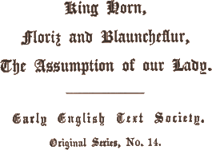
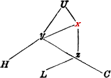
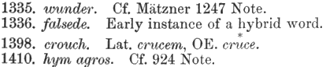

General Introduction and Table of Contents (separate file)
Introduction to King Horn
King Horn
Notes to King Horn
Floris and Blancheflur (separate
file)
The Assumption of Our Lady (separate
file)
Glossary (separate file)

1866 (re-edited 1901; reprinted 1962)
Price 30s.
§ 1. Setting of the Story, p. vii.
§ 2. Versions, p. viii.
§ 3. Elements of the Story, p. xvi.
§ 4. Topography, p. xvii.
§ 5. Style, p. xx.
§ 6. Versification, p. xxi.
§ 7. Dialect, p. xxiv.
§ 8. Manuscripts, p. xxviii.
By the beginning of the 13th century, when literature in the English tongue began to show some signs of revival, the earlier English epic tales seem to have been almost entirely obliterated from memory. A solitary survival seems to have been the story of the dragon-killing Wade with his famous boat Guingelot; but even this story is lost to us save for occasional references,I.1 and from these we must infer that all definite idea of its origin was lost, since Wade is associated, now with Weyland, now with Horn and Havelok, now with Lancelot. The place of these earlier epic tales was filled in Middle English times by a new set of tales for the most part no longer of purely native, popular origin. Tales were imported from every conceivable quarter, though usually by way of France, and even in the popular romances of Guy of Warwick and Bevis of Hampton, which are supposed to contain a kernel of genuine English tradition, the original story is almost unrecognizable amid the embellishments added. Similarly in the stories of Waldef and Hereward the historical facts are almost lost amid this mass of added foreign matter, and in the late romance of Richard Cœur de Lion we have to do, not with the historical Richard, but with a conventionalized hero of mediæval romance.
Standing apart from these largely conventionalized tales are the stories of Havelok and King Horn. These are supposed to have been among the first products of the second growth of English story. They seem to preserve, more than the other, later romances, their primitive traits, and are hence usually classed as English, or Germanic, in origin.
viiiThe story of Horn is known in several different versions. Of these the one printed in the present volume is the oldest and in many respects the most archaic. The story, which it will be unnecessary to summarize here, is told in a simple, direct style with a noticeable lack of unnecessary description inserted for embellishment. The explanation of the peculiar features of this version is no doubt to be found in the purpose for which this version was used. It was probably intended to be sung, as one would infer from the opening lines, and perhaps is such a song, or ballad, as the one which, as the French version informs us (R. H. 2776 ff. cf. p. xiv. below), Horn sang about his love Rigmenil. The manner of the narrative is determined by the song character of the poem. There is more detail than in a modern song, at the same time less detail than in a modern story. Events are sometimes simply referred to as though already known instead of being fully described. The bravery of Murry, Horn’s father, is alluded to in such a manner as to lead one to expect to hear more about his feats of prowess. No motive is given for the journey to Ireland. We are conducted from place to place with Horn, from Aylmer’s court in Westernesse to that of Thurston, or from Horn’s wedding feast at Aylmer’s court to the annihilation of the Saracen invaders of Suddenne, almost in a breath. In this way sometimes incidents are thrown absurdly out of perspective. For instance, when Horn wishes to ‘prove his knighthood’ (v. 588), while the others are at table, he sets out on his ‘fole,’ and at the seashore finds a shipload of heþene honde. He slays about a hundred of them. At eureche dunte þe heued of wente. He fixes the leader’s head on the point of his sword and thus returns to the hall. All this, which forms the matter for about four hundred twelve-syllabled lines in the more prolix French version, is here related in an off-hand manner, in about forty short lines. The pitched battle of the French version becomes here a mere after-dinner recreation. It would be possible to multiply instances (cf. pp. x-xii) showing the abridged character of the present version.
Very different from the English gleeman’s version, is the highly elaborated French version of the story. This version,I.2 which is preserved in three MSS. at Oxford, at Cambridge, and at London, consists of about 5250 lines of twelve syllables, arranged in laisses, or strophes, of about twenty lines bound together by a single rime. Here we have a full-fledged romance, with descriptions of rich adornments, of feastings, of battles, of ix games, and of tournaments quite in the manner of the contemporary romances current in France and in Norman England. The archaic traits of the English King Horn are no longer so obvious. The names of persons and of places, with the exception of those of Horn, Rymenhild : Rigmel (Rigmenil), Fiken(h)ild : Wikele, Modi : Modin, Westernesse : Westir (Yrlaunde), and Sudden(n)e, are quite different in the two versions.
But with all this difference of detail, the story in its essential elements is the same in the two versions. Wissmann,I.3 in the introduction to his critical edition, says, “der französische roman (R. H.) weist kein einziges notwendiges bindeglied, keinen schönen altertümlichen zug auf, den das englische gedicht, King Horn (K. H.) nicht enthielte; dieses dagegen hat trotz seines geringen umfanges, eine reiche von alten, wahrhaft poetischen motiven jenem voraus.” And further, “aus alle dem ergibt sich, dass K. H. keine bearbeitung des französischen romans sein kann.” Wissmann’s further conclusions, however, are less tenable, when he continues: “das umgekehrte verhältniss dagegen ist nicht nur denkbar, sondern bis zu einem gewissen grade sogar notwendig; eine ältere quelle als das lied von King Horn für R. H. vorauszusetzen sind wir durch nichts berechtigt.”
Limited space forbids a thorough-going comparison of the two versions. The essential elements of the story are in each case nearly the same. In the French version (R. H.) again Horn the prince with his companions is set afloat from Suddenne in an open boat, arrives in Bretaigne, is hospitably received by King Hunlaf, is loved by the princess Rigmenil, from whom he receives a magic ring, is betrayed by Wikele, one of his companions, and is exiled from Bretaigne. He takes ship for Westir, the court of King Godreche, and is well received by the king and his two sons. He distinguishes himself in all things, and is loved and wooed by the princess Lemburc. But after delivering the Irish kingdom (Westir) from an African invasion, he is recalled by a messenger to Bretaigne, where, after vanquishing his rival Modun in a tournament, he rescues Rigmenil and himself plays the part of bridegroom at the wedding prepared. He then repairs to Suddenne, and after ridding his father’s kingdom of the invaders, is warned in a dream of Wikele’s second treachery, and returns again just in time to save his bride from a forced marriage with Wikele. With the death of Wikele and the establishment of Horn’s loyal friend Haderof (Athulf) in Ireland and of Horn and Rigmenil in Suddenne, the French story ends.
In addition to this similarity in general outline must be mentioned x occasional parallelism between the two versions in minor details or even in phraseology. As instances of the first we may cite: Of his feire siȝte Al þe bur gan liȝte K. H. 385-6; De la belte de horn tute la chambre resplent. R. H. 1053. Drink to horn of horne K. H. 1145; Mes com apelent horn li engleis naturer R. H. 4206. He lokede on his rynge And þoȝte on Rymenhilde K. H. 873-4; Si regarde sa main e lanel kest gemmeȝ. Ke li fud de Rimel al departir doneȝ R. H. 3166-7. And whan þu farst to woȝe tak him þine gloue K. H. 793-4; Mes une rien uus di joe dont seieȝ purgardez, Si alez donneier ke oue uus nel menez Kar il est de beaute issi enluminez ke uus la v il iert petit serreȝ preiseȝ R. H. 2323-6. Biuore me to kerue And of þe cupe serue K. H. 233-4; Horn me seruira vi de ma cupe portant R. H. 463. As instances of phrases from King Horn reflected in R. H., we may cite: Stiwarde, tak nu here Mi fundlyng for to lere Of þine mestere, Of wude and of riuere K. H. 227-30; De bois de riueer refet il altre tal R. H. 377. Wiþute sail and roþer K. H. 188; Kil naient auirun dunt a (!) seient aidanȝ Sigle ne guuernad (!) dunt il seint naianȝ R. H. 60-61. Ston he dude lade, ant lym þerto he made K. H. 1502 H. Vn castel ad ia fet de pere e de furment R. H. 5097. These instances, which might be multiplied, will serve to show how closely related in origin are these two versions, English and French.
The identity of the two versions is, however, by no means complete. The more condensed version (K. H.) presents some traits not to be found in R. H. We may mention: Horn’s farewell to his boat, 139 ff.; Rimenhild’s assistance in bringing about the dubbing of Horn, 435 ff.; Rimenhild’s dream, 651 ff.; Horn’s charge to Athulf to care for Rimenhild, 743 ff.; the drowning of the messenger from Rimenhild to Horn, 968 ff.; the palmer’s account of Rimenhild’s grief, 1035 ff.; Athulf’s watching from the tower, 1091 ff.; Horn’s fictitious tale to Rimenhild of his own death, 1175 ff.
If K. H. offers these few traits independent of R. H., the latter, longer narrative introduces episode after episode either barely suggested in a single line of K. H., or entirely foreign to the English version. For example, we may mention: the more circumstantial account of Horn’s descent, and of the heroic death of Aaluf, 250 ff.; Rimel’s amusing method of wheedling Athelfrus into bringing Horn to her, 604 ff.; her confidences to her maid Herselot, 729 ff.; the elaborate account of Horn’s victory over Malbroin and Rodmund, 1295 ff.; Wikele’s contrived pretext for a quarrel with Horn, 1839 ff.; Horn’s loathness to take oath, though he is willing to vindicate his word by meeting in combat any two or even five or six chosen antagonists, 1924 ff.; the love of princess xi Lemburc for Horn, 2394 ff.; the stone-throwing contest, 2568 ff.; the game of chess, 2696 ff.; Lemburc’s apartments, 2709 ff.; the harp-playing, 2776 ff.; the elaborate battle description once more, 3234 ff.; the death of Egfer, 3358 ff.; the meeting of Horn with Wikele and Modin, 4094 ff.; the tournament at Rimil’s wedding, 4456 ff.; the victory, with Hardre’s aid, over the Saracens in Suddenne, 4604 ff.; the touching description of Horn’s meeting with his mother, 4882 ff.; the besiegement of Hunlaf and Rimel by Wikele, 5100 ff.; the intervention of Wikele’s brother, Wothere, 5052 ff., etc.I.4
If the subject matter in the two versions is different, the style is far more so. The simple, condensed, somewhat archaic manner of K. H. stands in marked contrast to the sophisticated style of the French romance. The difference is perhaps that to be expected between two versions, one intended for English-speaking, the other for French-speaking people.I.5 But the difference is perhaps more largely that between ballad and romance. In K. H. the author gives no evidence of himself directly or indirectly, whereas Thomas, the author of R. H., continually addresses his public in the second person and directly introduces his personal opinion. The incidents which in K. H. are condensed almost to unintelligibility, in R. H. are liberally supplied with motives and explanations. The character of Rimenhild in K. H., almost wild in its naturalness, suggests somewhat one of the female divinities of Germanic mythology. Rimel, of the French romance, is an eminently sophisticated, almost modern young woman who understands the arts of coaxing and of coquetry.
The luxury and refinement described in the French version, contrastI.6 markedly with the primitive manners and surroundings suggested in the English version. Rimenhild shares her single sleeping-room with her six maidens; Rimel has so many maids that these have private rooms, Rimel keeping by her only her one trusted maid. Rimenhild on her wedding day, has four maid attendants; Rimel, thirty. King Murry’s retinue consists of two knights, and the sons of the king of Westir appear to have been without retinue; in R. H. the two princes in their mesnée privée have vingt de gens ben escernée. Even the seneschal of King Hunlaf has twenty knights in his retinue. Stimming further points out the feudalistic relations existing between Horn and his companions in R. H. (as well as in H. C.) of which one can hardly detect a trace in xii K. H. Further the author of the romance, quite in keeping with the conventions of contemporary romances, has introduced and elaborated descriptions of battles and of sports and tournaments on every possible occasion. In R. H. Horn is a curteis knight, whose knightly honour forbids him to take oath.
Stimming further points out the difference in cultivation of manner as reflected in the love-making scenes of the two versions. When Athulf is introduced to Rimenhild’s bower, Anon vpon Aþulf child Rymenhild gan wexe wild, K. H. 295-6, she has him seat himself on her bed, embraces him, and offers herself as his bride. Rimel, on the other hand, who before Aþulf’s coming has carefully regarded the glass, pur veer sa belted, Pur saver de su vis cum il est culured, on his appearance, takes him by the hand, leads him to a seat, seats herself beside him, and then expresses the wish, “Bels amis, dès ore voil estre mise en vostre justise,” politely adding, “si vostre plaisir est.”
All this, Stimming concludes, is an unmistakable evidence of the later time of R. H.’s composition. Granting the truth of this conclusion, the difference of treatment in the two versions is also no doubt in part due to the difference in the public for which each version was intended, and also still more, perhaps, to the difference in function of the two works. It must be noted that K. H. is a popular ballad-like poem perhaps of the kind referred to in R. H., while the French R. H. is an artificial and conventionalized romance of prowess and love.
That the ballad-like version K. H., simple, even primitive in matter, in manner, and in metrical form, should have been derived from the sophisticated, artificial romance, R. H. deserves little consideration. On the other hand that the artificial romance should have been derived from the simple ballad-like story, incomplete in its record of details, is even more unworthy of consideration, though quite probably Thomas, the French romancer, may have been to some extent influenced by this English version, with which he was probably acquainted, as we may infer from the following passage:
Mes un lai ai oi dunt ioe sai la meitie
Si iol sousse tut, par ma crestiente
En cest nostre pais nad taunt bone cite
Ki tant me fust a main e á ma uolente
Ke ainz ne la perdisse ke lousse ublie
. . . . . . . . . . . .
Mut en auez oi parler en cest regne
E de lamur de horn ke ele od taunt ame
. . . . . . . . . . . .
Coe est ueir dist Guffer, Rigmel est mut loéé
Bele soeur de beaute en meinte cuntréé
E de horn ai oi meinte feiz renoméé
Quil est pruz e uallanz e corteis sanz pounéé.
The French romance is no doubt constructed from an English story, as we may infer from the proper names, which in general seem to be Germanic in origin, from occasional English words, e.g. welcumeȝ 800, xiii wite God, wrec 150, etc., from references to English such as, Mes com apelent horn li engleis, R. H. 4206, and especially from the general features of the story which seem to be Germanic. Further, “in the introduction to the French romance of Waldelf we are informed that the romance of Horn was taken from an English original” (T. Wright, Essays on Middle Ages, I, 102. London, 1846). The English gleeman’s version quite likely was composed directly from oral tradition, while the romance rests upon some version of the story, the “parchemin” so often referred to. This hypothetical version, judging from the identity of the story in its main outline with that in K. H., must be the version upon which R. H. rests also, or must rest upon the same tradition with K. H.
A third version of the story of Horn is the romance of Horn Childe and Maiden Rimnild, the only copy of which is the incomplete one contained in the famous collection of the Auchinleck MS. of the 14th century. (One leaf lost in the middle and one or two at the end.) Of this romance, which is composed in twelve-lined strophes, rime couée, there are preserved 1136 lines, that is to say, 96 strophes, not all complete. The story, very briefly summarized, is as follows:
Haþeolf, king of “al Ingelond fram Humber norþ,” has one son named Horn. To Horn Haþeolf gives eight companions and puts all under the instruction of Arlaund. Haþeolf annihilates a host of Danish invaders, but within nine months is again attacked, this time by three kings from Ireland, and after an heroic fight, in which he slays five thousand, is stoned to death, and “an erle of Northumberland” seizes the kingdom.
Herlaund conducts the nine boys “fer souþe in Inglond,” where they are received by Houlac the king. The king’s only daughter, Rimneld, loves him and asks Herlaund to bring Horn to her bower. As in the other versions, Arlaund first brings Haþerof, but the second time brings Horn to Rimneld, and the princess gives Horn rich presents, and promises to be his if he shall be dubbed knight. But Wikard and Wikel, two of Horn’s companions, calumniate Horn and Rimneld to the king, and Horn is banished. After vain attempts at a reconciliation with the king, he takes leave of Rimneld, who gives him a ring with a magic stone:
“When þe ston wexeþ wan
Þan chaungeþ þe þought of þi leman
When þe ston wexeþ rede
Þan haue y lorn mi maidenhed.”
Horn takes the name of Godebounde, has heroic adventure in the forest, wins a great tournament in Wales, then crosses over to Ireland, and delivers king Finlawe (Finlak) from his enemy, Malkan, the one who xiv had slain Horn’s father. Atula, Finlak’s daughter, loves Horn, but he remains true to Rimneld, notices that the stone in his ring has turned pale, and with a hundred knights, crosses over into England in time to save Rimneld from marrying King Moioun, overthrows Moioun in the tournament, slays Wigard and smites out the eye of the false Wiȝel, Wigard’s brother. Horn marries Rimneld, and, after five days of feasting, makes ready a force to go into North-Humberland to win back his father’s kingdom. The single MS. ends abruptly at this point.
It will be seen that the main outline of the story as told in the other two versions, is here preserved, but with many modifications, with some omissions and some additions. The scene of action has shifted. We hear no more of the to us obscure names Suddenne and Westir; the whole action takes place in the British isles. The names of the persons, too, are greatly transformed, Horn and Rimneld, and possibly Moioun being about the only names common to all the versions. The whole introduction of the present version, dealing with the bravery and death of Haþeolf, Horn’s father, which forms about a quarter of this romance version as preserved to us, is entirely strange to K. H. and to R. H. Other features peculiar to H. C. are: Haþeolf’s instructions to the boy companions of Horn, to bear fealty to Horn, 137 ff.; the fine gifts and rich entertainment by Rimnild of Herlaund and Haderof and, later, of Horn, 330 ff., 377 ff.; the manner of the courtship, where Horn no longer plays the reluctant part, urging his poverty as an excuse, 373 ff.; the episode of the departure of Horn’s companions Tebeaud, Winwald, Garins and Aþelston for foreign lands, 445 ff. Wikel here does not accuse Horn of designs on the king’s life and kingdom, 486 ff. Horn remains at home from the hunting, not to visit Rimnild, but “for blodeleteing, Al for a maladye.” 485 ff. There is no Saracen invasion of Houlac’s kingdom. Horn tries to appease the king, 541 ff. The ring has a different function, 571 ff. The ring it is that prompts Horn’s return to Rimnild. Still other features peculiar to this edition are: the heroic adventure in the forest, 613 ff.; the tournament at the court of Elidan in Wales, 664 ff.; and the whole account of Horn’s experiences in Ireland, the occasion of his journey there, the character of the battle (in which Horn is wounded), and the absence of mention of king Finlak’s proposal to give his daughter and kingdom to Horn.
All these independent traits in H. C. lead us to conclude that this version must rest, directly or indirectly, on a tradition different from that underlying K. H. and R. H. That, as Stimming thinks probable, the writer “unmittelbar aus der sage selbst geschöpft” seems unlikely considering xv the highly sophisticatedI.7 nature and artificial form of this version, and the frequent remarks of the author, “in boke as we rede,” etc. More likely it rests directly on an earlier version of the story, which in its turn rests on a Northern tradition of the story. That such a Northern tradition existed we have evidence in the Scottish ballads of Hind Horn [Child’s (F. J.) English and Scottish Ballads. Boston, 1882-84], which while emphasizing only one element, the separation of the two lovers and their reunion through the agency of the magic ring, agree with the H. C. version rather than with that of K. H. and R. H.
What, then, is the relation of H. C. to K. H. and to R. H.? Wissmann says, apparently with truth: “Das Gedicht von Horn Childe hat von dem Gehalt des K. H. nichts bewahrt, was nicht auch R. H. hätte.” On the other hand H. C. has a number of important traits in common with R. H., for instance, the names: Herland (R. H.); Herlaund, Arlaund, Harlaund, Arlond, etc. (H. C.); Allof (R. H.); Haþeolf (H. C.); Wikel (R. H.); Wiȝel (H. C.); Haþerof (R. H.); Haderof (H. C.) and Hunlaf (R. H.); Houlac (H. C.); further, Haderof’s ignorance of Herland’s intention to palm him off as Horn, the love of the Irish princess for Horn, Horn’s meeting with Moioun (Moging) and Wikard, and his riddle of the net told here, the tournament and the contest between Horn and Moioun, Horn’s thanks to king Houlac (Hunlaf). From the considerable French element in the vocabulary of H. C., including frequent rime words, the French form Cornwayle riming with the French phrase saun faile, it is reasonable to suppose that the author was acquainted with French, and the general tone of the romance, the feudalism inculcated by King Haþeolf, 133 ff., the tournaments and the general air of luxury in addition to the above-mentioned striking traits in common with R. H., suggest almost inevitably that the author of H. C. must have been acquainted with, and influenced by, the French version.
The Scottish ballads of Hind Horn (cf. Child, as above, I, 187), as said above, emphasize only one element of the original story, namely, the separation of Horn and the princess, and their reunion through the agency of the magic ring. The story in Hind Horn agrees more closely (notably in the function of the ring, peculiar to the Northern versions) with H. C. than with R. H. or K. H., and seems to rest, along with H. C., on a northern version of the story.
The later French romance Ponthus et la belle Sidoine is an adaptation xvi of the French version (R. H.) of the Horn story. It is purely an artificial product based on R. H., and has little bearing on the origin and history of the version in hand. It is interesting in this connection as showing how possible it is to tell the same story with different names, the only name in common between R. H., and the adaptation being that of the steward Herlant. (Cf. English translation, King Ponthus and the Fair Sidone, edited by F. J. Mather, Publ. of the Mod. Lang. Assoc. of America, xii, 1-150.) The story of Ponthus also appears in a German Volksbuch (cf. Simrock, I. 1 ff.).
The story of Horn, it is generally believed, had its origin in the turbulent times of the Danish invasions, but the kernel of genuine historical tradition is probably small. How the different elements in such a story aggregate, we can plainly see in the case of the Hereward: “The writer of the life of Hereward,” according to Wright, “had, among other sources of information, the work of the presbyter, Leofric, Hereward’s archdeacon. This Leofric, he tells us, occupied himself in collecting for the edification of his hearers, all the acts of the giants and warriors from the fables of the ancients, or, in the instance of more modern heroes, from the trustworthy relations of those who had known them, and in writing them in English that they might be preserved in people’s memories.” In this way grew the Hereward story, and in a similar manner, we may suppose, that the story of Horn attracted to itself many new and foreign elements, receiving its development and final form probably at the hands of the jongleurs, or gleemen, whom we are to think of as wandering widely and gathering romantic material from the most remote regions.
In another place (Publ. of the Mod. Lang. Assoc. of America, xv. 221-232) I have attempted to point out some of the ‘Germanic elements’ in the story. It seems possible to distinguish two essential elements in the story: (1) Horn’s expulsion from his kingdom and his return and avengement of his father’s death; (2) the separation and reunion of the faithful lovers. Of these elements the first seems to be especially Germanic. At least historic incidents which might supply the nucleus for such a tale were particularly common in connection with the continual wars between Denmark, Norway and Sweden, and also with the invasions of England, Danish and Norman. (Cf. the death of Beaduheard. Eng. Chron. (Winch.) a. 787, also the death of Aethelwulf at hands of Danes, avenged by his brother Aethelstan. Gaimar, 2391 ff.) The second element also may have been of Germanic origin, though it has become greatly conventionalized xvii and has come to be the more prominent element in the story. The minor features of the story, though often purely conventional, and, therefore, belonging to no distinct nationality, at times show Germanic traits, as for instance in the comitatus relation existing between Horn and his followers, in the manner of wooing and of wedding, in the etiquette of the feasts, in the etiquette of the duel, and in the formal challenge on the part of a champion of an invading host, to a duel upon the result of which shall depend the marriage of a princess or the fate of a kingdom (cf. Mod. Lang. Assoc. Publ., as above, pp. 228-231).
The story as it is preserved in K. H., the earliest of existing versions, is no doubt a greatly expanded form of the original nucleus. The timely rescue of the princess from a forced marriage, which in the Scottish ballad has been preserved at the expense of the complete loss of the other element, the recovery of the kingdom and the avengement of the father’s death, even in the earlier K. H. version has come quite to overshadow the recovery and revenge element. It seems very probable also that there has been a duplication of the rescue scene, due either to the desire of the jongleur, or minstrel, to repeat a successful climax, or to a blending of two versions of the same story, a not at all uncommon feature in such romances,I.8 and that the second rescue scene, with its more archaic and more particularly Germanic features, represents the sole turning-point in an earlier and simpler version, the first and more conventional rescue scene being an expansion contributed by a later composer. All this, which rests largely on conjecture, would assume for the nucleus of the story a relatively simple incident in which there are involved only two places, the kingdom from which the prince is expelled and which he regains, and the kingdom where he finds refuge.
The topography of the Horn story offers some difficult but interesting problems. In the northern version (H. C.) all is made relatively clear. The author of this version assigns the events to very definite places. Horn’s father is king of “al Ingelond fram Humber norþ.” He repels a Danish invasion on the east coast, and is slain by invaders from Ireland. Horn and his companions take refuge “fer souþe in Inglond.” Thence Horn goes in exile to Wales and later into Ireland. The Norman xviii trouvère, also, clarifies matters somewhat by assigning definite names to two of the three kingdoms involved, Bretaigne and Westir (Ki ore est Hirlonde lors westir fu apelee, 2184, H). But both the Norman and the older English versions have consistently the perplexing name Sudenne (Sodenne); and the earlier English version has also the vague name Westernesse (Westnesse), leaving as a certain starting-point in our study of the topography only Yrlonde, also referred to as westene lond (754 H).
From internal evidence in King Horn we learn little that is definite about the situation of Suddenne. In drifting from Suddenne to Westernesse, Horn and his companions spend “Al þe day and al þe niȝt, Til hit sprang dai liȝt,” K. H. 122-3; and again we are told of the same voyage “Dai hit is igon and oþer, Wiþute sail and roþer,” 187-8. On the return voyage to Suddenne, Biþinne daies fiue, þat schup gan ariue, 1295-6. On hearing of Fikenhild’s second treachery Horn exclaims, “Crist for his wundes fiue, To niȝt me þuder driue,” 1423-4, and then, Er þan horn hit wiste, To fore þe sunne vpriste, His schup stod vndur ture At Rymenhilde bure, 1435-39. From all which we can only conclude that ideas of direction and distance are very vague in the mind of the English composer.
In regard to the kingdom of Suddenne, some have thought that the name must be connected with Suðdene mentioned in Beowulf, which would make Suddenne refer to some place in northern Europe, possibly in Denmark. (Parallelism with the Havelok would also support this opinion.) But neither the proper names of the story, nor the phonology of the word Suddenne itself, support this view. WardI.9 suggests that the name is a mere vague poetical designation, and brings together historical facts and internal evidence in the attempt to determine the definite place. He cites the name Hornesbeorh on the Isle of Purbeck, Dorsetshire, calls attention to the phrase in King Horn, “y come into þis yle,” referring to the Sarazin incursion in which Horn’s father was killed, and from the fact that “it was upon Dorsetshire that a descent of the Northmen took place, which was the first recorded appearance in Wessex, and which evidently made a great impression upon the people,” concludes that “Dorsetshire has a very fair claim to be considered the birthplace of the Horn legend.”
One is loath, however, to let go the only thread that seems to lead to an explanation of the name Suddenne itself. Francisque Michel was the first to point out that in the Brit. Mus. text of Gaimar’s L’estorie des xix Engleis, one reads that “Edelbrit fu feit reis de Kent E de Sudeine ensement,” vv. 955-6. In spite of the fact that the other three versions have; one, Surrie, the other two Suthreie, one is tempted to cling to this clew, and the fact that in the same manuscript later, Gaimar, in referring to the same political division says,I.10 “Puis regnat son fiȝ, E Adelstán, un rei gentils, Li uns out Westsexe, e laltre Kent, Suthdreie, e Suthsexe ensement, vv. 2388-91, gives ground for the supposition that SudeineI.11 may refer collectively to Surrey and Sussex. In that case the coast of Sussex was probably the scene of the first act in the Horn drama.
Whichever of these views is the true one, we may be reasonably certain that the Suddenne in the mind of the composer of K. H. lay on the south coast of England. Knowing this, we may perhaps determine, at least approximately, the situation of Westernesse. In the Harleian and Laud MSS., the messenger sent to seek Horn, says, Ich seche from Westnesse horn knight of estnesse,” which indicates that the composer conceives Westernesse to be west of Suddenne. Further it is very certain, as Ward (as above, p. 449) points out, that an early version of the Horn story has supplied several of the incidents of the Hereward. The influence of the story of Horn on the Hereward is particularly obvious in chapters 4-6, where Hereward gets into trouble at the court of a king of Cornwall named Alef, by killing a champion who had claimed the princess in marriage; Hereward is imprisoned, but is released by the princess, who sends him to her chosen lover, the son of a king of Ireland; a letter subsequently reaches him, saying that she is about to be forced into marriage with another Irish prince. Hereward reaches Cornwall again, visits the bridal feast in disguise, and is presented with the cup by the princess. “This,” as Ward remarks, “is certainly some evidence that the Westnesse or Westernesse of our poem may be taken to signify Cornwall. The name, Aylmar (i.e. Athelmar), also does not oppose this view. The name was a very common one in South England, and was borne by two of the Aldermen of Devonshire, who seem to have had some authority over Cornwall also, one about 930, another in the early part of the 11th century, and both bearing the epithet ‘Ailmer the Great.’”
xxAnother possible explanation of Westernesse may be suggested. The duplication of names and incidents in Westernesse and Ireland has been referred to above. The -er suffix of Westernesse certainly suggests the -r termination in Westir (the name in R. H.), which is probably a Norse name for Ireland (cf. the other Norse names in Ireland: Thurston, Regnild, = Norse Ragnhilda, and Harild. Cf. also R. H. 2184 H, quoted above, p. xviii), and it is not at all impossible to conceive that in the original, simpler form of the story, there were but two scenes to this drama, and that Westernesse of the English version, and Westir of the Norman version, alike refer to Ireland, only that on account of the amplification of the story, one came to think of Aylmar’s kingdom as in England, and added a -nesse to the Norse form Westir (Vestr) so as to make the term fit a promontory on the western end of the south coast of England, in Devonshire or in Cornwall.
As we have seen, the story of Horn belongs to a second growth of English story. The manner of expression, and the general movement of the story are quite different from those peculiar to Anglo-Saxon poetry, lacking almost entirely the parallelism,—the appositional construction and the heaped-up epithets, or kennings of the earlier stories. With the large French element in the vocabulary, there seems to have been introduced a manner of expression more like the French than like the earlier English. The movement is direct, and the imagery very simple and popular. Cf. He was briȝt so þe glas. He was whit so þe flur, Rose red was his colur, 14-16, Also blak so eny cole, 624. Also he sprunge of stone, 1102, etc. In this respect King Horn is less closely linked with the past than is Layamon’s Brut, which was composed in the West Midlands, where the OE. traditions in poetry persisted the longest. The Brut, while presenting many of the modern features of manner and of phrase, still preserves much of the manner of the past. There are in King Horn a number of the conventionalized phrases, to be found also in Layamon (cf. Notes to vv. 11, 67, 69, etc.), but the number of such instances is much smaller than one would have expected, and if Layamon’s West Midland work represents an earlier stage than King Horn in the development from the Anglo-Saxon manner of writing, the composer of Horn has certainly been subjected to many new and modernizing influences.
The very element in common between Layamon and King Horn is, perhaps, the new, the modern phraseology more often than the old phraseology rooted in the past. While, then, there are but few traces of xxi the older English poetic phraseology, there is much in common between King Horn and the romances of the 13th and 14th centuries. The language in King Horn seems to be already again crystallizing into new conventional forms. In spite of the different demands of the metre of Horn from those of the later, more regular, forms of versification, there are a very great number of stereotyped phrases common to King Horn and to the contemporary and succeeding romances composed in the other metre. I have brought together in the Notes a number of instances of this agreement in phraseology. The minor elements, also, are often rather mediæval than Anglo-Saxon, and the customs described, the princess’s manner of receiving visitors, the manner of salutation in meeting and in parting, etc., if truly representing the manners of the time of the composition of King Horn, soon became conventionalized and common to the whole body of Middle English romance. (Cf. Notes to vv. 315, 319, 321, 403, 537, 739, etc.) In these respects the composer of K. H. no doubt at times follows the conventional mode of composition of his time, but he is probably also at times an innovator, for several scenes in Horn seem to have been prototypes directly imitated in later romances in the Ipomydon and in the Richard Coeur de Lion. (Cf. Notes to 239 ff., 264.)
On the whole, then, we see that the language of King Horn is much less influenced, than one would expect, by older English models. The language of the second growth of story seems to have fallen into new conventional moulds quite independent of the older tradition.
As we have seen, the phraseology of King Horn shows relatively little trace of influence by the older English traditional stereotyped forms of expression. In this respect if Layamon is the link connecting native English poetry with the past, King Horn is the link joining to the newer traditions of poetry, which were forming. For, as we have seen, if King Horn has some phrases in common with Layamon, these are the modern forms of expression more often than the phrases rooted in the older English tradition. And, as we have seen, while King Horn has relatively little of phraseology inherited from the past, it has a multitude of stereotyped phrases in common with the poetry of contemporary and later composition (cf. Notes). In the same way in versification, if Layamon is the link connecting with the Anglo-Saxon mode of versification, King Horn is the link connecting with the newer mode, of Romance or mediæval Latin origin.
xxiiThe exact theory of the versification of King Horn remains yet to be established. Luick in his article in Paul’s Grundriss offers the very ingenious hypothesis that in the ‘beginnings of English as well as of German rimed verse, we have before us the coming to light again of the primitive Teutonic measured song verse.’ This hypothesis, though ingenious and plausible, does not admit of verification, and it is perhaps safer to adhere to the view of Schipper (Grundriss der englischen Metrik), who sees in Layamon’s verse the direct traditional descendants of the OE. types, and in King Horn a further development of the versification of Layamon.
We see then, probably, in the versification of King Horn a transitional stage in the development of native English metre, connecting, as we have seen, more closely with the future than with the past. It was probably the occurrence in each verse of two syllables marked from the other syllables by a stronger stress, that gave rise to a feeling of uniformity in rhythm. This tendency toward uniformity in rhythm was fostered by the regular introduction of rime, for since the riming syllable naturally bore one of the two verse accents, and since the riming syllables in two riming verses would occupy the same relative position, hence in a riming verse the second of the two verse accents must balance with that in the other verse of the pair, and the balance established between the second pair of accents would naturally lead to a complete balance between the two verses. In other words the two verses would be levelled to the same rhythm.
The regular introduction of rime was, no doubt, attended by the gradual loss of alliteration, which would cease to be significant as marking the verse accent, since it could hardly be made to fall regularly on the same syllable with the rime, and would hence be merely an unorganic adornment of the verse. As the position of the two verse accents came to be a fixed one, there seems to have been a tendency by raising some of the syllables bearing merely a logical stress, to rhythmic importance, thus to bring about a verse with regular measure.
The most natural products of this development are the two types: (1) with three accents and feminine rime, the natural product of the OE. A, D, and C metrical types, (2) with four accents and masculine rime, the natural product of the OE. B and E types. These forms of verse were very similar, as Schipper has pointed out (as above, § 39), to two popular Romance forms of verse—namely: the first form, three accents with feminine ending, to the half verses of the Alexandrine; and the second form, four accents with masculine ending, to the verses of the short riming couplets and to the first member of the septenar. The xxiii development toward regular measure, which had its origin as explained above, was furthered by the influence of the Romance and Mediæval Latin forms of verse. In certain ME. poems, notably the Bestiary, there are to be found verses constructed regularly after Romance or Mediæval Latin models along with native forms in all the stages of development:
1. His muð is yet wel unkuð
Wið pater noster and crede;
Faren he norð, er fare he suð
Leren he sal his nede. vv. 112-15.
2. Ðe mire muneð us
Mete to tilen,
Longe liuenoðe,
ðis little wile. vv. 273-6.
Ðe leun stant on hille
And he man hunten here. vv. 1-2.
The native forms must have been influenced by this close association with foreign forms.
To these conditions and to this course of development we must probably attribute the origin of the versification in King Horn. The rime has become a regular and essential element, the alliteration, a rare and unessential element in the verse. The forms mark a transitional stage in development, but are more closely related to the new than to the old. There has been a half-hearted attempt to introduce regularity of measure, but the rhythm of the OE. types has still influenced the ear of the composer. The most frequent verse form is the one with three accents and feminine rime, about 1300 verses (Schipper). This is developed from the OE. through a stronger accent on one of the original theses; e.g., king he was biweste so longe so hit laste, vv. 5, 6 C, where the measure has been developed from the OE. A. type through stronger stress on was and so respectively. Sometimes the original OE. A. type is preserved; e.g., Hi slóȝen and fúȝten þe níȝt and þe úȝten, 1473-4 C. But that this was not considered normal is shown by the fact that the other two texts, L and H, have made these two verses quoted, fit into the new normal form, by adding a new syllable in each verse, so that we have in MS. L, He smýten ánd he foúten þe nýȝt and éke þe oúȝten, vv. 1473-4 L. Cf. also H. The next most frequent type is the one with four accents and masculine rime; e.g., Here sone hauede to name horn; Feyrer child ne micte ben born, 9, 10 L. Less frequent types are; that with three accents and masculine ending, e.g., þu art gret and strong, Fair and euene long, 99-100 C; and that with four accents and feminine rime, e.g., To deþe he hem alle broȝte, His fader deþ wel dere hi boȝte, 951-2 C (but cf. L and H, which have more normal forms).
While nearly all the verses may be made to fit into one of the types mentioned above, there are some which do not fit naturally into any one xxiv of the new types, but which seems rather to be a stereotyped form handed down from OE. tradition; e.g., Bi þe se side (OE. C type) 35, of alle wymmanne (OE. C type) 71, Wringinde here honde (OE. E type) 118, Bi þe se brinke 151, In to a galeie 199, He was þe faireste 187 C. (OE. C types). (Cf. L which tries to make this verse fit better into the new versification, For þat he was fayrest), We ben of sodenne 189 L, Of Cristene blode (OE. type E) 191 C. And þi fairnesse 227 C. þoru out westnesse 228 L (MS. C adapts the verse by changing the westnesse of L. H. to Westernesse).
Compound proper names seem to have been a source of confusion. Should bothI.12 elements of the name receive stress, primary and secondary, as in OE., or should only one? Notice the struggles of the scribes with verse 169: Hy metten wiþ almair king C, Metten he with aylmer king L, metten hue Eylmer, þe kyng H. Also 257. Ailbrus gan lere C, And aylbrous gan leren L, Aþelbrus gon leren H. On the whole the scribes have been fairly successful in making the native material fit into the new forms, but not unfrequently may be detected traces of the rhythm of the native OE. types, especially of the C type.
In what dialect King Horn was originally composed, it is not easy to determine. This is a particularly difficult matter because the real pronunciation is disguised behind a great diversity of written forms. Under the circumstances the only safe guide is to be found in the rimes. Even these are very unsatisfactory since they are too few to permit any safe generalizations. For instance, it is impossible to apply satisfactorily Prof. Hempl’s -wǭ-, -wō- test (cf. Journ. of Germ. Phil. I, pp. 14-30). In a similar way it is impossible to apply Pogatscher’s ingenious test by means of the shortened product of WG. ā, WS. ǣ (cf. Anglia, xxiii, pp. 301 ff.) because of want of rime material. Another difficulty in using the rime-test is the double pronunciation indicated, notably in the case of WS. -eald-, éa- as the result of contraction (e.g. WS. sléan), and of words with initial palatal ȝ- (e.g., WS. geong). Cf. examples below.
From a consideration of the phonology of the poem Wissmann concludes (King Horn, Untersuchungen, Strassburg, 1876, p. 33) that, “Im Allgemeinen ist der Charakter des Vocalismus ein südöstlicher, der jedoch von dem kentischen in vielen Punkten sich unterscheidet. Die grösste xxv Wahrscheinlichkeit hat Essex als Gegend der Entstehung für sich.” A further investigation reveals to me no reason for dissenting from this view. Some of the more prominent features of the phonology are as follows:
In all of the three MSS. the sign æ has been disused. In its place occurs, now a, now e, so that the indication of pronunciation is often ambiguous. That the letter a sometimes denotes the æ sound seems certain (cf. Wissmann, Untersuchungen, as above, p. 10). The original pure ă, as in some districts of America, had nearly disappeared, or been lengthened, or become o or part of a diphthong. The letter a was thus left free to denote the æ sound, though sometimes assisted in this function by the letter e.
OE. æ̆ and OE. ǣ (ē) shortened.
In the North and the Midland, OE. æ̆ and ǣ (umlaut of WG. ai) shortened, appear as a, OE. (WS.) ǣ (= WG. ā) shortened usually as e. In the West-Southern and Middle-Southern, (1) early writings have e (æ, ea), (2) later writings have a. In Kentish and East-Southern the prevailing vowel is e. (Cf. Morsbach, §§ 96-105.)
In K. H. OE. æ̆ appears (1) in C usually as a (one exception bed 536), (2) in H as e, e.g., sumwet : net 725-6, (3) in L as a or e. OE. ǣ (i-umlaut) shortened seems to have been written the same. Cf. 5-6, 653-4, 1249-50, with some variations from the rule in 21-2, 553-4, 1305-6, 701-2 C H. The pronunciation of this shortened OE. ǣ (i-umlaut) seems to have been e. Cf. geste : feste 553-4, 1305-6, biweste : laste 5-6. Apparent evidence to the contrary are haste : laste 653-4 C L (but beste : leste H), and icaste : ilaste 701-2 C H (but keste L), hadde : ladde 21-2, hadde : dradde 1249-50 C L, but hedde : dredde 1249-50 H.
Note 1. OE. (WS.) ǣ must have had a close pronunciation (ẹ̄) if we may judge from the rimes; here : lere 241-2, lede : ȝede 309-10 C, ete : suete 1349-50, lere : yfere 257-8, swete : forlete 231-2, seche : speche 183-4, 483-4, etc. Or perhaps we must conclude that ẹ̄ close and ę̄ open were not carefully distinguished in rime, for cf. stede : drede 273-4 C, and Note 2.
Note 2. OE. a when lengthened in open syllables seems to have had an open ę̄ sound. Cf. makede : verade 179-80, þere : fare 497-8 L H, speke : take 567-8, þere : aylmere 537-8 L, C H, 1613-14, ȝate : late 1123-4 C, 1593-4 C, brake : gate 1157-8 C, lede : made 1501-2 L H, slape : rape 1531-2 C. Cf. also the ai : ei rimes. L and H write ai, ay, ei, and ey without distinction. Cf. 1087-8 L, 1361-2 C, 1399-1400, etc.
xxviNote 3. Pogatscher’s ingenious test (Anglia, xxiii, 301 ff.) can not be applied here, because, so far as I can see, there are no instances of rimes with shortened OE. ǣ (WG. ā). This ǣ with original length occurs in rime, now with a lengthened in open syllable (cf. Note 2, above), now with ē. Cf. seche : speche 183-4, swete : forlete 231-2, etc.
On the whole, then, we may conclude that it is possible to assume for K. H. the East-Southern product e, but that if we do so we must also assume either inaccuracy in the rimes or a mixed dialect.
WS. ea before l + consonant is written, sometimes eld, sometimes old. It seems also to have had a double pronunciation. Both pronunciations are supported by rimes. Such rimes as welde : ȝelde 513-14 C H, felde : welde 451-2 H, bihelde : felde 901-2, support one pronunciation based on the OE. (WS.) breaking ea before l + cons., while Admirad : bald C, amyraud : baud L, Admyrold : bold H 95-6, seem to testify to the unbroken sound in OE. lengthened before -ld to ā and then opened to ǭ. For other instances with varying spelling cf. 17-18, 323-4, 397-8, 639-40, 1499-1500. In v. 497 the L reading talede seems to represent the OE. broken form as opposed to the unbroken form tolde in C and H.
OE. ĕ. There are many instances of e : i rimes. But it is seemingly impossible to determine thereby much concerning the dialect. (Cf. Morsb. §§ 109, 114, N. 1.) For examples of this rime, cf. wïlle : telle 383-4, 1015-16 C; stille : duelle 393-4 C; þikke : nekke 1327-8; snelle : wille 1581-2 C, etc.
The form sigge seems to belong especially to the South-East. (Morsb. 114, N. 1, 109, N. 4, also Wissman, King Horn, p. xiv.) Cf. K. H. vv. 1367-8, ligge : wiþsegge C, ligge : sigge L; lygge : wiþsugge H.
OE. ȳ̆, umlaut of ū̆ offers many difficulties. It is represented in writing by y, i, u, e. The rimes show the prevailing sound to have been e; e.g., Suddenne : kenne 155-6, 923-4, pelle : fulle 421-2, leste : beste 505-6, also 617-18, 671-2, 647-8, 703-4, 917-18, 919-20 L, 805-6, 795-6, 1479-80, 1637-8, 1341-2, 1367-8, etc. But cf. y : i in kesse : ywisse 461-2 C H, liȝte : driȝte 1405-6 C. That y : i rimes should occur, might be expected in view of the vague distinction between e and i as shown by the e : i rimes, but the number of y : e rimes attests to a pronunciation e. This is the strongest available evidence that K. H. was composed in the south-eastern district.
That the dialect of King Horn is a mixed dialect is supported by the treatment of æ above, by the double pronunciation of WS. -eald, and by further double pronunciations. OE. (WS.) slēan, flēan seem to have had double pronunciations. The ō pronunciation is attested to by the rime, xxvii slon : vpon C, slon : on L H, 47-8. The OE. e͞a is rendered probable by the written forms, sle : fle 1467-8 C, etc. Other double pronunciations are ȝonge : ispronge 579-80, and more frequently the i rime ȝonge : bringe 295-6, ringe : ȝonge 599-600.
Prof. Hempl’s -wǭ-, -wō- test does not yield very definite results in this text, but seems to indicate a southern dialect. Cf. two : þo 53-4 C, 37-8 L H, go : also 103-4, 107-8 L H, wo : þo 121-2, 279-80. But cf. wo : do 291-2. This might perhaps be cited as another evidence of mixed dialect.
For consonants we have no definite rime tests, and consequently can learn concerning them little more than the scribal preferences. In all three texts, however, the southern forms are the favoured ones; e.g. ȝeue, ȝate. Here again, however, we have double forms; e.g. wurche : chirche 1481-2, but werke : derke 1547-8 C H; yliche : riche 19, 20, 357-8; ilike : biswike 305-6, though, perhaps, we are to seek the explanation of these double forms in difference of vowel-ending rather than in difference of dialect.
From the inflections as from the consonants we can gain no very exact information, and for the same reason. The evidence, however, such as it is, points in the same direction, toward the south. The regular endings of the present indicative seem to be -e, -est, -eþ for the singular and -eþ for the plural. The forms are not numerous on account of the infrequent use of the present tense. There are some departures from these normal endings. ben occurs occasionally in the plural of the verb ‘be’; e.g. 882 L, 1643 C L, 177 H. Other traces of the Midland ending -en are to be seen, wilen 2 L, 7 H, etc. Such forms as þou seydes 588 L, þou biginnes 608 L, wepes þou 696 L, are probably to be explained as mistakes of the scribe of this MS., who frequently leaves off a final consonant.
The conservative forms of the past participle, preserving the old prefix as i- or y-, also indicate a southern dialect for the scribes at least.
The personal pronouns preserve the conservative southern forms, rare exceptions being sche 380 L, in place of the normal he, and þei 1557 C, þe 55 L, for the normal hi.
From what has been said above, it seems fairly certain that the original dialect was a southern one, and probably a south-eastern one. There are, however, some features which distinguish the dialect of Horn from the Kentish. (Cf. Morsbach, § 9, b.) For instance, I may cite the history of the breaking ea before r + cons. In K. H. this is usually written a. (Cf. 481-2, 751-2, 1147-8.) But in case of lengthening before -rn, we see that the OE. broken ea pronunciation must have been xxviii the basis; e.g., werne : berne C L, werne : berne H, 753-4, 985-6, 749-50 L, 1513-14 H, erne : werne 937-8 H. The combinations ē̆o, ī̆o, ēa are very regularly monophthonged, not preserving any of the Kentish diversity of form.
The time of composition must have been fairly late, as we must infer from the number of French words even in the rimes. That K. H. was composed later than the beginning of the 13th century, we may conclude from the fact that OE. ā has been regularly converted into -ǭ-. Cf. drof : of 129-30, forsoke : loke 799-800, etc. That it was composed in the second half of the century seems certain from the regularity of the conversion of ā to ǭ-, and further from the lengthening of short vowels in open syllables. Of this latter phenomenon we have very few certain instances. Such rimes, however, as þere : fare 497-8 L H and stede : drede 273-4 C, seem to be certain enough. (Cf. also 179-80, 537-8, 567-8, 1123-4 C, 1157-8 C, 1501-2 L H, 1531-2 C, 1613-14.)
The English story of King Horn is preserved in three MSS.
1. The Cambridge University MS. Gg. 4. 27, 2, which forms the nucleus of the present volume, is merely a fragment of fourteen folios. It contains on its first folios the latter part of the story of Floris and Blauncheflur, which is printed in the present volume. This is followed by King Horn entire, which is followed by the fragment, printed in this volume, of the Assumption.
The Cambridge MS. is written in a very plain book-hand, apparently of the latter half of the 13th century. The folios are written in double columns, and occasionally, since the lines are short, two lines are joined in one. The initial letters are written a little apart from the rest, and are marked with strokes of red.
This text of King Horn is the one printed by Lumby in the first edition of the present volume.
2. Laud Misc. MS. 108 is well known because containing one of the earliest collections of legends. It contains sixty-one legends (the Southern Cycle) followed by three religious poems, these in turn followed by the romances of Havelok and Horn, and these followed by three further legends, in a later hand of the 15th century.
The MS. is written in double columns on parchment, and probably dates back to 1325. The texts of Horn and Havelok are written in a fine book-hand. The lives that are appended are written in a later, much less formal hand.
xxix[For full description of the MS. and its contents, see C. Horstmann, Altenglische Legenden, pp. x-xii, Paderborn, 1875.]
This text of King Horn is printed by C. Horstmann in Herrig’s Archiv, 1872, pp. 39-58.
3. Harleian MS. 2253 is well known to all connoisseurs of early lyric poetry. It seems to be the collection of a genuine lover of poetry. In the words of the Brit. Mus. Catalogue it is, “A parchment book in small folio, written by several hands, upon several subjects; partly in old French, partly in Latin, and partly in old English; partly in prose, partly in verse.” The lyrical poems have been reprinted by T. Wright (Specimens of Lyric Poetry, Percy Society, London, 1842), who believes that the collection had its origin in the Abbey of Leominster in Herefordshire. The English poems have also been published by Dr. K. Böddeker (Altenglische Dichtungen des MS. Harl. 2253. Berlin, 1878).
The MS. is written in an informal, but legible hand, probably of the early 14th century. The writer of the text of King Horn seems to have been acquainted with the French version of the story, as we must infer from his substitution of Allof (R. H. aaluf) for Murry. The word geste in the heading, and the French orthography throughout, together with occasional forms as enimis 1024 H, nom. sing. of enemy (cf. Note), 659 H, maister gen. sing., 123 L, Horns, nom. sing. go along with the evidence of the French associations of the MS., to make us believe that the scribe was an Anglo-Norman.
This text of King Horn has been printed by J. Ritson (Anc. Engl. Metr. Rom., London, 1882, II, pp. 91-155).
We thus see that for the preservation of King Horn we are indebted to (1) a fragment of a collection of stories, (2) a southern collection of legends, to which have been appended Havelok and Horn, (3) a genuine literary collection probably made in Herefordshire by an Anglo-Norman.
Of these MSS. no one is derived from either of the others. To indicate their interrelations, I will borrow the diagram of Wissmann expressing the result of his studies in this matter. (Cf. Wissmann, King Horn, p. v, Strassburg, 1881.)

Missing “x” supplied from Wissman.
I.1 Cf. Skeat’s Chaucer. Note to Marchaundes Tale 1424, and Tr. and C. iii, 614.
I.2 Brede (R.) und Stengel (E.). Das agn. Lied vom wackern Ritter Horn. Ausg. u. Abh. VIII. Marburg, 1883. Also Fr. Michel. For the Bannatyne Club, 1845.
I.3 Wissmann (Th.), Quell. u. Forsch. XVI. Strassburg, 1876.
I.4 For complete list of traits peculiar to R. H. cf. J. Caro, in Eng. Stud. xii, 331-2.
I.5 Cf. the relation of the English version of Fl. and Bl. to the French original.
I.6 Cf. Stimming. Review of Wissmann’s ed. of K. H. Engl. Stud. i, 357 ff.
I.7 The author of H. C. endeavours to be realistic. There are no more vague terms, like Sarazins, etc. Further, there is a parallelism with the story of Harold, suggesting that this version has been influenced by historical events.
I.8 Cf. the seeming duplication of names, Rymenhild, Reymyld etc.; Reynild, Ermenyld, etc., all of which may have come from an original Eormenhild (cf. OE. Leechdoms), the variants being due to metathesis as in OE. yrnan : rinnan. Cf. also the explanation of Westernesse below, p. xx.
I.9 Ward (H. L. W.), Catalogue of Romances in the British Museum, I, 450.
I.10 Aethelwulf was King of Kent, Surrey and Sussex (Gaimar, 2391. Cf. also 2476, 2480-82). Aethelstan had Wessex, for see 2480-82. Aethelwulf was defeated by the Danes (2440-46), and was avenged by his brother Aethelstan, who defeated the Danes (2480-83).
I.11 All three MSS. of K. H. say of Horn’s father, “king he wes by weste,” perhaps referring to this western division of the eastern kingdom. Asser visits Alfred at the latter’s royal ‘vill’ which is called Denne. East Dene (or Dean) and West Dene are two villages near Chichester. There are also two villages of the same name near Eastbourne.
I.12 The rimes throughout indicate that the second syllables in compound words and the more important suffixes still bore an accent. Cf. 169-70, 199-200, 209-10, 219-20, 1353-4, etc.
Cambr. Univ. MS. Gg. 4. 27. 2.
Laud Misc. MS. 108, fol. 219 b.
Harl. MS. 2253.
[leaf 83]
Her bygynneþ þe geste of kyng Horn.
Alle ben he bliþe
Þat to me wilen liþe,
A song ich wille you singe
4 Of morye þe kinge.
¶ Alle heo ben blyþe
þat to my song ylyþe,
a song ychulle ou singe
4 of Allof þe gode kynge.
The | corresponds to a sign used in the MS. to mark the divisions between the lines.
See endnote in main file.
King Murry and his queen, Godhild, have a son named Horn.
King he was biweste
So longe so hit laste.
Godhild het his quen;
8Faire ne miȝte non ben.
He hadde a sone þat het horn;
Fairer ne miste non beo born,
Ne no rein vpon birine,
12Ne sunne vpon bischine.
King he was bi westen
Wel þat hise dayes lesten,
And godild hise gode quene;
8 Feyrer non micte bene.
Here sone hauede to name horn;
Feyrer child ne micte ben born.
Ne reyn ne micte upon reyne,
12 Ne no sonne by schine.
kyng he wes by weste
þe whiles hit yleste,
ant godylt his gode quene;
8 no feyrore myhte bene.
ant huere sone hihte horn;
feyrore child ne myhte be born.
for reyn ne myhte by ryne
12 ne sonne myhte shyne.
He is marvellously fair and fifteen years old.
Fairer nis non þane he was;
He was briȝt so þe glas.
He was whit so þe flur,
16Rose red was his colur.
[No gap in MS. . . . .
. . . . . . . . .]
2In none kinge riche
20Nas non his iliche.
Fayrer child þanne he was,
Brict so euere any glas,
Whit so any lili flour,
16 So rose red was hys colur.
He was fayr and eke bold
And of fiftene winter hold.
Was noman him yliche
20 Bi none kinges riche.
feyrore child þen he was,
bryht so euer eny glas,
so whit so eny lylye flour,
16 so rose red wes his colour.
He wes feyr ant eke bold
ant of fyftene wynter old.
[leaf 83, back]
Nis non his yliche
20 in none kinges ryche.
Saracens invade the land.
Horn has twelve companions.
Twelf feren he hadde
Þat alle wiþ him ladde,
Alle riche mannes sones,
24And alle hi were faire gomes,
Wiþ him for to pleie.
And mest he luuede tweie;
xij feren he hadde
Þat he mid him ladde,
And alle rich kinges sones,
24 And alle swiþe fayre gomes,
Mid hym forto pleye.
But mest he louede tueye;
tueye feren he hadde
þat he wiþ him ladde,
alle richemenne sones,
24 ant alle suyþe feyre gomes,
wyþ him forte pleye.
mest he louede tueye;
Athulf the best, and Fikenhild the worst.
Þat on was hoten ayol child,
28 And þat oþer fokenild.
Ayol was þe beste
And fokenild þe werste.
Þat on wes hoten Athulf chyld,
28 ant þat oþer Fykenyld.
Athulf wes þe beste
ant fykenyld þe werste.
King Murry while riding, finds fifteen ships arrived on the strand.
Hit was vpon a someres day,
32Also ihc ȝou telle may,
Murri þe gode king
Rod on his pleing
Bi þe se side,
36Ase he was woned ride.
Hit was sone someres day,
32 Also ich nou tellen may,
Þat moye þe gode kinge
Rod on his pleyhinge
Bi þe se syde,
36 Þer he was woned to ryde.
Hyt was vpon a someres day,
32 also ich ou telle may,
Allof þe gode kyng
rod vpon ys pleyȝyng
bi þe see side,
36 þer he was woned to ryde.
[No gap in MS. . . . .
. . . . . . . . .]
He fond bi þe stronde,
40Ariued on his londe,
Schipes fiftene,
Wiþ sarazins kene.
He axede what isoȝte
44Oþer to londe broȝte.
With him riden bote tvo;
Al to fewe ware þo.
He fond bi þe stronde,
40 Ariued on his londe,
Schipes xv,
Of sarazines kene.
He acsede wat he sowte
44 Oþer to londe broucte.
wiþ him ne ryde bote tuo;
al to fewe hue were þo.
he fond by þe stronde,
40 aryued on is londe,
shipes fyftene,
of sarazynes kene.
he askede whet hue sohten
44 oþer on is lond brohten.
A Payn hit of herde
And hym wel sone answarede,
“Þi lond folk we schulle slon
48And alle þat Crist luueþ vpon,
And þe selue riȝt anon;
Ne schaltu todai henne gon.”
A peynym it yherde
And sone answerede,
“Þi lond folc we wilen slon
48 And al þat god leuet on;
And þe we solen sone anon;
Sald þou neuere henne gon.”
a payen hit yherde
ant sone him onsuerede,
“þy lond folk we wolleþ slon
48 þat euer crist leueþ on;
ant þe we wolleþ ryht anon;
shalt þou neuer henne gon.”
Saracens kill Horn’s father.
After a brave defence, the king and his two companions are slain,
Þe kyng aliȝte of his stede,
52For þo he hauede nede,
And his gode kniȝtes two;
Al to fewe he hadde þo.
Swerd hi gunne gripe
56And to gadere smite.
Hy smyten vnder schelde
Þat sume hit yfelde.
Þe king hadde al to fewe
60Toȝenes so vele schrewe.
Þe king licte adoun of his stede,
52 For þo he hauede nede,
And hise gode knictes ij,
But ywis hem was ful wo.
Swerdes þe gonne gripe
56 And to gydere smyte.
He fouten an onder selde
Some of hem he felde.
He weren al to fewe
60 Ayen so fele srewe.
þe kyng lyhte of his stede,
52 for þo he heuede nede,
ant his gode feren tuo;
mid ywis huem wes ful wo.
swerd hy gonne gripe
56 ant to gedere smyte.
hy smyten under shelde,
þat hy somme yfelde.
¶ þe kyng hade to fewe
60 aȝeyn so monie schrewe.
and the Saracens begin to waste the land.
So fele miȝten yþe
Bringe hem þre to diþe.
¶ Þe pains come to londe
64And neme hit in here honde.
Þat folc hi gunne quelle
And churchen for to felle.
Sone micten atteþKH1
Bringen þre deþe.
Þe paynimes comen to londe
64 And nomen hyt al to honde.
Cherches he gonnen felle,
And folc he gonne quelle.
KH.1 after þ a letter erased
so fele myhten eþe
bringe þre to deþe.
þe payns come to londe
64 ant nomen hit an honde.
þe folk hy gonne quelle
ant sarazyns to felle.
Þer ne moste libbe
68Þe fremde ne þe sibbe,
Bute hi here laȝe asoke
And to here toke.
Of alle wymmanne
72Wurst was godhild þanne.
Þer ne micte libbe
68 Þe fremde ne þe sibbe,
Bote he here ley forsoken
And to here token.
Of alle wimmenne
72 Verst was godyld onne.
þer ne myhte libbe
68 þe fremede ne þe sibbe,
bote he is lawe forsoke
ant to huere toke.
of alle wymmanne
72 werst wes godyld þanne.
Godhild grieves much,
For Murri heo weop sore
And for horn ȝute more.
[No gap in MS. . . . .
. . . . . . . . .]
For moy he wep sore
And for horn wel more.
Godild hauede so michel sore
76Micte no wimman habbe more.
for Allof hy wepeþ sore
ant for horn ȝet more.
Godild hade so muche sore
76 þat habbe myhte hue na more.
Godhild takes refuge in a cave.
but retires alone to a cave, where she continues to observe the Christian religion.
He wenten vt of halle,
Fram hire Maidenes alle,
Vnder a roche of stone.
80Þer heo liuede alone.
Þer heo seruede gode,
Aȝenes þe paynes forbode.
Þe vente hout of halle,
Fram hire maydenes alle,
In to a roche of stone.
80 Þar he wonede allone.
Þer he seruede god,
Ayenes þe houndes forbod.
hue wente out of halle,
from hire maidnes alle,
vnder a roche of stone.
80 þer hue wonede al one.
þer hue seruede gode,
aȝeyn þe payenes forbode.
Þer he seruede criste,
84Þat no payn hit ne wiste.
Euere heo bad for horn child,
Þat Iesu crist him beo myld.
Horn was in paynes honde
88Wiþ his feren of þe londe.
Muchel was his fairhede,
For ihesu crist him makede.
Þer he seruede criste,
84 Þat paynimes ne wiste,
And euere bed for horn child,
Þat ihesu crist him were mild.
Horn was in peynims honde,
88 Mid his feren of þe londe.
Miche was his fayrhede,
So ihesu him hauede made.
þer hue seruede crist,
84 þat þe payenes hit nust.
ant euer hue bad for horn child,
þat crist him wrþe myld.
¶ Horn wes in payenes hond,
88 mid is feren of þe lond.
muche wes þe feyrhade
þat ihesu crist him made.
Saracens deliberate over Horn.
The pagans save Horn and his companions on account of Horn’s fairness,
Þo hundes wolde slon,
92 And some him wolde flon.
Ȝif hornes fayrede nere,
Þe child yslawe ware.
payenes him wolde slo
92 ant summe him wolde flo.
ȝyf hornes feyrnesse nere,
yslawe þis children were.
Þanne spak on Admirad,
96Of wordes he was bald,
“Horn, þu art wel kene,
And þat is wel isene;
Þu art gret and strong,
100fair and euene long.
Þu schalt waxe more
Bi fulle seue ȝere.
Uan bi spek him amyraud,
96 Of wordes he was swiþe baud,
“Horn, þou art swiþe scene,
And follyche swiþe kene;
Þou art fayr and eke strong,
100 Þou art eueneliche long.
Þou scald more wexe
In þis fif yere þe nexte.
þo spec on Admyrold,
96 of wordes he wes swyþe bold,
“horn, þou art swyþe kene,
bryht of hewe ant shene;
þou art fayr ant eke strong
100 ant eke eueneliche long.
[No gap in MS. . .
. . . . . . . . .]
at the same time with forebodings that if Horn lives, he will take revenge.
Ȝef þu mote to liue go,
104And þine feren also,
Ȝef hit so bi falle,
Ȝe scholde slen vs alle.
Þaruore þu most to stere,
108Þu and þine ifere.
To schupe schulle ȝe funde
And sinke to þe grunde.
Ȝif þu to liue mictest go,
104 An þine feren also,
Þat micte so bifalle
Þou suldes slen us alle.
Þe for þou scald to stron go
108 And þine feren also.
To schip ye schulen stounde
A sinken to þe grunde.
ȝef þou to lyue mote go,
104 ant þyne feren also,
þat ymay byfalle
þat ȝe shule slen vs alle.
[leaf 84]
þare fore þou shalt to streme go,
108 þou ant þy feren also.
to shipe ȝe shule founde
ant sinke to þe grounde.
Þe se ȝou schal adrenche;
112Ne schal hit us noȝt of þinche.
For if þu were aliue,
Wiþ swerd oþer wiþ kniue
6We scholden alle deie,
116And þi fader deþ abeie.”
Þe se þe sal adrinke;
112 Ne sal hit us of þinke.
For yf þou come to liue,
With suerdes or with cniue
We sholde alle deye,
116 Þi faderes det abeye.”
þe see þe shal adrenche;
112 ne shal hit vs of þenche.
for ȝef þou were alyue,
wiþ suerd oþer wiþ knyue
we shulden alle deȝe,
116 þy fader deþ to beye.”
Horn is put to sea in a boat.
Grieving sorely, the children are put aboard the boat,
Þe children hi broȝte to stronde,
Wringinde here honde,
Into schupes borde
120At þe furste worde.
Ofte hadde horn beo wo,
At neure wurs þan him was þo.
[No gap in MS. . . .
. . . . . . . . .]
Þe childre yede to stronde,
Wringende here honde.
[No gap in MS. . . . .
. . . . . . . . .]
Ofte hauede horn child be wo,
Bute neuere werse þan þo.
Horns yede in to þe shipes bord
124Sone at þe firste word,
And alle hise feren,
Þat ware him lef and dere.
þe children ede to þe stronde,
wryngynde huere honde,
ant in to shipes borde
120 at þe furste worde.
ofte hade horn be wo,
ah neuer wors þen him wes þo.
[No gap in MS. . .
. . . . . . . . .]
Þe se bigan to flowe
128And hornchild to rowe.
Þe se þat schup so faste drof,
Þe children dradde þer of.
Hi wenden to wisse
132Of here lif to misse,
Þe se bigan to flowen
128 And horn faste to rowen.
And here schip swiþe drof;
Þe children adred þer of.
Þei wenden alle wel ywis
132 Of here lif haued ymis,
¶ þe see bygon to flowen
128 ant horn faste to rowen
ant þat ship wel suyþe drof,
ant horn wes adred þer of,
hue wenden mid ywisse
132 of huere lyue to misse.
and the following morning see land.
Al þe day and al þe niȝt,
Til hit sprang dai liȝt.
¶ Til horn saȝ on þe stronde
136Men gon in þe londe.
“Feren,” quaþ he, “ȝonge,
Ihc telle ȝou tiþinge.
Al þe day and al þe nict,
Til him sprong þe day lyt.
Til horn bi þe stronde
136 Seth men gon alonde.
“Feren,” he seyde, “singe,
Y telle ȝou a tidinge.
al þe day ant al þe nyht,
o þat sprong þe day lyht,
Flotterede horn by þe stronde,
136 er he seye eny londe.
“feren,” quoþ horn þe ȝynge,
“y telle ou tydynge.
Horn announces land to his companions.
Ihc here foȝeles singe
140And þat gras him springe.
Bliþe beo we on lyue,
Vre schup is on ryue.”
Of schup hi gunne funde
144And setten fout to grunde.
Ych here foules singe
140 And so þe gras him springe.
Bliþe be we o liue,
Houre schip hys come ryue.”
Of schip þe gon fonde
144 An sette fot on grunde.
Ich here foules singe,
140 ant se þe grases springe.
blyþe be ȝe alyue,
vr ship is come to ryue.”
of shipe hy gonne founde
144 ant sette fot to grounde.
Horn’s farewell to the boat.
All disembark, and Horn bids the boat a touching farewell, wishing it ‘dayes gode,’
Bi þe se side
Hi leten þat schup ride.
Þanne spak him child horn,
148In suddene he was iborn,
“Schup, bi þe se flode,
Daies haue þu gode;
Bi þe se brinke
152No water þe na drinke.
[No gap in MS. . . . .
. . . . . . . . .]
Bi þe se side
Here schip bigan to glide.
Þanne spek þe chid horn,
148 In sodenne he was yborn,
“Go nou, schip, by flode,
And haue dawes gode.
[No gap in MS. . . . .
. . . . . . . . .]
Softe mote þou stirie,
No water þe derie.
by þe see syde
hure ship bigon to ryde.
þenne spec him child horn,
148 in sudenne he was yborn,
“nou, ship, by þe flode,
haue dayes gode,
by þe see brynke
152 no water þe adrynke.
softe mote þou sterye,
þat water þe ne derye.
and charging it with messages to his mother and friends.
Ȝef þu cume to Suddenne,
156Gret þu wel of myne kenne;
Gret þu wel my moder,
Godhild, quen þe gode.
And seie þe paene kyng,
160Iesucristes wiþering,
Þat ihc am hol and fer
On þis lond ariued her.
8And seie þat hei schal fonde
164Þe dent of myne honde.”
Wanne þou comes to sodenne,
156 Gret wel al mi kinne,
And grete wel þe gode
Quen godild, my moder.
And sey þat heþene king,
160 Ihesu cristes wiþerling,
Þat ichc lef and dere,
On londe am riued here.
And sei þat he shal fonge
164 Þe deth of mine honde.”
ȝef þou comest to sudenne,
156 gret hem þat me kenne.
gret wel þe gode
quene godild, mi moder.
ant sey þene heþene kyng,
160 ihesu cristes wytherlyng,
þat ich hol ant fere,
in londe aryuede here.
ant say þat he shal fonde
164 þen deþ of myne honde.”
King Aylmer welcomes the children.
The children set out from the shore and meet King Aylmer,
Þe schip bigan to flete
And horn child forto wepe.
Þe children yede to towne
168 Bi dales and bi downe.
¶ Þe ship bigon to fleoten
ant horn child to weopen.
by dales ant by dounes
168 þe children eoden to tounes.
Hy metten wiþ almair king,
Crist ȝeuen him his blessing,
King of Westernesse,
172Crist ȝiue him Muchel blisse.
Metten he with aylmer king,
God him yeue god timing,
King of westnesse,
172 God him yeue blisse.
metten hue Eylmer, þe kyng,
crist him ȝeue god tymyng,
kyng of westnesse,
172 c[ri]st him myhte blesse.
who greets them kindly and asks their history.
He him spac to horn child
Wordes þat were Mild,
“Whannes beo ȝe, faire gumes,
176Þat her to londe beoþ icume,
Alle þrottene
Of bodie swiþe kene?
Bigod þat me makede,
180A swihc fair verade
Ne sauȝ ihc in none stunde
Bi westene londe.
Seie me wat ȝe seche.”
For he spek to horn child
Wordes wel swiþe mild,
“Wenne be ye, fayre grome,
176 Þat here to londe ben ycome,
Alle xiij
Of bodi swiþe schene?
Bi ihesu þat me made,
180 So fayre on ereþ clade,
Ne say neuere stonde
In al westnesse londe.
Sey me wat ye seche.”
he spec to horn child
wordes suyþe myld,
“whenne be ȝe gomen,
176 þat bueþ her a londe ycomen,
alle þrettene
of bodye suyþe kene?
by god þat me made,
180 so feyr a felaurade
ne seh y neuer stonde
in westnesse Londe.
say me whet ȝe seche.”
184Horn spak here speche,
He spak for hem alle,
Vor so hit moste biualle.
9He was þe faireste
188And of wit þe beste.
184 Horn spak here speche,
Hor spak for hem alle,
So hit moste by falle,
For þat he was fayrest
188 And of witte wisest.
184 horn spec huere speche.
¶ Horn spac for huem alle,
for so hit moste byfalle;
he wes þe wyseste
188 ant of wytte þe beste.
Horn tells his history.
Horn tells the king about their adventures,
¶ “We beoþ of Suddenne,
Icome of gode kenne,
Of Cristene blode
192And kynges suþe gode.
Payns þer gunne ariue
And duden hem of lyue.
Hi sloȝen and to droȝe
196Cristenemen inoȝe.
“We ben of sodenne,
ycomen of godemenne,
Of cristene blode
192 And of swiþe gode.
Paynims þer were riued
And broucten men of liue.
He slowe and to drowe
196 Cristene men hy nowe.
“we bueþ of sudenne,
ycome of gode kenne,
of cristene blode,
192 of cunne swyþe gode.
payenes þer connen aryue
ant cristine brohten of lyue,
slowen ant to drowe
196 cristinemen ynowe.
So crist me mote rede,
Vs he dude lede
In to a galeie,
200Wiþ þe se to pleie.
Dai hit is igon and oþer
Wiþute sail and roþer.
So god me mote rede.
Vs he deden lede
In to salyley,
200 Wit þe se to pleye.
Day igo and oþer
Wit uten seyl and roþer.
so crist me mote rede,
ous hy duden lede
[leaf 84, back]
In to a galeye,
200 wiþ þe see to pleye.
day is gon ant oper
wiþ oute seyl ant roþer.
and bids him do his will with them.
Vre schip bigan to swymme
204To þis londes brymme.
Nu þu miȝt vs slen, and binde
Vre honde bihynde.
Bute ȝef hit beo þi wille,
208Helpe þat we ne spille.”
¶ Þanne spak þe gode kyng,
I wis he nas no Niþing,
And hure schip swemme gan,
204 And he to londe it wan.
Nou men us binde
Oure honden us bi hinden,
And yf it be þi wille,
208 Help us þat we ne spille.”
Þo bispac aylmer king,
Was he neuere nyþing,
vre ship flet forþ ylome,
204 ant her to londe hit ys ycome.
Nou þou myht vs slen, ant bynde
oure honde vs bihynde.
ah ȝef hit is þi wille,
208 help vs þat we ne spille.”
¶ Þo spac þe gode kyng,
he nes neuer nyþyng,
Horn tells his name.
Aylmer asks Horn’s name,
“Seie me, child, what is þi name?
212Ne schaltu haue bute game.”
Þe child him answerde,
Sone so he hit herde,
“Horn ihc am ihote,
216Icomen vt of þe bote,
Fram þe se side,
Kyng, wel mote þe tide.”
“Sey me, child, wat is þi name,
212 Ne schal þe tide bote game.”
Þat child him answerede,
Sone so hit herde,
“Hor hich am hote,
216 Ycome out of þe bote,
Fram þe se syde,
King, wel þe bityde.”
“sey, child, whet is þy name,
212 shal þe tide bote game.”
þe child him onsuerede,
so sone he hit yherde,
“Horn ycham yhote,
216 ycome out of þis bote,
from þe see side,
kyng, wel þe bitide.”
and learning it, puns upon it,
Þanne hym spak þe gode king,
220“Wel bruc þu þin euening.
Horn, þu go wel schulle
Bi dales and bi hulle.
“Hon child,” qwad þe king,
220 “Wel brouke þou þi naming.
Horn him goth snille
Bi dales an bi hulle;
“horn child,” quoþ þe kyng,
220 “wel brouc þou þy nome ȝyng.
horn him goþ so stille
bi dales ant by hulles.
predicting that Horn’s fame shall spread like the sound of a horn.
Horn, þu lude sune
224Bi dales and bi dune.
So schal þi name springe
Fram kynge to kynge,
And þi fairnesse
228Abute Westernesse,
Þe strengþe of þine honde
Into Eurech londe.
And þoruuth eche toune
224 Horn him shilleþ soune.
So shal þi name springe
Fram kinge to kinge,
And þi fayrnesse
228 Þoru out westnesse,
And stregþe of þine honde
Þoruouth euerich londe.
horn haþ loude soune
224 þurh out vch a toune.
so shal þi nome springe
from kynge to kynge,
ant þi feirnesse
228 aboute westnesse.
[No gap in MS. . .
. . . . . . . . .]
He then leads Horn home.
Horn, þu art so swete
232Ne may ihc þe forlete.”
Hom rod Aylmar þe kyng,
And horn mid him his fundyng
11And alle his ifere,
236Þat were him so dere.
Horn þu art so swete
232 No schal yþe for lete.”
Hom rod him aylmer king,
And wit horn þe sweting
And alle hyse feren,
236 Þat weren lef and dere.
horn þou art so suete,
232 ne shal y þe forlete.”
Hom rod Aylmer þe kyng,
ant horn wiþ him, his fundlyng,
ant alle his yfere,
236 þat him were so duere.
Arrangements for education of the children.
The king entrusts Horn to Athelbrus, the steward, charging the latter to give Horn full instruction in hunting, fishing,
¶ Þe kyng com in to halle
Among his kniȝtes alle;
Forþ he clupede aþelbrus,
240Þat was stiward of his hus.
“Stiwarde, tak nu here
Mi fundlyng for to lere
Of þine mestere,
244Of wude and of riuere,
[No gap in MS. . . . .
. . . . . . . . .]
Þe king com in to halle
Among hise kinctes alle.
He bad clepen aybrous,
240 Þe heye stiward of his hous.
“Stiward, haue þou here
Horn chil for to lere
Of þine mestere,
[No gap in MS. . . . .]
244 Of wode and of felde
To riden wel wit shelde.
þe kyng com in to halle
among his knyhtes alle.
forþ he clepeþ Aþelbrus,
240 his stiward, ant him seide þus,
“stiward, tac þou here
my fundlyng, forto lere
of þine mestere,
244 of wode ant of ryuere,
[No gap in MS. . .
. . . . . . . . .]
playing the harp, and in serving with the cup.
And tech him to harpe
248Wiþ his nayles scharpe,
Biuore me to kerue
And of þe cupe serue.
Þu tech him of alle þe liste
252Þat þu eure of wiste.
In his feiren þou wise
In to oþere seruise.
Tech him of þe harpe,
248 Wit his nayles sharpe
Biforn me for to harpen,
And of þe cuppe seruen,
And of alle þe listes
252 Þat þou on erþe vistes.
His feren deuise
Of oþer seruise.
and toggen o þe harpe
248 wiþ is nayles sharpe;
and tech him alle þe listes
þat þou euer wystest,
byfore me to keruen
252 ant of my coupe to seruen.
ant his feren deuyse
wiþ ous oþer seruise.
Horn child þou vnderfonge;
256 Tech him of harpe and songe.”
And aylbrous gan leren
Horn and hise feren.
horn child þou vnderstond,
256tech him of harpe ant of song.”
¶ Aþelbrus gon leren,
horn ant hyse feren.
Rymenhild loves Horn.
Horn learns readily and becomes a general favourite.
Horn in herte laȝte
260Al þat he him taȝte.
In þe curt and vte,
And elles al abute,
Luuede men horn child;
264And mest him louede Rymenhild,
Þe kynges oȝene dofter.
He was mest in þoȝte.
Horn in herte laucte
260 Al þat men him taucte.
Wit hine þe curt and wit oute,
And alle veie aboute,
Men loueden alle horn child,
264 And mest him louede rimenild,
Þe kinge owne douter.
He was euere in þoute.
horn mid herte lahte
260 al þat mon him tahte.
wiþ inne court ant wiþ oute
ant oueral aboute,
Louede men horn child;
264 ant most him louede rymenyld,
Þe kynges oune dohter,
for he wes in hire þohte.
Rymenhild falls passionately in love with him,
Heo louede so horn child,
268Þat neȝ heo gan wexe wild;
For heo ne miȝte at borde
Wiþ him speke no worde,
Ne noȝt in þe halle
272Among þe kniȝtes alle,
Ne nowhar in non oþere stede,
Of folk heo hadde drede,
Bi daie ne bi niȝte,
276Wiþ him speke ne miȝte.
Hire soreȝe ne hire pine
Ne miȝte neure fine.
In heorte heo hadde wo,
280And þus hire biþoȝte þo.
So hye louede horn child,
268 Þat hye wex al wild.
Hye ne micte on borde
Wit horn speken no worde,
Noþer in þe halle
272 Among þe kinctes alle,
Ne nower in no stede,
For for folc þer was so meche.
Hire sorwe and hire pyne
276 Nolde he neuere fine.
Bi day ne bi nicte
Wit him speke ne micte.
In herte hye haue kare and wo;
280 Þus he hire bi þoucte þo.
hue louede him in hire mod,
268 for he wes feir ant eke god.
ant þah hue ne dorste at bord
mid him speke ner a word,
ne in þe halle
272 among þe knyhtes alle,
hyre sorewe ant hire pyne
nolde neuer fyne
bi daye ne by nyhte,
276 for hue speke ne myhte
wiþ horn þat wes so feir ant fre,
þo hue ne myhte wiþ him be.
In herte hue hade care ant wo,
280 ant þus hue biþohte hire þo.
and sends to Athelbrus.
Heo sende hire sonde
Aþelbrus to honde,
13Þat he come hire to,
284And also scholde horn do
Al in to bure,
ffor heo gan to lure.
And þe sonde seide
288Þat sik lai þat maide,
And bad him come swiþe
For heo nas noþing bliþe.
He sende hire sonde
Aylbrous to honde.
And be, he schold hire comen to,
284 And also scholde horn do
In to hire boure,
For hye gan to loure.
And ysonde seyde
288 Wel riche was þe mede,
And bed him comen swiþe,
For hye nas naut bliþ.
Hue sende hyre sonde
Athelbrus to honde,
[leaf 85]
þat he come hue to,
284 ant also shulde horn do
in to hire boure,
for hue bigon to loure.
ant þe sonde sayde
288 þat seek wes þe mayde,
ant bed him come suyþe,
for hue nis nout blyþe.
Rymenhild bids Athelbrus bring Horn to her bower,
Þe stuard was in herte wo,
292For he nuste what to do.
Wat Rymenhild hure þoȝte,
Gret wunder him þuȝte.
Abute horn þe ȝonge
296To bure for to bringe,
Þe stiward was in herte wo,
292 He ne wiste wat he micte do.
Wat reymnyld wroute,
Mikel wonder him þoute.
Abote horn þe ȝenge
296 To boure for to bringe,
¶ Þe stiward wes in huerte wo,
292 for he nuste whet he shulde do.
what rymenild bysohte,
gret wonder him þohte,
aboute horn þe ȝinge
296 to boure forte bringe.
Athelbrus brings Athulf to bower.
but he, fearing some evil consequence, takes Athulf instead.
He þoucte on his mode
Hit nas for none gode.
He tok wit him anoþer,
300 Þat was hornes wed broþer.
he þohte on is mode
hit nes for none gode.
he tok wiþ him an oþer,
300 aþulf, hornes broþer.
¶ “Aþulf,” he sede, “riȝt anon
Þu schalt wiþ me to bure gon,
To speke wiþ Rymenhild stille
304And witen hure wille.
In hornes ilike
Þu schalt hure biswike.
14Sore ihc me ofdrede
308He wolde horn misrede.”
“Ayol,” he seyde, “ryt anon
Þou shalt wit me to boure gon,
To speke wit reymyld stille
304 And witen al hire wille.
In hornes ylyche
Þou schalt hire bi swike.
Wel sore y me of drede
308 Þat hye wile horn mis rede.”
“Athulf,” quoþ he, “ryht anon
þou shalt wiþ me to boure gon,
to speke wiþ rymenild stille,
304 to wyte hyre wille.
þou art hornes yliche,
þou shalt hire by suyke;
sore me adrede
308 þat hue wole horn mys rede.”
Reception of Athulf.
Athelbrus and Athulf go to Rymenhild’s bower, and Rymenhild, mistaking Athulf for Horn, embraces him
Aþelbrus gan Aþulf lede
And in to bure wiþ him ȝede.
Anon vpon Aþulf child
312Rymenhild gan wexe wild.
He wende þat horn hit were
Þat heo hauede þere.
Heo sette him on bedde,
316Wiþ Aþulf child he wedde.
On hire armes tweie
Aþulf heo gan leie.
Aylbrous, and ayol him myde,
Boþe he to boure ȝede.
Opon ayol childe
312 Reymyld was naut wilde.
Hye wende horn hit were
Þat hye hadde þere.
Hye sette him on bedde,
316 With ayol he gan wedde.
In hire armes tweye
Ayol he gan leye.
Athelbrus ant Athulf bo
to hire boure beþ ygo.
vpon Athulf childe
312 rymenild con waxe wilde.
hue wende horn it were
þat hue hade þere.
hue seten adoun stille
316 ant seyden hure wille.
In hire armes tueye
Athulf he con leye.
and declares her love.
“Horn,” quaþ heo, “wel longe
320Ihc habbe þe luued stronge.
Þu schalt þi trewþe pliȝte
On myn hond her riȝte,
Me to spuse holde,
324And ihc þe lord to wolde.”
¶ Aþulf sede on hire ire,
So stille so hit were,
“Horn,” hye seyde, “so longe
320 Ich habbe yloued þe stronge.
Þou schalt me treuþe plyȝte
In mine honde wel ryhcte,
Me to spouse welde,
324 And ich þe louerd to helde.”
And seyde in hire here,
So stille so it were,
“horn,” quoþ he, “wel longe
320 y haue loued þe stronge;
þou shalt þy treuþe plyhte
in myn hond wiþ ryhte,
me to spouse welde,
324 ant ich þe louerd to helde.”
so stille so hit were
athulf seyde in hire eere,
Athulf discloses his identity, and bids her desist.
[No gap in MS. . . . .
. . . . . . . . .]
“Þi tale nu þu lynne,
For horn nis noȝt her inne.
“Ne te þou more speche,
328Sum man þe wile bi keche.
Þi tale bi gyn to lynne,
For horn nis nouth herinne.
“ne tel þou no more speche,
328 may, y þe by seche.
þi tale gyn þou lynne,
for horn nis nout her ynne.
Athulf declares himself in every way inferior to Horn, and his unwillingness to deceive.
Ne beo we noȝt iliche,
332Horn is fairer and riche,
Fairer bi one ribbe
Þane eni Man þat libbe.
Þeȝ horn were vnder Molde,
336Oþer elles wher he wolde,
Oþer henne a þusend Mile,
Ihc nolde him ne þe bigile.”
¶ Rymenhild hire biwente,
340And Aþelbrus fule heo schente.
Horn his fayr and riche,
332 Be we naut yliche,
Fayror honder ribbe
Þan onyman þat libbe.
Þei horn were honder molde
336 Oþer elles qwere e wolde,
Hanne ouer a þousond mile,
Ne schulde ich him bigile.”
Reymyld hire bi wende,
340 Þe stiward sone he schende.
ne be we nout yliche,
332 for horn is fayr ant ryche,
fayrore by one ribbe
þen ani mon þat libbe.
þah horn were vnder molde,
336 ant oþer elle wher he sholde,
hennes a þousent milen,
y nulle him bigilen.”
¶ rymenild hire by wente,
340 ant Athelbrus þus heo shende,
Rymenhild rages at Athelbrus.
Rymenhild storms at Athelbrus, and drives him from the bower.
“Hennes þu go, þu fule þeof,
Ne wurstu me neure more leof
Went vt of my bur,
344Wiþ muchel mesauenteur.
Schame mote þu fonge
And on hiȝe rode anhonge.
Ne spek ihc noȝt wiþ horn,
348Nis he noȝt so vnorn.
Hor[n] is fairer þane beo he,
Wiþ muchel schame mote þu deie.”
“Aylbrous, þu foule þef,
Ne worstu me neuere lef.
Wend out of mi boure,
344 Wyt muchel mesauenture.
Heuele ded mote þou fonge
And on heuele rode on honge.
Spak ich nou with horn,
348 His he nowt me biforn.
He his fayror of liue;
Wend out henne bilyue.”
“Aþelbrus, þou foule þef,
ne worþest þou me neuer lef.
went out of my boure,
344 shame þe mote by shoure,
ant euel hap to vnderfonge
ant euele rode on to honge.
Ne speke y nout wiþ horne,
348 nis he nout so vnorne.
[No gap in MS. . .
. . . . . . . . .]
Athelbrus promises to bring Horn.
Þo aylbrous a stounde
352 On kneus fel to grunde.
“A, leuedy, min howe,
Lyþe a litel þrowe.
¶ Þo Athelbrus astounde
352 fel aknen to grounde.
“ha, leuedy, myn owe,
me lyþe a lutel þrowe,
Athelbrus explains his fears,
Lust whi ihc wonde
356Bringe þe horn to honde.
For horn is fair and riche,
Nis no whar his iliche.
Aylmar, þe gode kyng,
360Dude him on mi lokyng.
[No gap in MS. . . . .]
356 To bringe þe horn to honde.
Horn hys fayr and riche,
His no man hys liche,
And aylmer, þe gode king,
360 Dede him in Mi loking.
ant list were fore ych wonde
356 to bringen horn to honde.
for horn is fayr ant riche,
nis non his ylyche.
Aylmer þe gode kyng
360 dude him me in lokyng.
Ȝef horn were her abute,
Sore y me dute
Wiþ him ȝe wolden pleie
364Bitwex ȝou selue tweie.
Þanne scholde wiþuten oþe
Þe kyng maken vs wroþe.
Ȝyf horn þe were aboute,
Wel sore ich me doute
Þat ye schulden pleye
364 Bitwen hou one tweye.
Þan scholde wit outen oþe
Þe king hus maken wroþe.
Ȝif horn þe were aboute,
sore ich myhte doute
wiþ him þou woldest pleye
364 bituene ou seluen tueye.
þenne shulde wiþ outen oþe
þe kyng vs make wroþe.
but asks Rymenhild’s forgiveness, and promises to bring Horn in all events.
Rymenhild, forȝef me þi tene,
368Lefdi, my quene,
And horn ihc schal þe fecche,
Wham so hit recche.”
For ȝyf me þi tene,
368 My leuedi and my quene,
And horn ich wolle feche,
Wam so hit euere reche.”
[leaf 85, back]
Ah, forȝef me þi teone,
368 my leuedy Ant my quene.
Horn y shal þe fecche,
wham so hit yrecche.”
Rymenhild is glad, and bids him bring Horn as a squire.
¶ Rymenhild, ȝef he cuþe,
372Gan lynne wiþ hire Muþe.
Heo makede hire wel bliþe
Wel was hire þat siþe.
Reymyld, ȝyf hye cowþe,
372 Gan leyhe wyt hire mouþe.
Hye lowe and makede blyþe
Wel was hire swiþe.
rymenild, ȝef heo couþe,
372 con lyþe wiþ hyre mouþe.
heo loh ant made hire blyþe,
for wel wes hyre olyue.
“Go nu,” quaþ heo, “sone,
376And send him after none
Whane þe kyng arise,
On a squieres wise.
17To wude for to pleie.
380Nis non þat him biwreie;
He schal wiþ me bileue
Til hit beo nir eue,
To hauen of him mi wille.
384After ne recchecche what me telle.”
“Go,” hye seyde, “sone,
376 And bring him after none,
In a squieres wise,
Wan þe king aryse.
He wende forþ to horne;
380 Ne wolde sche him werne.
“He schal mid me bi leue
Til hyt be ner heue.
Had ich of hym my wille,
384 Ne reche y wat men telle.”
“go þon,” quoþ heo, “sone,
376 ant send him after none,
a skuyeres wyse,
when þe king aryse.
[No gap in MS. . .
. . . . . . . . .]
he shal myd me bileue
þat hit be ner eue.
haue ich of him mi wille,
384 ne recchi whet men telle.”
Athelbrus invites Horn to Rymenhild.
Athelbrus finds Horn in hall, serving the king.
¶ Aylbrus wende hire fro;
Horn in halle fond he þo,
Bifore þe kyng on benche,
388Wyn for to schenche.
[No gap in MS. . . . .
. . . . . . . . .]
Aylbrous fram boure wende,
Horn in halle he fonde,
Bi forn þe king abenche,
388 Red win to schenche,
And after mete stale,
Boþe win and ale.
¶ Athelbrus goþ wiþ alle;
horn he fond in halle,
bifore þe kyng o benche,
388 wyn forte shenche.
[No gap in MS. . .
. . . . . . . . .]
He bids him go to Rymenhild’s bower, at the same time urging him to be discreet.
“Horn,” quaþ he, “so hende,
392To bure nu þu wende,
After mete stille,
Wiþ Rymenhild to duelle.
Wordes suþe bolde
396In herte þu hem holde.
“Horn,” he seyde, “so hende,
392 To boure þo most wende,
After mete stille, wit
With reymild to dwelle.
Wordes swiþe bolde
396 In herte gon þu holde.
“Horn,” quoþ he, “þou hende,
392 to boure gyn þou wende,
to speke wiþ rymenild þe ȝynge,
dohter oure kynge,
wordes suyþe bolde;
396 þin horte gyn þou holde.
Hor, be me wel trewe;
Ne schal it þe nouth rewe.”
[No gap in MS. . . . .
. . . . . . . . .]
Horn, be þou me trewe,
shal þe nout arewe.”
[No gap in MS. . .
. . . . . . . . .]
Rymenhild’s reception of Horn.
He ȝeode in wel riȝte
To Rymenhild þe briȝte.
Horn him wende forþricte
To reymyld þe brycte.
He eode forþ to ryhte
to rymenild þe bryhte.
On knes he him sette,
404And sweteliche hure grette.
Of his feire siȝte
Al þe bur gan liȝte.
He spac faire speche;
408Ne dorte him noman teche.
Hon kneus he him sette
404 And rimyld fayre grette.
Of þat fayre wihcte
Al þe halle gan licte.
He spak fayre speche;
408 Ne þar him no ma teche.
a knewes he him sette
404 ant suetliche hire grette.
of is fayre syhte
al þat bour gan lyhte.
he spac faire is speche;
408 ne durþ non him teche.
Horn greets Rymenhild with fair words.
“Wel þu sitte and softe,
Rymenhild þe briȝte,
Wiþ þine Maidenes sixe
412Þat þe sitteþ nixte.
Kinges stuard vre
Sende me in to bure.
Wiþ þe speke ihc scholde;
416Seie me what þu woldest.
Seie, and ich schal here,
What þi wille were.”
“Wel þou sitte and softe,
Reymyld, kinges douter,
With þine maydnes syxe
412 Þat sittet þe nexte.
Þe kinges stiward and houre
Sente me to boure.
With þe hy speke schulde;
416 Sey me wat þou wolde.
Sey, and ich schal here,
Wat þi wille were.”
“wel þou sitte ant soþte,
rymenild, kinges dohter,
ant þy maydnes here
412 þat sitteþ þyne yfere.
Kynges styward oure
sende me to boure,
[No gap in MS. . .
. . . . . . . . .]
forte y here, leuedy myn,
whet be wille þyn.”
Conversation between Horn and Rymenhild.
She takes Horn by the hand and embraces him.
¶ Rymenhild vp gan stonde
420And tok him bi þe honde.
Heo sette him on pelle,
Of wyn to drinke his fulle.
Heo makede him faire chere
424And tok him abute þe swere.
Ofte heo him custe,
So wel so hire luste.
Reymild up gan stonde
420 And tok him bi þe honde.
Sette he him on palle;
Wyn hye dide fulle,
Makede fayre chere,
424 And tok him bi þe swere.
Often hye him kiste,
So wel hire luste.
rymenild vp gon stonde
ant tok him by þe honde.
[No gap in MS. . .
. . . . . . . . .]
heo made feyre chere
424 ant tok him bi þe suere.
ofte heo him custe,
so wel hyre luste.
Rymenhild tells Horn of her love for him, and bids him plight her his troth.
[No gap in MS. . . . .]
“Wel come, horn,” hye seyde,
428“So fayr so god þe makede.
An heue and amorwe
For þe ich habbe sorwe.
Haue ich none reste;
432Slepe me ne liste.
Leste me þis sorwe,
Lyue hy nawt to morwe.
Horn, þou schalt wel swiþe
436My longe sorwe liþe;
“Wel come, horn,” þus sayde
428 rymenild, þat mayde,
“an euen ant a morewe
for þe ich habbe sorewe,
þat y haue no reste,
432ne slepe me ne lyste.
[No gap in MS. . .
. . . . . . . . .]
Horn, þou shalt wel swyþe
436mi longe serewe lyþe;
“Horn,” heo sede, “wiþute strif
Þu schalt haue me to þi wif.
Horn, haue of me rewþe,
440And plist me þi trewþe.”
¶ Horn þo him biþoȝte
What he speke miȝte.
Þou schalt, wit uten striue,
Habben me to wiue.
Horn, haue on me rewþe,
440 And plyct þou me þi trewþe.”
Horn child him bi þoute
Wat he speke myȝte.
þou shalt wyþ-oute striue
habbe me to wyue.
horn, haue of me reuþe,
440 ant plyht me þi treuþe.”
¶ horn þo him byþohte
whet he speken ohte.
Horn urges his low birth and foundling state in objection.
“Crist,” quaþ he, “þe wisse,
444And ȝiue þe heuene blisse
Of þine husebonde,
Wher he beo in londe;
Ihc am ibore to lowe
448Such wimman to knowe.
“God,” qwad horn, “þe wisse,
444 And ȝyue þe ioye and blisse
Of þine hosebonde,
Whare he be in londe.
Ich am hy born to lowe
448 Such a wyf to owe.
“crist,” quoþ horn, “þe wisse,
444 ant ȝeue þe heuene blisse
of þine hosebonde,
who he be a londe.
[No gap in MS. . .
. . . . . . . . .]
Ihc am icome of þralle,
And fundling bifalle.
20Ne feolle hit þe of cunde
452To spuse beo me bunde.
Hit nere no fair wedding
Bitwexe a þral and a king.”
¶ Þo gan Rymenhild mis lyke,
456And sore gan to sike.
Ich am born þralle,
And fundlynge am bi falle.
Ich am nawt of kende
452 Þe to spouse welde.
Hit were no fayr wedding
Bituene a þral and þe king.”
Reymyld gan to mys lyke,
456 And sore forto syke.
Horn asks Rymenhild’s assistance.
Rymenhild swoons when she hears Horn’s reply.
Armes heo gan buȝe;
Adun he feol iswoȝe.
¶ Horn in herte was ful wo,
460And tok hire on his armes two.
He gan hire for to kesse,
Wel ofte mid ywisse.
Armes hye nam boþe,
And doune he fel yswowe.
Hor hire ofte wende,
460 And in hys armes trende.
[No gap in MS. . . . .
. . . . . . . . .]
armes bigon vnbowe,
ant doun heo fel y swowe.
Horn hire vp hente
460 ant in is armes trente.
he gon hire to cusse,
ant feyre forte wisse.
Horn caresses her, and promises that if she will help him to become dubbed knight, he will do her will.
“Lemman,” he sede, “dere,
464Þin herte nu þu stere.
Help me to kniȝte,
Bi al þine miȝte
To my lord þe king,
468Þat he me ȝiue dubbing.
“Lemman,” qwat he, “dere,
464 Þin herte gyn þou to stere,
And hep þou me to knicte,
Oppe þine myȝte
To my louerd þe kinge,
468 Þat he me ȝyue dobbinge.
“rymenild,” quoþ he, “duere,
464 help me þat ych were
[leaf 86]
Ydobbed to be knyhte,
suete, bi al þi myhte
to mi louerd þe kyng,
468 þat he me ȝeue dobbyng.
Þanne is mi þralhod
Iwent in to kniȝthod,
And i schal wexe more,
472And do, lemman, þi lore.”
¶ Rymenhild, þat swete þing,
Wakede of hire swoȝning.
And þanne hys my þralhede
yterned in knyt hede,
And þenne hy schal wite more,
472 And don after þi lore.”
Þo reymyl þe ȝenge
Com of hire swohinge,
þenne is my þralhede
al wend in to knyhthede.
y shal waxe more
472 ant do, rymenild, þi lore.”
Þo rymenild þe ȝynge
a-ros of hire swowenynge.
Rymenhild instructs Horn what to do.
Rymenhild promises Horn that he shall be made knight within a fortnight,
“Horn,” quaþ heo, “vel sone
476Þat schal beon idone.
Þu schalt beo dubbed kniȝt
Are come seue niȝt.
Haue her þis cuppe,
480And þis Ring þer vppe,
To Aylbrus and stuard,
And se he holde foreward.
And seyde, “horn, wel ricte,
476 Þou art so fayr and briycte,
Þou schalt worþe to knyte,
hyt comeȝ sone nyȝte.
Nym þou here þis coppe,
480 And þis ryng þer oppe,
And beryt houre styward,
And bid helde foreward.
“Nou, horn, to soþe,
476 y leue þe by þyn oþe,
þou shalt be maked knyht
er þen þis fourteniht.
ber þou her þes coppe,
480 ant þes ringes þer vppe,
to Athelbrus þe styward,
ant say him he holde foreward.
and tells him to bid Athelbrus fall on his knees before the king, in his behalf.
Seie ich him biseche,
484Wiþ loueliche speche,
Þat he adun falle
Bifore þe king in halle,
And bidde þe king ariȝte
488Dubbe þe to kniȝte.
Wiþ seluer and wiþ golde
Hit wurþ him wel iȝolde.
[No gap in MS. . . . .
. . . . . . . . .]
Bid hym for þe falle
To kinges fot in halle,
Þat he dubbe þe to knicte
488 Wyt hys swerde so bricte.
Wyt siluer and wit golde
Hyt worþ him wel hyȝolde.
Sey ich him biseche,
484 wiþ loueliche speche,
þat he for þe falle
to þe kynges fet in halle,
þat he wiþ is worde
488 þe knyhty wiþ sworde.
wiþ seluer ant wiþ golde
hit worþ him wel yȝolde.
Horn seeks out Athelbrus and tells his errand.
Crist him lene spede
492Þin erende to bede.”
Horn, god lene þe wel spede
492 Þi herdne forto bede.”
nou crist him lene spede
492 þin erndyng do bede.”
¶ Horn tok his leue,
For hit was neȝ eue.
Aþelbrus he soȝte
496And ȝaf him þat he broȝte,
And tolde him ful ȝare
Hu he hadde ifare,
22And sede him his nede,
500And bihet him his mede.
Horn tok hys leue,
For it was ney eue.
Aylbrous he sowte
496 And tok him þat he browte.
He talede to him þere
hou he hauede hy fare.
He telde him of his nede,
500 And bi het him his mede.
¶ Horn tok is leue,
for hit wes neh eue.
Athelbrus he sohte
496 ant tok him þat he brohte,
ant tolde him þare
hou he hede yfare.
he seide him is nede,
500 ant him bihet is mede.
The King promises to knight Horn.
Athelbrus goes before the king in hall,
¶ Aþelbrus also swiþe
Wente to halle bliue.
[No gap in MS. . . . .
. . . . . . . . .]
“Kyng,” he sede, “þu leste
A tale mid þe beste.
Þu schalt bere crune
508Tomoreȝe in þis tune.
Aylbrous wel bliþe
To halle he ȝede wel swiþe,
And sette him on kneuling,
504And grette wel þe king.
“Syre,” he seyde, “wiltu luste
Ane tale wit þe beste?
Þou schalt bere corune
508 In þis hulke toune.
Athelbrus so blyþe
eode in to halle swyþe,
[No gap in MS. . .
. . . . . . . . .]
ant seide, “kyng, nou leste
o tale mid þe beste.
þou shalt bere coroune
508 to marewe in þis toune.
and urges him to knight Horn at the feast the following day.
Tomoreȝe is þi feste;
Þer bihoueþ geste.
Hit nere noȝt for loren
512For to kniȝti child horn
Þine armes for to welde;
God kniȝt he schal ȝelde.”
To morwe worþe þi festes;
Me by houed gestes.
Ich þe wolde rede ate lest
512 Þat þou horn knict makedest.
Þi armes to him welde;
God knict he schal ben helde.”
to marewe is þi feste;
þe bihoueþ geste.
Ich þe rede mid al my myht
512 þat þou make horn knyht.
þin armes do him welde;
god knyht he shal þe ȝelde.”
The king accedes to the request, and promises that Horn and his twelve companions shall be knighted.
¶ Þe king sede sone,
516“Þat is wel idone.
Horn me wel iquemeþ;
God kniȝt him bisemeþ.
He schal haue mi dubbing
520And afterward mi derling.
Þe king seyde sone,
516 “Þat hys wel to done.
Horn me wole ben queme,
To be knict him by seme.
He schal habbe my dubbing
520 And be my nowne derling.
þe kyng seide wel sone,
516 “hit is wel to done.
Horn me wel quemeþ;
knyht him wel bysemeþ.
He shal haue mi dobbyng
520 ant be myn oþer derlyng.
And alle his feren twelf
He schal kniȝten him self.
23Alle he schal hem kniȝte
524Bifore me þis niȝte.”
And his feren xij
Ich schal dobbe My selue.
Alle ich hem schal knicte
524 Bi for me to fyte.”
ant hise feren tuelue
he shal dobbe him selue.
alle y shal hem knyhte
524 byfore me to fyhte.”
On the morrow, Horn with his twelve companions presents himself before king Aylmer,
Til þe liȝt of day sprang
Ailmar him þuȝte lang.
Þe day bigan to springe,
528Horn com biuore þe kinge,
Mid his twelf yfere;
Sume hi were luþere.
Amorwe her þe dey spronge
Aylmer king þoute wel longe.
Þe day by gan to springe,
528 Horn cam bi forn þe kinge.
Wit swerde horn he girde
Rit honder hys herte.
al þat þe lyhte day sprong
aylmere þohte long.
þe day bigon to springe;
528 horn com byfore þe kynge,
wiþ his tuelf fere;
alle þer ywere.
Horn is dubbed Knight.
and the king sets him on a red steed and dubs him knight.
Horn he dubbede to kniȝte
532Wiþ swerd and spures briȝte.
He sette him on a stede whit;
Þernas no kniȝt hym ilik.
He smot him alitel wiȝt
536And bed him beon a god kniȝt.
He sette him on stede
532 Red so any glede,
And sette on his fotes
Boþe spores and botes,
And smot alitel with,
536 And bed him ben god knict.
Horn knyht made he
532 wiþ ful gret solempnite,
Sette him on a stede
red so eny glede,
Smot him a lute wiht,
536 ant bed him buen a god knyht.
Athulf falls on his knees, and asks that Horn may dub him and the other companions.
¶ Aþulf fel a knes þar
Biuore þe king Aylmar.
“King,” he sede, “so kene,
540Grante me a bene.
Nu is kniȝ[t] sire horn
Þat in suddenne was iboren.
Ayol fel on knes þere
By forn þe king aylmere,
And seyde, “king so kene,
540 Graunte me my bene.
Þou hast knicted sire horn
Þat in sodenne was hy born.
Athulf vel a kne þer
ant þonkede kyng Aylmer.
[No gap in MS. . .
. . . . . . . . .]
¶ “Nou is knyht sire horn
þat in Sudenne wes yborn.
Lord he is of londe,
544Ouer us þat bi him stonde.
Þin armes he haþ and scheld,
To fiȝte wiþ vpon þe feld.
24Let him vs alle kniȝte,
548For þat is vre riȝte.”
Louerd he hys in londe,
544 Of vs þat bi him stonde,
Mid spere and wit scelde
To fyten in þe felde.
Let him os alle knicte,
548 So hyt hys hise ricte.”
Lord he is of londe
544 ant of vs þat by him stonde.
þin armes he haueþ ant þy sheld,
forte fyhte in þe feld.
Let him vs alle knyhte,
548 so hit is his ryhte.”
Aylmer seide ful ywis,
“nou do þat þi wille ys.”
Horn knights his twelve companions.
¶ Aylmar sede sone ywis,
“Do nu þat þi wille is.”
Horn adun liȝte
552And makede hem alle kniȝtes.
Murie was þe feste,
Al of faire gestes.
Þo seyde þe king wel sone wis,
“Do horn as hys wil hys.”
Horn adown gan lycte
552 And makede hem to knicte.
Comen were þe gestes,
Amorwe was þe feste.
Horn adoun con lyhte
552 ant made hem alle to knyhte,
[leaf 86, back]
for muchel wes þe geste
ant more wes þe feste.
Rymenhild reminds Horn of his promise.
Rymenhild becomes impatient and sends for Horn.
Ac Rymenhild nas noȝt þer,
556And þat hire þuȝte seue ȝer.
After horn heo sente,
And he to bure wente.
Reymyld was nowt þere,
556 Hire þoute seue yere.
After horn hye sende;
Hor to boure wende.
þat rymenild nes nout þere
556 hire þohte seue ȝere.
efter horn hue sende;
horn in to boure wende.
He takes Athulf as companion.
[No gap in MS. . . . .
. . . . . . . . .]
He nam his felawe in hys honde,
And fonde Reymyld in boure stonde.
He nolde gon is one;
560 Athulf wes hys ymone.
[No gap in MS. . .
. . . . . . . . .]
Rymenhild bids Horn fulfil his share of the compact by marrying her.
And sede, “Welcome, sire horn,
564And Aþulf, kniȝt þe biforn.
Kniȝt, nu is þi time
For to sitte bi me.
Do nu þat þu er of spake,
568To þi wif þume take.
Ef þu art trewe of dedes,
Do nu ase þu sedes.
25Nu þu hast wille þine,
572Vnbind me of my pine.”
“Welcome art þou, sire horn,
564 And ayol chil þe bi forn.
Knict, nou it his tyme
Þat þo sitte by me.
Yf þou be trewe of dedes,
568 Do þat þou arre seydes.
Do nou þat we speke,
To wif þou schalt me take.”
[No gap in MS. . . . .
. . . . . . . . .]
¶ rymenild welcomeþ sire horn,
564 ant aþulf knyht him biforn.
“knyht, nou is tyme
forto sitte byme.
do nou þat we spake;
568 to þi wyf þou me take.
[No gap in MS. . .
. . . . . . . . .]
Nou þou hast wille þyne,
572 vnbynd me of þis pyne.”
Horn proposes first to prove his Knighthood.
Horn replies that it is the custom for a knight to fight for his leman with some other knight,
¶ “Rymenhild,” quaþ he, “beo stille;
Ihc wulle don al þi wille.
Also hit mot bitide,
576Mid spere ischal furst ride,
And mi kniȝthod proue,
Ar ihc þe ginne to woȝe.
“Reymyld,” qwat horn, “be stille;
Hy schal don al þi wille.
Hat first hyt mote by tyde
576 Mid spere þat ich ride,
Mi knicthede for to proue,
Herst, here ich þe wowe.
“rymenild, nou be stille,
ichulle don al þy wille.
ah her hit so bitide,
576 mid spere ichulle ryde
ant my knyhthod proue,
er þen ich þe wowe.
We beþ kniȝtes ȝonge,
580Of o dai al isprunge,
And of vre mestere
So is þe manere,
Wiþ sume oþere kniȝte
584Wel for his lemman fiȝte,
Or he eni wif take;
For þi me stondeþ þe more rape.
We beþ kinctes yonge,
580 Alto day hy spronge;
Of þe mestere
Hyt hys þe manere,
Wyt som oþer knicte
584 For hys leman to fycte,
Her ich eny wif take.
Þer fore ne haue ich þe forsake.
we bueþ nou knyhtes ȝonge,
580 alle to day yspronge,
ant of þe mestere
hit is þe manere,
wiþ sum oþer knyhte
584 for his lemmon to fyþte,
er ne he eny wyf take
oþer wyþ wymmon forewart make.
and promises that after he has accomplished an act of prowess, he will make her his wife.
Today, so crist me blesse,
588Ihc wulle do pruesse
For þi luue in þe felde,
Mid spere and mid schelde.
If ihc come te lyue,
592Ihc schal þe take to wyue.”
¶ “Kniȝt,” quaþ heo, “trewe,
Ihc wene ihc mai þe leue.
To day, so god me blisse,
588 Ich sal do pruesce,
For þe lef wyt schelde,
In mideward þe felde.
And hy come to liue
592 Ich take þe wiue.”
“Knict,” qwat reymyl, þe trewe,
“Yich wene ich may þe leue.
to day, so crist me blesse,
588 y shal do pruesse,
for þi loue mid shelde
amiddewart þe felde.
ȝef ich come to lyue
592 ychul þe take to wyue.”
“knyht, y may yleue þe,
why aut þou trewe be.
Rymenhild gives Horn a Ring.
Rymenhild gives Horn a ring, which she bids him wear for her love,
Tak nu her þis gold ring,
596God him is þe dubbing.
[No gap in MS. . . . .
. . . . . . . . .]
Þer is vpon þe ringe
600Igraue, ‘Rymenhild þe ȝonge.’
Þer nis non betere anonder sunne,
Þat eni man of telle cunne.
For my luue þu hit were,
604And on þi finger þu him bere.
Haue nou here þis gold ring,
596 He his god to þi dobbing.
Ne hys none swilk vnder sonne,
Þat man may offe konne.
Hy graue hys on þe Ringe,
600 ‘Rymyld þi lef þe yenge’;
[No gap in MS. . . . .
. . . . . . . . .]
¶ Haue her þis goldring;
596 hit is ful god to þi dobbyng.
[No gap in MS. . .
. . . . . . . . .]
ygraued is on þe rynge,
600 ‘rymenild þy luef þe ȝynge.’
nis non betere vnder sonne
þat enymon of conne.
For mi loue þou hit were,
604 ant on þy fynger þou hit bere.
and which will protect him if he will look on it and think of her.
Þe stones beoþ of suche grace,
Þat þu ne schalt in none place
Of none duntes beon ofdrad,
608Ne on bataille beon amad,
Ef þu loke þeran
And þenke vpon þi lemman.
¶ And sire Aþulf, þi broþer,
612He schal haue anoþer.
Þe ston him hys of swiche grace,
Þat þou ne schal in none place
Of none donte fayle,
608 Þer þou biginnes batayle.
[No gap in MS. . . . .
. . . . . . . . .]
And sire ayol, þi broþer,
612 He sal haue anoþer.
þe ston haueþ suche grace,
ne shalt þou in none place
deþ vnderfonge,
608 ne buen yslaye wiþ wronge,
ȝef þou lokest þeran
ant þenchest o þi lemman.
ant sire aþulf, þi broþer,
612 he shal han en oþer.
She then mournfully prays for Christ’s blessing on Horn’s undertaking.
Horn, ihc þe biseche
Wiþ loueliche speche,
Crist ȝeue god erndinge,
616Þe aȝen to bringe.”
¶ Þe kniȝt hire gan kesse,
And heo him to blesse.
Horn, god hy þe bi teche,
Wit morninde speche.
God þe ȝyeue god endynge,
616 An hol þe aȝen bringe.”
Þe knict hyre gan to kusse,
And reymyld him blisse.
Horn, crist y þe byteche,
mid mourninde speche.
crist þe ȝeue god endyng,
616 ant sound aȝeyn þe brynge.”
þe knyht hire gan to cusse,
ant rymenild him to blesse.
Horn takes leave, arms himself, mounts his black steed, and sets out in search of adventure.
Leue at hire he nam
620And in to halle cam.
Þe kniȝtes ȝeden to table,
And horne ȝede to stable.
Þar he tok his gode fole,
624Also blak so eny cole.
[No gap in MS. . . . .
. . . . . . . . .]
Leue at hire he nom,
620 And in to halle com.
Þe knictes ȝyede to table,
And horn in to stable.
He tok forþ his gode fole,
624 So blac so eny cole.
In armes he him schredde,
And hys fole he fedde.
leue at hyre he nom,
620 ant in to halle he com.
knyhtes eode to table,
ant horn eode to stable,
þer he toc his gode fole,
624 blac so euer eny cole.
wiþ armes he him sredde,
ant is fole he fedde.
Þe fole schok þe brunie,
628Þat al þe curt gan denie.
Þe fole bigan to springe,
And horn murie to singe.
Horn rod in a while
632More þan a myle.
Hys fole schok hys brenye,
628 Þat al þe court gan denye.
Hys fole gan forþ springe,
And horn merie to synge.
He rod one wile
632 Wel more þan a mile.
[No gap in MS. . .
. . . . . . . . .]
þe fole bigon to springe
ant horn murie to synge.
Horn rod one whyle
632 wel more þen a myle.
Horn meets some Saracen invaders.
He finds at the seashore a ship filled with Saracens, and asks their purpose.
He fond o schup stonde
Wiþ heþene honde.
[No gap in MS. . . . .
. . . . . . . . .]
He axede what hi soȝte,
Oþer to londe broȝte.
¶ An hund him gan bihelde
640 Þat spac wordes belde,
“Þis lond we wulleȝ wynne,
And sle þat þer is inne.”
He sey a schip rowe,
Mid wat alby flowe,
Of out londisse manne,
636Of sarazine kenne.
Hem askede qwat he hadde,
Oþer to londe ladde.
A geant him gan by holde,
640 And spek wordes bolde.
“Þis lond we wile winne,
And slen al þat þer ben hinne.”
he seh a shyp at grounde,
wiþ heþene hounde.
[No gap in MS. . .
. . . . . . . . .]
636 He askede wet hue hadden,
oþer to londe ladden.
an hound him gan biholde,
640 ant spek wordes bolde.
“þis land we wolleþ wynne,
ant sle þat þer bueþ inne.”
Horn slays the Saracen leader, and then, after
Horn gan his swerd gripe
644And on his arme wype.
Þe sarazins he smatte,
Þat his blod hatte.
At eureche dunte
648Þe heued of wente.
Þo gunne þe hundes gone,
Abute horn al one.
Horn gan hys swerd gripe,
644 And on his arm hyt wipe.
Þe sarazin so he smot,
Þat al hys blod was hot.
At þe furste dunte
648 Hys heued of gan wente.
Þo gonnen þo hundes gon
Aȝenes horn alon.
Horn gan is swerd gripe,
644 ant on is arm hit wype.
þe sarazyn he hitte so,
þat is hed fel to ys to.
[No gap in MS. . .
. . . . . . . . .]
þo gonne þe houndes gone
aȝeynes horn ys one.
Horn bears the leader’s head before the king.
looking on his ring, slays a hundred more.
He lokede on þe ringe,
652And þoȝte on rimenilde.
He sloȝ þer on haste
On hundred bi þe laste.
Ne miȝte noman telle
656Þat folc þat he gan quelle.
Of alle þat were aliue
Ne miȝte þer non þriue.
He lokede on his gode ringe,
652 And þoute on reymild þe yenge.
He slow þer on haste
An hundred at þe leste.
[No gap in MS. . . . .
. . . . . . . . .]
Of þat þe were aryue,
Fewe he leued on liue.
[leaf 87]
He Lokede on is rynge,
652 ant þohte o rymenyld þe ȝynge.
he sloh þer of þe beste
an houndred at þe leste.
ne mihte no mon telle
656 alle þat he gon quelle.
of þat þer were o ryue
he lafte lut o lyue.
Horn fixes the leader’s head on the point of his sword, and bears it before the king.
Horn tok þe maisteres heued,
660Þat he hadde him bireued,
And sette hit on his swerde,
Anouen at þan orde.
He verde hom in to halle,
664Among þe kniȝtes alle.
Þe meyster kinges heued
660 He haddit him by reued.
He settit on hys swerde,
Anoven on þe horde,
Til he com to halle,
664 Among þe knictes alle.
¶ Horn tok þe maister heued,
660 þat he him hade byreued,
ant sette on is suerde,
abouen o þen orde.
he ferde hom to halle,
664 among þe knyhtes alle,
Horn relates his adventure.
Horn relates his adventure.
“Kyng,” he sede, “wel þu sitte,
And alle þine kniȝtes mitte.
29To day, after mi dubbing,
668So irod on mi pleing,
I fond o schup Rowe,
Þo hit gan to flowe,
Al wiþ sarazines kyn,
672And none londisse Men.
To dai, for to pine
Þe and alle þine.
He seyde, “king, wel mote þou sitte,
An þine knictes mitte.
Þer y rod on my pleying,
668 Sone hafter my dobbing,
Y say a schip rowe
Mid watere al by flowe,
Of none londische menne,
672 Bote sarazines kenne,
To deye, for to pyne
Þe and alle þine.
“Kyng,” quoþ he, “wel þou sitte,
ant þine knyhtes mitte.
to day ich rod o my pleyyng,
668 after my dobbyng,
y fond a ship rowen,
in þe sound byflowen,
Mid vnlondisshe menne,
672 of sarazynes kenne,
to deþe forte pyne
þe ant alle þyne.
Hi gonne me assaille.
676 Mi swerd me nolde faille;
I smot hem alle to grunde,
Oþer ȝaf hem diþes wunde.
Þat heued iþe bringe
680 Of þe maister kinge.
Nu is þi wile iȝolde,
King, þat þu me kniȝti woldest.”
He gonnen me asaylen.
676 My swerd me ne wolde fayle;
Ich broute hem alto grunde
In one lite stounde.
Þe heued ich þe bringe
680 Of þe meyster kinge.
Nou ich haue þe yolde,
Þat þu me knicten wolde.”
King Aylmar goes hunting.
A Moreȝe þo þe day gan springe,
684Þe king him rod an huntinge.
[No gap in MS. . . . .
. . . . . . . . .]
Þe day bi gan to springe,
684 Þe king rod on huntingge.
To wode he gan wende,
For to lacchen þe heynde.
þe day bigon to springe,
684 þe kyng rod on hontynge
to þe wode wyde,
ant Fykenyld bi is syde,
Wyt hym rod fokenild,
688 Þat alþe werste moder child.
And horn wente in to boure,
To sen auenture.
þat fals wes ant vntrewe,
688 whose him wel yknewe.
¶ Horn ne þohte nout him on,
ant to boure wes ygon.
Horn proceeds to Rymenhild’s bower, and finds her weeping.
Heo saȝ Rymenild sitte
692Also he were of witte.
Heo sat on þe sunne,
Wiþ tieres al birunne.
Horn sede, “lef þinore,
696Wi wepestu so sore?”
He fond Reymild sittende,
692 Sore wepende,
Whit so eny sonne,
Wit teres albi ronne.
He seyde, “lemman, þin ore,
696 Wy wepes þou so sore?”
he fond rymenild sittynde
692 ant wel sore wepynde,
so whyt so þe sonne,
mid terres al byronne.
Horn seide, “luef, þyn ore,
696 why wepest þou so sore?”
Rymenhild tells Horn her Dream.
She tells him her dream, how a great fish broke her net.
Heo sede, “noȝt ine wepe;
Bute ase ilay aslepe,
[No gap in MS. . . . .
. . . . . . . . .]
To þe se my net icaste,
And hit nolde noȝt ilaste.
Hye seyde, “ich nawt ne wepe,
Bote ich schal her ich slepe.
Me þoute in my metynge,
700Þat ich rod on fischinge.
To se my net ich keste;
Ne Mict ich nowt lache.
Hue seide, “ich nout ne wepe,
ah y shal er y slepe.
me þohte o my metyng,
700 þat ich rod ofysshyng.
to see my net ycaste,
ant wel fer hit laste.
A gret fiss at þe furste,
704Mi net he gan to berste.
[No gap in MS. . . . .
. . . . . . . . .]
Ihc wene þat ihc schal leose
708Þe fiss þat ihc wolde cheose.”
A gret fys ate furste
704 Mi net he makede berste.
Þe fys me so by laucte,
Þat ich nawt ne kaucte.
Ich wene ich schal forlese
708 Þe fys þat ich wolde chese.”
a gret fyssħ at þe ferste
704 my net made berste.
þat fyssħ me so bycahte,
þat y nout ne lahte.
y wene y shal forleose
708 þe fyssħ þat y wolde cheose.”
Horn comforts her.
¶ “Crist,” quaþ horn, “and seint steuene,
Turne þine sweuene.
Ne schal iþe biswike,
712Ne do þat þe mislike.
“God and seynte steuene,”
Qwad horn, “terne þi sweuene.
Ne shal ich neuere swike,
712 Ne do þat þe mis like.
¶ “Crist ant seinte steuene,”
quoþ horn, “areche þy sweuene.
no shal y þe byswyke,
712 ne do þat þe mis lyke.
Horn plights his troth to Rymenhild, but both weep and forebode evil from the dream.
I schal me make þinowe,
To holden and to knowe,
31For eurech oþere wiȝte;
716And þarto mi treuþe iþe pliȝte.”
Muchel was þe ruþe
Þat was at þare truþe,
For Rymenhild weop ille,
720And horn let þe tires stille.
Ich nime þe to my nowe,
To habben and to howe,
For euerich wyȝte;
716 Þarto my treuwþe ich plicte.”
Miche was þat rewþe
Þat was at here trewþe.
Reymyld wel stille,
720 And horn let teres spille.
ich take þe myn owe,
to holde ant eke to knowe,
for eueruch oþer wyhte;
716 þerto my trouþe y plyhte.”
wel muche was þe reuþe
þat wes at þilke treuþe.
rymenild wep wel ylle,
720 ant horn let terres stille.
“Lemman,” quaþ he, “dere,
Þu schalt more ihere.
Þi sweuen schal wende,
724Oþer sum Man schal vs schende.
Þe fiss þat brak þe lyne,
Ywis he doþ us pine.
Þat schal don vs tene
728And wurþ wel sone isene.”
He seyde, “lemman dere,
Þou schalt more here.
724 Þy sweuene ich schal schende.
[No gap in MS. . . . .]
Þe fis þat brac þi seyne,
Hy wis hyt was som ble[y]ne
Þat schal us do som tene;
728 Hy wis hyt worþ hy sene.”
“Lemmon,” quoþ he, “dere,
þou shalt more yhere.
þy sweuen shal wende;
724 summon vs wole shende.
þat fyssħ þat brac þy net,
ywis it is sumwet
þat wol vs do sum teone;
728 ywys hit worþ ysene.”
Fykenhild calumniates Horn.
Fykenhild tells the king that Horn is plotting to kill him and to marry Rymenhild.
¶ Aylmar rod bi sture,
And horn lai in bure.
Fykenhild hadde enuye
732And sede þes folye:—
“Aylmar, ihc þe warne,
Horn þe wule berne.
Ihc herde whar he sede,
736And his swerd forþ leide,
To bringe þe of lyue,
And take Rymenhild to wyue.
Þe king rod bi his toure,
And horn was in þe boure.
Fykenyld hadde envie,
732 An seyde hise folye:—
“Aylmere, king, ich wole warne,
Horn chil þe wile berne.
Ich herde qware he seyde,
736 And his swerd leyde,
To bringe þe of liue,
And take rimenyld to wiue.
¶ Aylmer rod by stoure,
ant horn wes yne boure.
Fykenild hade enuye
732 ant seyde þeose folye:—
“Aylmer, ich þe werne,
horn þe wole forberne.
Ich herde wher he seyde,
736 ant his suerd he leyde,
to brynge þe of lyue
ant take rymenyld to wyue.
He liþ in bure,
740Vnder couerture,
By Rymenhild, þi doȝter;
And so he doþ wel ofte.
And þider þu go al riȝt;
744Þer þu him finde miȝt.
Nou he hys in boure,
740 Al honder couerture,
By reymyld, þi douter;
And so he hys wel ofter.
Ich rede þat þu wende;
744 Þer þu myct him schende.
[leaf 87, back]
He Lyht nou in Boure,
740 vnder couertoure,
by rymenyld, þy dohter;
ant so he doþ wel ofte.
[No gap in MS. . .
. . . . . . . . .]
Þu do him vt of londe,
Oþer he doþ þe schonde.”
¶ Aylmar aȝen gan turne,
748Wel Modi and wel Murne.
[No gap in MS. . . . .
. . . . . . . . .]
Do him out of þi londe,
Her do more schonde.”
Aylmer king him gan torne,
748 Vel mody and wel Mourne.
To boure he gan ȝerne,
Durst hym noman werne.
do him out of londe,
er he do more shonde.”
¶ Aylmer gan hom turne,
748 wel mody ant wel sturne.
[No gap in MS. . .
. . . . . . . . .]
King Aylmar banishes Horn.
Aylmar finds Horn in Rymenhild’s embrace, and bids him leave the land at once.
He fond horn in arme,
752On Rymenhilde barme.
“Awei vt,” he sede, “fule þeof,
Ne wurstu me neuremore leof.
Wend vt of my bure,
756Wiþ muchel messauenture.
He fond horn wit arme,
752 In rimenyldes barme.
“Henne out,” qwad aylmer king,
“Henne, þou foule wendling,
Out of boure flore,
756 Fram Reymyld, þi hore.
he fond horn vnder arme,
752 in rymenyldes barme.
“go out,” quoþ aylmer, þe kyng,
“Horn, þou foule fundlyng.
forþ out of boures flore,
756 for rymenild, þin hore.
Wel sone bute þu flitte,
Wiþ swerde ihc þe anhitte.
Wend ut of my londe,
760Oþer þu schalt haue schonde.”
[No gap in MS. . . . .
. . . . . . . . .]
Sone bote þe flecte,
Wit swerd hy wole þe hette.
Hout of londe sone,
760 Here hauest þou nowt to done.”
Horn cam in to stable,
Wel modi for þe fable.
759 wend out of londe sone;
760 her nast þou nout to done.
757 wel sone bote þou flette,
758 myd suert y shal þe sette.”
Horn eode to stable,
wel modi for þat fable.
Here and in next section, lines rearranged by editor.
Horn saddles his horse, arms himself, and then visits Rymenhild.
¶ Horn sadelede his stede,
764And his armes he gan sprede.
His brunie he gan lace,
So he scholde, in to place.
[No gap in MS. . . . .
. . . . . . . . .]
His swerd he gan fonge;
Nabod he noȝt to longe.
He sette sadel on stede,
764 With armes he hym gan schrede.
Hys brenye he gan lace,
So he scholde, in to place.
Þo hyt þer to gan ten,
768Ne durst him noman sen.
Swerd he gan fonge;
Ne stod he nowt to longe,
he sette sadel on stede,
wiþ armes he gon him shrede.
his brunie he con lace,
766 so he shulde, in to place.
769 his suerd he gon fonge;
770 ne stod he nout to longe.
767 to is suerd he gon teon;
768 ne durste non wel him seon.
Horn takes leave of Rymenhild.
He tells her that her dream has come true,
He ȝede forþ bliue
772To Rymenhild his wyue.
He sede, “lemman, derling,
Nu hauestu þi sweuening.
Þe fiss þat þi net rente,
776Fram þe he me sente.
[No gap in MS. . . . .
. . . . . . . . .]
And ȝyede forþ ricte
772 To reymyld þe bricte.
He seyde, “leman, derling,
Now hauestu þi meting.
Þe fys þi net to rente,
776 Fram þe he me sente.
Þe king gynneþ wiht me striue;
Awey he wole me driue.
[No gap in MS. . .
. . . . . . . . .]
He seide, “lemmon, derlyng,
nou þou hauest þy sweuenyng.
þe fyssħ þat þyn net rende,
776 from þe me he sende.
þe kyng wiþ me gynneþ striue;
a wey he wole me dryue.
that he is going to an unknown country for seven years.
Rymenhild, haue wel godne day,
780No leng abiden ine may.
In to vncuþe londe,
Wel more for to fonde.
I schal wune þere
784Fulle seue ȝere.
Reymyld, haue god day,
780 For nov ich founde awey,
In to onekuþ londe,
Wel more forto fonde.
Ich schal wony þere
784 Fulle seve ȝere.
þare fore haue nou godneday;
780 nou y mot fonnde ant fare away
In to vncouþe londe,
wel more forte fonde.
y shal wonie þere
784 fulle seue ȝere.
He bids her not to await him longer than seven years.
At seue ȝeres ende,
Ȝef ine come ne sende,
34Tak þe husebonde,
788ffor me þu ne wonde.
In armes þu me fonge,
And kes me wel longe.”
Ate vij ȝeres hende,
Bot ȝyf hy come oþer sende,
Tac þou hosebonde,
788 For me þat þou wonde.
I armes þou me fonge,
An kusse swiþe longe.”
at þe seueȝeres ende,
ȝyf y ne come ne sende,
tac þou hosebonde,
788 for me þat þou no wonde.
In armes þou me fonge,
ant cus me swyþe longe.”
Rymenhild faints.
He custe him wel a stunde,
792And Rymenhild feol to grunde.
Horn tok his leue;
Ne miȝte he no leng bileue.
He tok Aþulf, his fere,
796Al abute þe swere,
He kusten one stunde,
792 And reymyld fel to grunde.
Horn tok his leue,
For hyt was ney heue.
He nam ayol, trewe fere,
796 Al aboute þe swete,
hy custen hem a stounde,
792 ant rymenyld fel to grounde.
¶ Horn toc his leue;
he myhte nout byleue.
He toc Aþulf, is fere,
796 aboute þe swere,
Horn entrusts his ‘new love’ to Athulf.
And sede, “kniȝt so trewe,
Kep wel mi luue newe.
Þu neure me ne forsoke,
800Rymenhild þu kep and loke.”
And seyt, “knict so trewe,
Kep Mi leue wiue.
So þou me neuere forsoke,
800 Reymyl kep and loke.”
ant seide, “knyht so trewe,
kep wel loue newe.
þou neuer ne forsoke
800 rymenild to kepe ant loke.”
His stede he gan bistride,
And forþ he gan ride.
[No gap in MS. . . . .
. . . . . . . . .]
his stede he bigan stryde,
ant forþ he con hym ryde.
Aþulf wep wiþ eyȝen,
804 ant alle þat hit yseyȝen.
Horn sets sail from West[er]nesse.
He sets sail.
To þe hauene he ferde,
And a god schup he hurede,
Þat him scholde londe
808In westene londe.
¶ Aþulf weop wiþ iȝe,
And al þat him isiȝe.
Horn chil forþ hym ferde;
A god schip he him herde,
Þat hym scholde wisse
808 Out of westnisse.
Þe whyȝt him gan stonde,
And drof tyl hirelonde.
Horn forþ him ferde;
a god ship he him herde,
Þat him shulde passe
808 out of westnesse.
Þe wynd bigon to stonde,
ant drof hem vp o londe.
Horn reaches land.
To lond he him sette,
812And fot on stirop sette.
To londe he gan flette,
812 And out of schip him sette.
to londe þat hy fletten;
812 fot out of ship hy setten.
Horn is received by Harild and Berild.
He meets two princes, Harild and Berild.
He fond bi þe weie,
Kynges sones tweie;
Þat on him het harild,
816And þat oþer berild.
Berild gan him preie
Þat he scholde him seie
What his name were,
820And what he wolde þere.
He mette by þe weye,
Kingges sones tweye;
Þat on was hoten ayld,
816 And þat oþer byrild.
Byrild him gan preye
Þat he scholde seye
Wat hys name were,
820 And qwat he wolde þere.
he fond bi þe weye,
kynges sones tueye;
Þat on wes hoten Aþyld,
816 ant þat oþer beryld.
beryld hym con preye
þat he shulde seye
what he wolde þere,
820 ant what ys nome were.
He gives his name as Cutberd (Godmod),
“Cutberd,” he sede, “ihc hote,
Icomen vt of þe bote,
Wel feor fram biweste,
824To seche mine beste.”
Berild gan him nier ride,
And tok him bi þe bridel.
“Wel beo þu, kniȝt, ifounde;
828Wiþ me þu lef a stunde.
“Cuberd,” he seyde, “ich hote,
Comen fram þe bote,
Fer fram bi weste,
824 To chesen mine beste.”
Byryld him gan ryde,
And tok hym by þe bridel.
“Wel be þou, knict, here founde;
828 Whyt me bileuest a stounde.
¶ “Godmod,” he seid, “ich hote,
ycomen out of þis bote,
wel fer from by weste,
824 to seche myne beste.”
beryld con ner him ryde,
ant toc him bi þe bridel.
“wel be þou, knyht, yfounde;
828 wiþ me þou lef a stounde.
and is conducted by the princes before the king.
Also mote i sterue,
Þe king þu schalt serue.
Ne saȝ i neure my lyue
832So fair kniȝt aryue.”
Cutberd heo ladde in to halle,
And he a kne gan falle.
So ich ne mote sterue,
Þe kyng þou schal serue.
Ne sey ich neuere on lyue
832 So fayr knyt aryue.”
Cubert he ledde to halle,
And adoun gan falle.
also ich mote sterue,
þe kyng þou shalt serue.
ne seh y neuer a lyue
832 so feir knyht her aryue.”
godmod he ladde to halle,
ant he adoun gan falle,
Cutberd greets the king.
He sette him a knewelyng,
836And grette wel þe gode kyng.
He sette hym on knewlyng,
836 And grette wel þe gode king.
[leaf 88]
Ant sette him a knelyng,
836 ant grette þene gode kyng.
Berild asks that he be taken into the king’s service.
Þanne sede Berild sone,
“Sire king, of him þu hast to done.
Bitak him þi lond to werie;
840Ne schat hit noman derie,
For he is þe faireste man
Þat eureȝut on þi londe cam.”
Þo seyde byrild wel sone,
“Whit hym hauen to done.
Tak hym þi lond to werye;
840 Ne schal hym noman derye.
He hys þe fayreste man
Þat euere in þis londe cam.”
þo saide beryld wel sone,
“kyng, wiþ him þou ast done.
þi lond tac him to werie;
840 ne shal þe nomon derye,
for he is þe feyreste man
þat euer in þis londe cam.”
Horn enters the service of the king.
The king welcomes Cutberd.
¶ Þanne sede þe king so dere,
844“Welcome beo þu here.
Go nu, Berild, swiþe,
And make him ful bliþe.
And whan þu farst to woȝe,
848Tak him þine gloue.
Iment þu hauest to wyue,
Awai he schal þe dryue;
For Cutberdes fairhede
852Ne schal þe neure wel spede.”
Þo seyde þe king so dere,
844 “Wel come be he here.
Go nov, byryld, swyþe,
An mak him glad and blyþe.
Wan þou farest awowen,
848 Tak hym þine glouen.
Þer þou hauest Mynt to wyue,
Awey he schal þe dryue.”
[No gap in MS. . . . .
. . . . . . . . .]
¶ þo seide þe kyng wel dere,
844 “welcome þe þou here.
go, beryld, wel swyþe,
ant make hym wel blyþe,
ant when þou farest to wowen,
848 tac him þine glouen.
þer þou hast munt to wyue,
a wey he shal þe dryue;
for godmodes feyrhede
852 shalt þou no wer spede.”
At the Christmas feast a giant appears.
HIt was at Cristesmasse,
Neiþer more ne lasse,
[No gap in MS. . . . .
. . . . . . . . .]
Hyt was at Cristesmesse,
Naþer more ne lesse.
Þe king hym makede a feste,
856Wyt hyse knyctes beste.
hit wes at cristesmasse,
nouþer more ne lasse.
þe kyng made feste,
856 of his knyhtes beste.
The giant’s challenge.
The giant proclaims a challenge.
Þer cam in at none,
A Geaunt suþe sone,
37Iarmed fram paynyme,
860And seide þes ryme:—
“Site stille, sire kyng,
And herkne þis tyþyng.
Her buþ paens ariued,
864Wel mo þane fiue.
Her beoþ on þe sonde,
King, vpon þi londe.
Þer com ate none,
A geaunt swiþe sone,
Armed of paynime,
860 And seyde in hys rime,
“Syte, knytes, by þe king,
And lusteþ to my tydyng.
Here beþ paynyms aryued,
864 Wel mo þanne fyue.
By þe se stronde,
Kyng, on þine londe.
þer com in at none,
a geaunt suyþe sone,
y-armed of paynyme,
860 ant seide þise ryme:—
“Site, kyng, bi kynge,
ant herkne my tidynge
her bueþ paynes aryue,
864 wel more þen fyue.
her beþ vpon honde,
kyng, in þine londe.
One pagan will fight any three in the land,
On of hem wile fiȝte
868Aȝen þre kniȝtes.
One þer of wille ich fyȝte
868 Aȝen þi þre knyctes.
on þer of wol fyhte
868 to ȝeynes þre knyhtes.
the combat to determine who shall possess the land.
Ȝef oþer þre slen vre,
Al þis lond beo ȝoure;
Ȝef vre on ouercomeþ ȝour þreo,
872Al þis lond schal vre beo.
Tomoreȝe be þe fiȝtinge,
Whan þe liȝt of daye springe.”
Ȝyf þat houre felle þyne þre,
Al þis lond schal vre be;
Ȝyf þyne þre fellen houre,
872 Al þys lond þanne be ȝyure.
To morwe schal be þe fyȝtyng,
At þe sonne op rysyng.”
ȝef oure þre sleh oure on,
we shulen of ore londe gon;
ȝef vre on sleh oure þre,
872 al þis lond shal vre be.
to morewe shal be þe fyhtynge,
at þe sonne vpspringe.”
Horn, Berild and Alrid accept it.
King Thurston names Cutberd (Godmod), Harild and Berild as the three defenders.
¶ Þanne sede þe kyng þurston,
876“Cutberd schal beo þat on;
Berild schal beo þat oþer;
Þe þridde, Alrid, his broþer.
For hi beoþ þe strengeste,
880And of armes þe beste.
Bute what schal vs to rede?
Ihc wene we beþ alle dede.”
Þo seyde þe king þurston,
876 “Cubert he schal be þat on,
Ayld chyld þat oþer,
Þe þrydde, byryld, hyse broþer.
Hye þre beþ þe strengeste,
880 And ín armes þe beste.
At wat schal do to rede?
Ich wene we ben alle dede.”
¶ þo seyde þe kyng þurston,
876 “godmod shal be þat on;
beryld shal be þat oþer;
þe þridde, Aþyld, is broþer.
for hue bueþ strongeste,
880 ant in armes þe beste.
ah, wat shal vs to rede?
y wene we bueþ dede.”
¶ Cutberd sat at borde,
884And sede þes wordes:—
Cubert set on borde,
884 And seyde þis worde:—
Godmod set at borde,
884 ant seide þeose wordes:—
Cutberd says that it were shame for three Christians to fight against one pagan, and offers to fight alone.
“Sire king, hit nis no riȝte,
On wiþ þre to fiȝte;
Aȝen one hunde,
888Þre cristen men to fonde.
Sire, ischal al one,
Wiþute more ymone,
Wiþ mi swerd wel eþe
892Bringe hem þre to deþe.”
“Syre kyȝeking, hyt no ryȝcte,
On wiþ þre to fyȝcte.
[No gap in MS. . . . .
. . . . . . . . .]
At wille ich alone,
With outen mannes mone,
Mid my swerd wel heþe
892 Bringen hem alle to deþe.”
“sire kyng, nis no ryhte,
on wiþ þre fyhte,
aȝeynes one hounde,
888 þre cristene to founde.
ah, kyng, y shal alone,
wiþ-oute more ymone,
wip my suerd ful eþe
892 bringen hem alle to deþe.”
Preparations for the combat.
He arms himself,
¶ Þe kyng aros amoreȝe,
Þat hadde muchel sorȝe;
And Cutberd ros of bedde,
896Wiþ armes he him schredde.
Horn his brunie gan on caste,
And lacede hit wel faste,
Þe kyng ros a morwe,
And hadde meche sorwe.
Cubert ros of bedde;
896 Wyt armes he hym schredde.
Hys brenye on he caste,
Lacede hyt wel faste.
þe kyng aros amorewe;
he hade muche sorewe.
godmod ros of bedde;
896 wiþ armes he him shredde.
his brunye he on caste,
ant knutte hit wel faste,
visits the king,
And cam to þe kinge,
900At his vp risinge.
“King,” he sede, “cum to fel[de],
For to bihelde
Hu we fiȝte schulle,
904And togare go wulle.”
He cam biforn þe godeking,
900 At hyse op rysyng.
He seyde, “king, com to felde,
Me for to by helde,
Hou we scholen fyȝte
904 And to gydere hus dyȝcte.”
ant com him to þe kynge,
900 at his vp rysynge.
“kyng,” quoþ he, “com to felde,
me forte byhelde,
hou we shule flyten
904 ant to gedere smiten.”
and with him rides to the combat.
Riȝt at prime tide,
Hi gunnen ut ride,
39And funden on a grene,
908A geaunt suþe kene,
His feren him biside,
Hore deþ to abide.
Ryȝt at prime tyde,
He gonne hem out ryde.
He founden in a grene,
908 A geant swyþe kene,
Armed with swerd by side,
Þe day for to abyde.
¶ riht at prime tide,
hy gonnen out to ryde.
hy fonnden in a grene,
908 a geaunt swyþe kene,
his feren him biside,
þat day forto abyde.
The fight begins.
Cutberd strikes so hard, that the giant asks for a breathing spell,
¶ Þeilke bataille
912Cutberd gan assaille.
He ȝaf dentes inoȝe;
Þe kniȝtes felle iswoȝe.
His dent he gan wiþdraȝe,
916For hi were neȝ aslaȝe.
Cubert him gan asayle;
912 Wolde he nawt fayle.
He keyte duntes ynowe;
Þe geant fel hy swowe.
Hys feren gonnen hem wyt drawe,
916 Þo here mayster wa slawe.
Godmod hem gon asaylen;
912 nolde he nout faylen.
[leaf 88, back]
he ȝef duntes ynowe;
þe payen fel y swowe.
ys feren gonnen hem wiþ drawe,
916 for huere maister wes neh slawe.
and says he has never before experienced such blows, save at the hand of King Murry.
And sede, “kniȝtes, nu ȝe reste
One while, ef ȝou leste.”
Hi sede, “hi neure nadde
920Of kniȝte dentes so harde.
[No gap in MS. . . . .
. . . . . . . . .]
He was of hornes kunne,
924Iborn in suddenne.”
He seyden, “knyct þo reste
Awile ȝyf þe luste.
We neuere ne hente
920 Of manKH3 so harde dunte,
Bute of þe king Mory,
Þat was so swyþe stordy.
He was of hornes kinne;
924 We slowe hym in sodenne.”
KH.3 MS. adds ‘nes honde’ underdotted as a mistake.
he seide, “knyht, þou reste
a whyle, ȝef þe leste.
y ne heuede ner of monnes hond
920 so harde duntes in non lond,
bote of þe kyng Murry,
þat wes swiþe sturdy.
he wes of hornes kenne;
924 y sloh him in sudenne.”
Horn is enraged,
¶ Horn him gan to agrise,
And his blod arise.
Cuberd gan agrise,
And hys blod aryse.
¶ Godmod him gon agryse,
ant his blod aryse.
and renews the fight.
Biuo him saȝ he stonde
928Þat driuen him of londe,
And þat his fader sloȝ.
To him his swerd he droȝ.
By for hym he sey stonde
928 Þat drof hym out of londe,
And hys fader aquelde.
He smot hym honder schelde.
byforen him he seh stonde
928 þat drof him out of londe,
ant fader his a-quelde;
he smot him vnder shelde.
Cutberd looks on his ring, then smites the giant through the heart.
He lokede on his rynge,
932And þoȝte on Rymenhilde.
He smot him þureȝ þe herte,
Þat sore him gan to smerte.
Þe paens þat er were so sturne,
936Hi gunne awei vrne.
He lokede on hys gode ringe,
932 And þoute on reymyld þe ȝonge.
Myd gode dunt ate furste,
He smot hym to þe herte.
Þe hondes gonnen at erne
936 In to þe schypes sterne.
he lokede on is rynge,
932 ant þohte o rymenild þe ȝynge.
mid god suerd at þe furste,
he smot him þourh þe huerte.
þe payns bigonne to fleon,
936 ant to huere shype teon.
Horn kills the Giant.
The pagans flee to their ship.
Horn and his compaynye
Gunne after hem wel swiþe hiȝe,
[No gap in MS. . . . .
. . . . . . . . .
. . . . . . . . .
. . . . . . . . .]
To schip he wolden ȝerne,
And cubert hem gan werne,
And seyde, “kyng, so þou haue reste,
940Clep nou forþ ofi þi beste,
And sle we þyse hounden,
Here we henne founden.”
to ship hue wolden erne;
godmod hem con werne.
[No gap in MS. . .
. . . . . . . . .
. . . . . . . . .
. . . . . . . . .]
The king’s sons are slain, but Cutberd annihilates the pagan host,
[No gap in MS. . . . .
. . . . . . . . .
. . . . . . . . .
. . . . . . . . .
. . . . . . . . .
. . . . . . . . .]
Þe houndes hye of laucte,
944An strokes hye þere kaute.
Faste aȝen hye stode,
Aȝen duntes gode.
Help nawht here wonder;
948Cubert hem broute al honder.
þe kynges sones tweyne
944 þe paiens slowe beyne.
þo wes Godmod swyþe wo,
ant þe payens he smot so,
þat in a lutel stounde
948 þe paiens hy felle to grounde.
And sloȝen alle þe hundes,
Er hi here schipes funde.
He schedde of here blode,
And makede hem al wode.
godmod ant is men
slowe þe payenes eueruchen.
King Thurston’s two sons are slain.
thus avenging his father’s death.
To deþe he hem alle broȝte;
952His fader deþ wel dere hi boȝte.
Of alle þe kynges kniȝtes,
Ne scapede þer no wiȝte.
41Bute his sones tweie
956Bifore him he saȝ deie.
To deþe he hem browte,
952 Hys fader deþ he bowten.
Of al þe kinges rowe,
Þer nas bute fewe slawe.
Bote hys sones tweye
956 By fore he sey deye.
his fader deþ ant ys lond
952 awrek godmod wiþ his hond.
[No gap in MS. . .
. . . . . . . . .
. . . . . . . . .
. . . . . . . . .]
The king mourns.
Þe king bigan to grete,
And teres for to lete.
Me leiden hem in bare,
960And burden hem ful ȝare.
[No gap in MS. . . . .
. . . . . . . . .]
Þe king bi gan to grete,
And teres for to lete.
Men leyden hem on bere,
960 And ledde hem wel þere
In to holy kyrke,
So man scholde werke.
þe kyng wiþ reuþful chere
lette leggen is sones on bere,
ant bringen hom to halle;
960 muche sorewe hue maden alle.
in a chirche of lym ant ston
me buriede hem wiþ ryche won.
King Thurston offers Horn his kingdom.
The following section—through line 986—has been rearranged by the transcriber. Line numbers show the original alignment of the three texts.
¶ Þe king com in to halle,
964Among his kniȝtes alle.
Þe king cam hom to halle,
964 Among þe kniyctes alle.
¶ Þe kyng lette forþ calle
964 hise knyhtes alle,
He offers to make Horn (Cutberd) his heir, and to give him his daughter Reynild. Cutberd declines, but offers to continue in the king’s service.
“Horn,” he sede, “i seie þe,
Do as i schal rede þe.
Aslaȝen beþ mine heirs,
968And þu art kniȝt of muchel pris,
And of grete strengþe,
And fair o bodie lengþe.
MiRengne þu schalt welde,
972And to spuse helde
Reynild, mi doȝter,
Þat sitteþ on þe lofte.”
“Do, cubert,” he seyde,
“As ich þe wolle rede.
Dede beþ myn heyres,
968 And þou þe boneyres,
And of grete strengþe,
Swete and fayr of lengþe.
Mi reaume þou schalt helde,
972 And to spuse welde
Hermenyl, my douter,
Þat syt in boure softe.”
ant seide, “godmod, ȝef þou nere,
[966] alle ded we were,
[No gap in MS. . . . .]
[973] þou art boþe god ant feyr;
her y make þe myn heyr;
for my sones bueþ yflawe,
976ant ybroht of lyfdawe.
dohter ich habbe one;
nys non so feyr of blod ant bone.
KH5(Ermenild, þat feyre may,
980bryht so eny someres day,)
hire wolle ich ȝeue þe,
ant her kyng shalt þou be.”
KH.5 This line was at first left out by the scribe, and then written in the margin of the MS.
¶ “O sire king, wiþ wronge
976 Scholte ihc hit vnderfonge.
Þi doȝter þat ȝe me bede,
Ower rengne for to lede.
42Welmore ihc schal þe serue,
980 Sire kyng, or þu sterue.
Þi sorwe schal wende
Or seue ȝeres ende.
Wanne hit is wente,
984Sire king, ȝef me mi rente.
Whanne i þi doȝter ȝerne,
Ne schaltu me hire werne.”
He seyde, “king, wit wronge
976 Scholde ich hire honder fonge,
Þing þat þou me bede,
And þy reaume lede.
At more ich wile þe serue,
980 And fro sorwe þe berwe.
Þy sorwe hyt schal wende
Her þis seue ȝeres hende.
And wanne he beþ wente,
984 Kyng, ȝyf þou me my rente.
Wan ich þi douter herne,
Ne schalt þou hire me werne.”
he seyde, “more ichul þe serue,
984 kyng, er þen þou sterue.
when y þy dohter ȝerne,
heo ne shal me noþyng werne.”
During seven years he does not communicate with Rymenhild.
Cutberd wonede þere
988Fulle seue ȝere,
[No gap in MS. . . . .
. . . . . . . . . . ]
Þat to Rymenild he ne sente,
992Ne him self ne wente.
Rymenild was in Westernesse,
Wiþ wel muchel sorinesse.
Horn child wonede þere
988 fulle sixe yere.
Þe seuenþe, þat cam þe nexte
After þe sexte,KH4
To reymyld he ne wende,
992 Ne to hyre sende.
Reymyld was in westnesse,
Myd michel sorwenesse.
KH.4 MS. adds ‘yeres hende’ underdotted as a mistake.
¶ godmod wonede þere
988 fulle six ȝere;
[No gap in MS. . .
. . . . . . . . .]
ant þe seueþe ȝer bygon;
992 to rymynyld, sonde ne sende he non.
rymenyld wes in westnesse,
wiþ muchel sorewenesse.
A king sues for Rymenhild.
A king sues for Rymenhild.
¶ A king þer gan ariue
996Þat wolde hire haue to wyue.
Aton he was wiþ þe king,
Of þat ilke wedding.
Þe daies were schorte,
1000Þat Riminhild ne dorste
Leten in none wise.
A writ he dude deuise;
A kyng þer was aryuede
996 Þat wolde hyre habbe to wyue.
At sone ware þe kynges
Of hyre weddinges.
Þe dawes weren schorte,
1000 And reymyld ne dorste
Lette in none wise.
A writ he dede deuise;
a kyng þer wes aryue,
996 ant wolde hyre han to wyue.
at one were þe kynges,
of þat weddynge.
þe dayes were so sherte,
1000 ant rymenild ne derste
latten on none wyse.
a wryt hue dude deuyse;
Athulf writes a letter to Horn.
Aþulf hit dude write,
1004Þat horn ne luuede noȝt lite.
Heo sende hire sonde
To euereche londe,
To seche horn, þe kniȝt,
1008Þer me him finde miȝte.
Ayol hyt dide write,
1004 Þat horn ne louede nawt lite.
And to eueryche londe,
For horn hym was so longe,
After horn þe knycte,
1008 For þat he ne Myȝte.
Aþulf hit dude wryte,
1004 þat horn ne louede nout lyte.
hue sende hire sonde
in to eueruche londe,
to sechen horn knyhte,
1008 whe so er me myhte.
Horn meets Rymenhild’s messenger.
Horn, while hunting, meets a page, who says that he is seeking Horn,
Horn noȝt þer of ne herde,
Til, o dai þat he ferde
To wude for to schete,
1012A knaue he gan imete.
Horn seden, “Leue fere,
Wat sechestu here?”
“Kniȝt, if beo þi wille,
1016I mai þe sone telle.
I seche fram biweste,
Horn of westernesse,
Horn þer of ne þoute,
Tyl, on a day þat he ferde
To wode for to seche,
1012 A page he gan mete.
He seyde, “leue fere,
Wat sekest þou here?”
“Knyt, feyr of felle,”
1016 Qwat þe page, “y wole þe telle.
Ich seke fram westnesse,
Horn, knyt of estnesse,
Horn þer of nout herde,
til, o day þat he ferde
to wode forte shete,
1012 a page he gan mete.
Horn seide, “leue fere,
whet dest þou nou here?”
[leaf 89]
“Sire, in lutel spelle
1016 y may þe sone telle.
Ich seche from westnesse,
horn, knyht, of estnesse,
and that Rymenhild is to marry King Mody of Reynes, on Sunday.
For a Maiden Rymenhild
1020Þat for him gan wexe wild.
A king hire wile wedde,
And bringe to his bedde,
King Modi of Reynes,
1024On of hornes enemis.
Ihc habbe walke wide
Bi þe se side,
For þe mayde reymyld,
1020 Þat for hym ney waxeþ wild.
A kyng hire schal wedde,
A soneday to bedde,
Kyng mody of reny,
1024 Þat was hornes enemy.
Ich haue walked wide
By þe se syde.
For rymenild, þat feyre may,
1020 soreweþ for him nyht ant day.
A kyng hire shal wedde,
a sonneday to bedde,
Kyng Mody of reynis,
1024 þat is hornes enimis.
ich habbe walked wyde
by þe see side.
The messenger laments that he cannot find Horn.
[No gap in MS. . . . .
. . . . . . . . .]
Nis he no war ifunde,
Walawai þe stunde.
Wailaway þe while,
1032Nu wurþ Rymenild bigiled.”
Horn iherde wiþ his ires,
And spak wiþ bidere tires,
Ich neuere myȝt of reche
1028Whit no londisse speche.
Nis he nower founde,
A weylawey þe stounde.
Reymyld worþ by gile,
1032 Weylawey þe wile.”
Horn hyt herde with eren,
And wep with blody teren.
ne mihte ich him neuer cleche,
1028 wiþ nones kunnes speche,
ne may ich of him here
in londe fer no nere.
weylawey þe while,
1032 him may hente gyle.”
¶ Horn hit herde wiþ earen,
ant spec wiþ wete tearen,
Horn discloses his identity, and sends word to Rymenhild that he will come Sunday before ‘prime.’
“Knaue, wel þe bitide,
1036Horn stondep þe biside.
Aȝen to hure þu turne,
And seie þat heo ne murne,
For ischal beo þer bitime,
1040A soneday bi pryme.”
Þe knaue was wel bliþe,
And hiȝede aȝen bliue.
Þe se bigan to þroȝe
1044Vnder hire woȝe.
“So wel þe, grom, by tide,
1036 Horn stant by þy syde.
Aȝen to reymyld turne,
And sey þat he ne morne.
Ich schal ben þer by tyime,
1040 A soneday by prime.”
Þe page was blyþe,
And schepede wel swyþe.
[No gap in MS. . . . .
. . . . . . . . .]
“So wel, grom, þe bitide,
1036 horn stond by þi syde,
aȝeyn to rymenild turne,
ant sey þat hue ne murne.
y shal be þer bi time,
1040 a sonneday er prime.”
þe page wes wel blyþe
ant shipede wel suyþe.
[No gap in MS. . .
. . . . . . . . .]
The messenger on his return journey is drowned.
The messenger is drowned, and Rymenhild looks for him in vain.
Þe knaue þer gan adrinke;
Rymenhild hit miȝte of þinke.
Rymenhild vndude þe dure pin
1048Of þe hus þer heo was in,
[No gap in MS. . . . .
. . . . . . . . .]
Þe se hym gan to drenche;
Reymyld hyt Myȝt of þinche.
Þe se hym gan op þrowe,
1048 Honder hire boures wowe.
Reymyld gan dore vn pynne,
Of boure þat he was ynne,
þe see him gon adrynke;
þat rymenil may of þinke.
þe [see] him con ded þrowe
1048 vnder hire chambre wowe.
rymenild lokede wide
by þe see syde,
Rymenhild grieves when she finds the drowned messenger.
To loke wiþ hire iȝe,
1052If heo oȝt of horn isiȝe.
Þo fond heo þe knaue adrent
Þat he hadde for horn isent,
And þat scholde horn bringe;
1056Hire fingres he gan wringe.
And lokede forþ riȝcte
1052 After horn þe knyte.
Þo fond hye hire sonde
Drenched by þe stronde,
Þat scholde horn bringe;
1056 Hyre fingres hye gan wringe.
ȝef heo seȝe horn come,
1052 oþer tidynge of eny gome.
þo fond hue hire sonde
adronque by þe stronde,
þat shulde horn brynge;
1056 hire hondes gon hue wrynge.
Horn asks King Thurston’s aid.
Horn discloses his identity to King Thurston
¶ Horn cam to þurston þe kyng,
And tolde him þis tiþing.
Þo he was iknowe
1060Þat Rimenh[ild] was hise oȝe,
Of his gode kenne,
Þe king of suddenne,
And hu he sloȝ in felde
1064Þat his fader quelde,
Horn cam to þurston þe kinge,
And telde hym hys tydinge.
So he was by cnowe
1060 Þat reymyld was his owe.
[No gap in MS. . . . .
. . . . . . . . .]
¶ Horn com to þurston þe kynge,
ant tolde him þes tidynge.
ant þo he was biknowe,
1060 þat rymenild wes ys owe,
ant of his gode kenne,
þe kyng of sudenne,
ant hou he sloh afelde
1064 him þat is fader aquelde,
and asks his pay and also aid to win Rymenhild.
He seyde, “kyng so wise,
Ȝeld me my seruyse.
Reymyld me help to winne;
1068 Þat þou ich nowt ne lynne,
ant seide, “kyng so wyse,
ȝeld me my seruice.
rymenild, help me to wynne,
1068 swyþe þat þou ne blynne,
He promises that Athulf shall marry Thurston’s daughter.
And ischal do to spuse
Þi doȝter wel to huse.
Heo schal to spuse haue
1072Aþulf, mi gode felaȝe,
God kniȝt mid þe beste,
And þe treweste.”
And hy schal to house
Þy douter do wel spuse.
He schal to spuse haue
1072 Ayol, My trewe felawe,
He hys knyt wyt þe beste,
And on of þe treweste.”
ant y shal do to house
þy dohter wel to spouse,
for hue shal to spouse haue
1072 Aþulf, my gode felawe.
he is knyht mid þe beste,
ant on of þe treweste.”
The king consents.
Þe king sede so stille,
1076“Horn, haue nu þi wille.”
Þo seyde þe kyng so stille,
1076 “Horn, do þine wille.”
þe kyng seide so stille,
1076 “horn, do al þi wille.”
Horn levies men, and sets sail.
He dude writes sende
Into yrlonde,
After kniȝtes liȝte,
1080Irisse men to fiȝte.
To horn come inoȝe,
Þat to schupe droȝe.
Horn dude him in þe weie,
1084On a god Galeie.
Þe him gan to blowe
In alitel þroȝe.
Horn sente hys sonde
In to eueryche londe,
After men to fyȝte,
1080 Hyrische men so wyȝte,
To hym were come hy nowe,
Þat in to schipe drowe.
Horn tok hys preye.
1084 And dude him in hys weye.
[No gap in MS. . . . .
. . . . . . . . .]
he sende þo by sonde,
ȝend al is londe,
after knyhtes to fyhte,
1080 þat were men so lyhte.
to him come ynowe,
þat in to shipe drowe.
¶ Horn dude him in þe weye,
1084 in a gret galeye.
þe wynd bigon to blowe
in a lutel þrowe.
Horn arrives at the latest possible moment.
He arrives after the bells for the wedding have been rung.
Þe se bigan to posse
1088Riȝt in to Westernesse.
Hi strike seil and maste,
And Ankere gunne caste,
Or eny day was sprunge
1092Oþer belle irunge.
Þe word bigan to springe
Of Rymenhilde weddinge.
Horn was in þe watere;
1096Ne miȝte he come no latere.
Here scyp gan forþ seyle,
1088 Þe wynd hym nolde fayle.
He striken seyl of maste,
And anker he gonne kaste.
Þe soneday was hy sp[ronge],
1092 And þe messe hy songe,
Of reymylde þe ȝonge,
And of mody þe kinge;
And horn was in watere;
1096 Myȝt he come no latere.
þe see bi-gan wiþ ship to gon,
1088 to westnesse hem brohte anon.
hue striken seyl of maste,
ant ancre gonnen caste.
matynes were yronge
1092 ant þe masse ysonge,
of rymenild þe ȝynge
ant of Mody þe kynge,
ant horn wes in watere;
1096 ne mihte he come no latere.
He leaves his ship, and comes to land.
He let scyp stonde,
And ȝede hym op to londe.
Hys folc he dide abyde
1100 Honder þe wode syde.
He let is ship stonde,
ant com him vp to londe.
His folk he made abyde
1100 vnder a wode syde.
Horn meets a Palmer.
Horn sets forth alone, and meets a palmer,
Hor[n] him ȝede alone,
also he sprunge of stone.
A palmere he þar mette,
1104And faire hine grette.
“Palmere, þu schalt me telle
Al of þine spelle.”
[No gap in MS. . . . .
. . . . . . . . .]
He wende forþ alone,
So he were spronge of stone.
A palmere he mette;
1104 Wyt worde he hym grette,
“Palmere, þou schalt me telle,”
He seyde, “on þine spelle,
So brouke þou þi croune,
1108Wi comest þou fram toune?”
[leaf 89, back]
¶ Horn eode forh al one,
so he sprong of þe stone.
on palmere he y-mette,
1104 ant wiþ wordes hyne grette,
“palmere, þou shalt me telle,”
he seyde, “of þine spelle,
so brouke þou þi croune,
1108 why comest þou from toune?”
who tells him of the wedding
He sede vpon his tale,
“I come fram o brudale,
Ihc was at o wedding
1112Of a Maide Rymenhild.
[No gap in MS. . . . .
. . . . . . . . .]
Þe palmere seyde on hys tale,
“Hy com fram on bridale.
Ich com fram brode hylde
1112 Of Mayden reymylde.
Fram honder chyrche wowe,
Þe gan louerd owe,
ant he seide on is tale,
“y come from a brudale,
from brudale wylde
1112 of maide remenylde.
[No gap in MS. . .
. . . . . . . . .]
and of Rymenhild’s grief.
Ne miȝte heo adriȝe
1116Þat heo ne weop wiþ iȝe.
Heo sede þat ‘heo nolde
Ben ispused wiþ golde;
Heo hadde on husebonde,
1120Þeȝ he were vt of londe.’
Ne miyȝte hye hyt dreye
1116 Þat hye wep wyt eye.
He seyde þat ‘hye nolde
Be spoused Myd golde;
Hye hadde hosebonde,
1120 Þey be nere nawt in londe.’
ne mihte hue nout dreȝe
1116 þat hue ne wep wiþ eȝe.
hue seide, ‘þat hue nolde
be spoused wiþ golde;
hue hade hosebonde
1120 þah he were out of londe.’
And in strong halle,
Biþinne castel walle,
48Þer iwas atte ȝate;
1124Nolde hi me in late.
Modi ihote hadde
To bure þat me hire ladde.
Awai igan glide;
1128Þat deol inolde abide.
Þe bride wepeþ sore,
And þat is muche deole!”
Mody Myd strencþe hyre hadde,
And in to toure ladde,
Into a stronge halle,
1124 Whit inne kastel walle.
Þer ich was attegate;
Moste ich nawt in rake.
Awey ich gan glyde;
1128 Þe deþ ich nolde abyde.
Þer worþ a rewlich dole,
Þer þe bryd wepeþ sore.”
ich wes in þe halle,
wiþ-inne þe castel walle.
[No gap in MS. . .
. . . . . . . . .
. . . . . . . . .
. . . . . . . . .]
a wey y gon glide;
1128 þe dole y nolde abyde.
þer worþ a dole reuly;
þe brude wepeþ bitterly.”
Horn exchanges clothes with the Palmer.
Horn changes clothes with the palmer,
¶ Quaþ horn, “So crist me rede,
1132We schulle chaungi wede.
Haue her cloþes myne,
And tak me þi sclauyne.
Today i schal þer drinke,
1136Þat some hit schulle ofþinke.”
His sclauyn he dude dun legge,
And tok hit on his rigge.
He tok horn his cloþes,
1140Þat nere him noȝt loþe.
“Palmere,” qwad horn, “so god me rede
1132 Ich and þou willen chaungen wede.
Tac þou me þi sclauyne,
And haue þou cloþes myne.
To day ich schal þere drynke;
1136 Som man hyt schal of þinke.”
Þe sclavyn he gan doun legge,
And horn hyt dide on rigge.
Þe palmere tok hys cloþes,
1140 Þat ne weren hym nowt loþe.
quoþ horn, “so crist me rede,
1132 we wolleþ chaunge wede.
tac þou robe myne,
ant ȝe sclaueyn þyne.
to day y shal þer drynke,
1136 þat summe hit shal of-þynke.”
sclaueyn he gon doun legge,
ant horn hit dude on rugge,
ant toc hornes cloþes,
1140 þat nout him were loþe.
and blackens his face and neck with coal.
Horn tok burdon and scrippe,
And wrong his lippe.
He makede him a ful chere,
1144And al bicolmede his swere.
He makede him vn bicomelich;
Hes he nas neuremore ilich.
Horn toc burdoun and scrippe,
And gan wringe hys lippe.
He makede a foul chere,
1144 And kewede hys swere.
[No gap in MS. . . . .
. . . . . . . . .]
¶ Horn toc bordoun ant scrippe,
ant gan to wrynge is lippe.
he made foule chere,
1144 ant bicollede is swere.
[No gap in MS. . .
. . . . . . . . .]
The gate-keeper forbids Horn entrance.
¶ He com to þe gateward,
1148Þat him answerede hard.
Horn bad undo softe,
Mani tyme and ofte.
Ne miȝte he awynne
1152Þat he come þerinne.
He cam to þe gateward,
1148 Þat hym answered hard.
He bed on do wel softe,
Fele syþe and ofte.
Myȝte he nowt wynne
1152 For to come þerinne.
he com to þe ȝateward,
1148 þat him onsuerede froward.
horn bed vn-do wel softe,
moni tyme ant ofte.
ne myhte he ywynne
1152 forto come þer-ynne.
Horn enters the hall, and sits with the beggars.
Horn breaks through the wicket, after having thrown the gate-keeper over the bridge.
Horn gan to þe ȝate turne,
And þat wiket vnspurne.
Þe boye hit scholde abugge;
1156Horn þreu him ouer þe brigge,
Þat his ribbes him to brake;
And suþþe com in atte gate.
He sette him wel loȝe,
1160In beggeres rowe.
He lokede him abute,
Wiþ his colmie snute.
Horn gan to þe yate turne,
And þe wyket op spurne.
Þe porter hyt scholde abygge;
1156 He pugde hym ofer þe brigge,
Þat hys ribbes gonnen krake;
And horn into halle rake.
He sette hym wel lowe,
1160 In beggeres rowe.
He loked al aboute,
Mid hys kelwe snowte.
horn þe wyket puste,
þat hit open fluste.
þe porter shulde abugge;
1156 he þrew him a-doun þe brugge,
þat þre ribbes crakede.
horn to halle rakede,
ant sette him doun wel lowe,
1160 in þe beggeres rowe.
he lokede aboute,
myd is collede snoute.
He sees Rymenhild weeping, but looks in vain for Athulf.
He seȝ Rymenhild sitte
1164Ase heo were of witte,
Sore wepinge and ȝerne;
Ne miȝte hure noman wurne.
He lokede in eche halke;
1168Ne seȝ he nowhar walke
Aþulf his felawe,
Þat he cuþe knowe.
He sey Reymyld sytte
1164 Al so hy were of witte,
Wyt droupnynde chere,
Þat was hys lemman dere.
He lokede in eche halke;
1168 Sey he nowere stalke
Ayol hys trewe felawe,
Þat trewe was and ful of lawe.
þer seh he rymenild sitte
1164 ase hue were out of wytte,
wepinde sore;
ah he seh nower þore
[No gap in MS. . .
. . . . . . . . .]
Aþulf is gode felawe,
þat trewe wes in vch plawe.
Athulf despairs of Horn’s coming.
Athulf from the tower watches in vain for Horn.
Aþulf was in þe ture,
1172Abute for to pure
After his comynge,
Ȝef schup him wolde bringe.
He seȝ þe se flowe,
1176And horn nowar rowe.
Ayol was op in toure,
1172 Aboute for to poure
After hornes cominge,
Ȝyf water hym wolde bringe.
Þe se he sey flowe,
1176 And horn nower rowe.
¶ Apulf wes o tour ful heh,
1172 to loke fer ant eke neh
after hornes comynge,
ȝef water him wolde brynge.
þe see he seh flowe,
1176 ah horn nower rowe.
In his soliloquy he says that Horn will be too late.
He sede vpon his songe,
“Horn, nu þu ert wel longe.
Rymenhild þu me toke,
1180Þat i scholde loke.
Ihc habbe kept hure eure;
Com nu oþer neure.
I ne may no leng hure kepe;
1184 For soreȝe nu y wepe.”
He seyde in hys songe,
“Horn, þou art to longe.
Reymyld þou me by toke,
1180 Þat ich hyre scholde loke.
Ich haue hire yloked euere,
And þou ne comest neuere.”
[No gap in MS. . . . .
. . . . . . . . .]
he seyde on is songe,
“horn, þou art to longe.
rymenild þou me bitoke,
1180 þat ich hire shulde loke.
Ich haue yloked euere,
ant þou ne comest neuere.”
[No gap in MS. . .
. . . . . . . . .]
Rymenhild bears wine and beer to the guests.
¶ Rymenhild Ros of benche,
Wyn for to schenche,
After mete in sale,
1188Boþe wyn and ale.
On horn he bar anhonde,
So laȝe was in londe.
Reymyld ros of benche,
Þe knyȝtes for to schenche.
[No gap in MS. . . . .
. . . . . . . . .]
An horn hye ber on honde,
As hyt was lawe of londe.
Rymenild ros of benche,
þe beer al forte shenche,
after mete in sale,
1188 boþe wyn ant ale.
an horn hue ber an honde,
for þat wes lawe of londe.
Kniȝtes and squier
1192Alle dronken of þe ber;
Bute horn al one
Nadde þerof no mone.
51Horn sat vpon þe grunde;
1196Him þuȝte he was ibunde.
Hye drank of þe bere,
1192 To knyt and to squiere.
[No gap in MS. . . . .
. . . . . . . . .]
And horn set on þe grunde;
1196 Hym þoute he was bounde.
hue dronc of þe beere,
1192 to knyht ant skyere.
[No gap in MS. . .
. . . . . . . . .]
horn set at grounde;
1196 him þohte he wes y-bounde.
Horn addresses Rymenhild.
Horn asks Rymenhild to serve the beggars.
He sede, “quen so hende,
To meward þu wende.
Þu ȝef vs wiþ þe furste;
1200Þe beggeres beoþ of þurste.”
He seyde, “quen so hende,
To meward gyn þou wende.
Schenk hus Myd þe furste;
1200 Þe beggeres beþ of þerste.”
¶ he seide, “quene so hende,
to me hydeward þou wende.
[leaf 90]
þou shenh vs wiþ þe vurste;
1200 þe beggares bueþ afurste.”
Rymenhild fills a gallon bowl with brown beer, and offers it to Horn.
¶ Hure horn heo leide adun,
And fulde him of a brun,
His bolle of a galun,
1204For heo wende he were a glotoun.
He seide, “haue þis cuppe,
And þis þing þer vppe.
Ne saȝ ihc neure, so ihc wene,
1208Beggere þat were so kene.”
Þe horn hye leyde adoune,
And fulde hem of þe broune,
A bolle of one galun;
1204 Hye wende he were a glotoun.
“Nym þou þe coppe,
And drinkyt al oppe.
Sey ich neuere, ich wene,
1208 Beggere so bold and kene.”
hyre horn hue leyde a doune,
ant fulde him of þe broune,
a bolle of a galoun;
1204 hue wende he were a glotoun.
hue seide, “tac þe coppe,
ant drync þis ber al vppe.
ne seh y neuer, y wene,
1208 beggare so kene.”
He refuses it, saying that he will have nothing ‘bote of coppe white,’
Horn tok hit his ifere,
And sede, “quen so dere,
Wyn nelle ihc, Muche ne lite,
1212Bute of cuppe white.
Horn tok þe coppe hys fere,
And seyde, “quen so dere,
No drynk nel ich bite,
1212 Bote of one coppe wite.
horn toc hit hise yfere,
ant seide, “quene so dere,
no beer nullich i bite,
1212 bote of coppe white.
and that he is no beggar, but a fisher.
Þu wenest i beo a beggere,
And ihc am a fissere,
“Wel feor icome bi este,
1216For fissen at þi feste.
Mi net liþ her bi honde,
Bi a wel fair stronde.
Þou wenst ich be a beggere;
For gode ich am a fyȝssere,
Hy come fram by weste,
1216 To fyȝen an þi feste.
My net hys ney honde,
In a wel fayr ponde.
þou wenest ich be a beggere;
ywis icham a fysshere,
wel fer come by weste,
1216 to seche mine bestee.
Min net lyht her wel hende,
wiþ-inne a wel feyr pende.
Horn further alludes to her dream of the fish net, and bids her ‘drynke to horn of horne.’
Hit haþ ileie þere
1220Fulle seue ȝere.
Ihc am icome to loke
Ef eni fiss hit toke.
[No gap in MS. . . . .
. . . . . . . . .]
Ihc am icome to fisse;
Drink to me of disse.
Drink to horn of horne,
1228Feor ihc am i orne.”
Hyt hat hy be here
1220 Al þis seueȝere.
Hyc am hy come to loke
Ȝif any he toke.
Ȝyf any fyȝs hys þerynne,
1224Þer of þou winne.
Ich am hy come to fyȝsse,
Drink to me of þy disse;
Drynk to horn of horn,
1228 For ich habbe hy ȝouren.”
Ich haue leye þere,
1220 nou is þis þe seueþe ȝere.
Icham icome to loke
ȝef eny fyssħ hit toke.
ȝef eny fyssħ is þer-inne,
1224 þer-of þou shalt wynne.
For icham come to fyssħ,
drynke nully of dyssħ.
drynke to horn of horne;
1228 wel fer ich haue y-orne.”
Rymenhild looks at him and trembles, not fully comprehending his meaning.
Rymenhild him gan bihelde;
Hire heorte bigan to chelde.
Ne kneu heo noȝt his fissing,
1232Ne horn hymselue noþing;
Ac wunder hire gan þinke,
Whi he bad to horn drinke.
Reymyld hym gan by holde,
And hyre herte to kolde.
Neyȝ he nowt hys fyssing,
1232 Ne hym selue no þyng.
Wonder hyre gan þynke,
Wy he hyre bed drynke.
¶ Rymenild him gan bihelde;
hire herte fel to kelde.
ne kneu hue noht is fysshyng,
1232 ne him selue noþyng.
ah wonder hyre gan þynke,
why for horn he bed drynke.
Horn puts the ring in the horn.
She fills the horn with wine and bids him drink his fill, and then tell her if he knows aught of Horn.
Heo fulde hire horn wiþ wyn,
1236And dronk to þe pilegrym.
Heo sede, “drink þi fulle,
And suþþe þu me telle
If þu eure isiȝe
1240Horn vnder wude liȝe.”
He fulde horn þe wyn,
1236 And dronk to þe pylegrim.
“Palmere, þou drinke þy fulle,
And syþe þou schalt telle,
Ȝyf þou horn awt seye
1240 Honder wode leye.”
hue fulde þe horn of wyne,
1236 ant dronk to þat pelryne.
hue seide, “drync þi felle,
ant seþþen þou me telle
ȝef þou horn euer seȝe
1240 vnder wode leȝe.”
Horn drinks, then throws the ring in the horn.
Horn dronk of horn a stunde,
And þreu þe ring to grunde.
[No gap in MS. . . . .
. . . . . . . . .]
Horn drank of horn a stounde,
And þrew hys ryng to þe grounde.
He seyde, “quen, nou seche
1244Qwat hys in þy drenche.”
¶ Horn dronc of horn a stounde,
ant þreu is ryng to grounde,
ant seide, “quene, þou þench
1244 what y þreu in þe drench.”
Rymenhild goes to her bower, and finds the ring.
Þe quen ȝede to bure,
Wiþ hire maidenes foure.
Þo fond heo what heo wolde,
1248A ring igrauen of golde,
Þat horn of hure hadde.
Sore hure dradde
Þat horn isteue were,
1252For þe Ring was þere.
Reymild ȝede to boure,
Wyt hyre maydenes foure.
He fond þat he wolde,
1248 A ryng hy grauen of golde,
Þat horn of hyre hadde.
Wel sore hyre of dradde
Þat horn child ded were,
1252 For þe ryng was þere.
þe quene eode to boure,
mid hire maidnes foure.
hue fond þat hue wolde,
1248 þe ryng ygraued of golde,
þat horn of hyre hedde.
fol sore hyre adredde
þat horn ded were,
1252 for his ryng was þere.
Rymenhild summons Horn to her bower.
She sends for the palmer, and inquires where he got the ring.
Þo sente heo a damesele
After þe palmere.
“Palmere,” quaþ heo, “trewe,
1256Þe ring þat þu þrewe,
Þu seie whar þu hit nome,
And whi þu hider come.”
Þo sende hye a damysele
Adoun after þe palmere.
“Palmere,” hye seyde, “so trewe,
1256 Þe ryng þou here þrewe,
Sey war þou ith nome,
And hyder wi þou come.”
þo sende hue a damoisele
after þilke palmere.
“palmere,” quoþ hue, “so trewe,
1256 þe ryng þat þou yn þrewe,
þou sey wer þou hit nome,
ant hyder hou þou come.”
Horn says that in his wanderings he has met Horn by the strand.
He sede, “bi seint gile,
1260Ihc habbe go mani Mile,
Wel feor bi ȝonde weste,
To seche my beste.
[No gap in MS. . . . .
. . . . . . . . .]
I fond horn child stonde,
To schupeward in londe.
He seyde, “bi seynt gyle,
1260 Ich aue hy go mani amyle,
Wel fer her by weste,
To seche my beste,
My mete for to bidde,
1264So hyt me by tidde.
Þat fond ich horn child stonde,
To scyppeward on stronde.
he seyde, “by seint gyle,
1260 ich eode mony a myle,
wel fer ȝent by weste,
to seche myne beste,
Mi mete forte bydde,
1264 for so me þo bitidde.
ich fond horn knyht stonde,
to shipeward at stronde.
He continues to relate how Horn, on ship board, fell ill and died, and how Horn charged him to bear the ring to Rymenhild.
He sede he wolde agesse
1268to ariue in westernesse.
Þe schip nam to þe flode,
Wiþ me and horn þe gode.
Horn was sik and deide,
1272And faire he me preide,
‘Go wiþ þe ringe,
To Rymenhild þe ȝonge.’
Ofte he hit custe,
1276God ȝeue his saule reste.”
He seyde he wolde agesce
1268 To ryuen in westnesse.
Þat scyp hym ȝede to flode,
Myd me and horn þe gode.
Horn was sech and ded,
1272 And for his loue me bed,
‘To schipe with me þe ring
To Reymyld quene þe ȝeng.’
Ofte he me kuste,
1276 God ȝyue hys soule reste.”
he seide he wolde gesse
1268 to aryue at westnesse.
þe ship nom in to flode,
wiþ me ant horn þe gode.
Horn by-gan be sek ant deȝe,
1272 ant for his loue me preȝe
to gon wiþ þe rynge,
to rymenild þe ȝynge.
wel ofte he hyne keste,
1276 crist ȝeue is soule reste.”
Horn prevents Rymenhild from stabbing herself.
The princess raves with grief, and attempts to slay herself with a knife, but is prevented by Horn,
¶ Rymenhild sede at þe furste,
“Herte, nu þu berste,
For horn nastu namore,
1280Þat þe haþ pined þe so sore.”
Reymyld seyde ate ferste,
“Herte, nou to berste;
Horn ne worþ me na more,
1280 For wam hy pyne sore.”
¶ Rymenild seide at þe firste,
“herte, nou to berste.
horn worþ þe no more,
1280 þat haueþ þe pyned sore.”
Heo feol on hire bedde
Þer heo knif hudde,
To sle wiþ king loþe,
1284And hure selue boþe,
In þat vlke niȝte,
If horn come ne miȝte.
To herte knif he sette;
1288Ac horn anon hire kepte.
Hye fel adoun on þe bed
Þer hye hauede knyues leyd,
To slen hire louerd loþe,
1284 And hyre selue boþe,
In þat hulke [nyȝte],
Bote horn come myȝte.
Knyf to hyre herte hye sette,
1288 And horn hire gan lette.
[leaf 90, back]
Hue fel adoun a bedde,
ant after knyues gredde,
to slein mide hire kyng loþe,
1284 ant hire selue boþe.
wiþ-inne þilke nyhte,
come ȝef horn ne myhte.
to herte knyf hue sette,
1288 horn in is armes hire kepte.
who then wipes away the black from his face.
[No gap in MS. . . . .
. . . . . . . . .]
Hys schirt lappe he gan take,
And wiped awey þat blake
his shurte lappe he gan take,
ant wypede a wey þe foule blake
Horn makes himself known.
Horn tells who he is, and bids Rymenhild kiss him.
He wipede þat blake of his swere,
1292And sede, “Quen so swete and dere,
Ihc am horn þinoȝe;
Ne canstu me noȝt knowe?
Ihc am horn of westernesse;
1296In armes þu me cusse.”
Þat was on hys swere,
1292 And seyde, “quene so dere,
Canst þou me nawt knowe?
Ne am ich al þyn owe?
Ich am horn of estnesse;
1296 In þyn armes þou me kusse.”
Þat wes opon his suere,
1292 ant seide, “luef so dere,
ne const þou me yknowe?
ne am ich horn þyn owe?
Ich, horn of westnesse;
1296 in armes þou me kesse.”
After fond embraces, he tells her that he has armed men by the ‘wodes ende,’ who will prevent the wedding.
Hi custe hem mid ywisse,
And makeden Muche blisse.
¶ “Rymenhild,” he sede, “ywende
1300Adun to þe wudes ende.
Þer beþ myne kniȝtes,
Redi to fiȝte,
Iarmed vnder cloþe.
Hye clepten and hye kuste
Þe wile þat hem luste.
“Reymyld,” qwad horn, “ich moste wende
1300 To þe wodes hende,
After mine knyȝtes,
Hyrische men so wyȝte,
Armed honder cloþe.
yclupten ant kyste
so longe so hem lyste.
“Rymenild,” quoþ he, “ich wende
1300 doun to þe wodes ende,
for þer bueþ myne knyhte,
worþi men ant lyhte,
armed vnder cloþe;
1304Hi schulle make wroþe
Þe king and his geste
Þat come to þe feste.
Today i schal hem teche,
1308And sore hem areche.”
1304 He scholen maken wroþe
Þe king and hyse gestes
Þat sytten atte feste.
To day we schole hem keche,
1308 Ryȝt nou ich wolle hem teche.”
1304hue shule make wroþe
þe kyng ant hise gestes
þat bueþ at þise festes.
to day ychulle huem cacche,
1308 nou ichulle huem vacche.”
He leaves the bower, and Rymenhild sets out in search of Athulf.
¶ Horn sprong ut of halle,
And let his sclauin falle.
Þe quen ȝede to bure,
1312And fond Aþulf in ture.
HOrn sprong out of halle;
Þe sclavyn he let falle.
And Reymyld wente to toure,
1312 And fond ayol lure.
¶ Horn sprong out of halle;
ys brunie he let falle.
rymenild eode of boure;
1312 aþulf hue fond loure.
“Aþulf,” heo sede, “be bliþe,
And to horn þu go wel swiþe.
“Ayol, be wel blyþe,
And go to horn swyþe.
“aþulf, be wel blyþe,
ant to horn go swyþe.
Athulf goes to find Horn, and embraces him.
He is vnder wude boȝe,
1316And wiþ him kniȝtes Inoȝe.”
¶ Aþulf bigan to springe
For þe tiþinge.
After horn he arnde anon,
1320Also þat hors miȝte gon.
He him ouertok ywis;
Hi makede suiþe Muchel blis.
He hys honder wode bowe,
1316 And Myd hym felawe ynowe.”
Ayol forþ gan springe,
Wel glad for þat tydyngge.
Faste after horn he rende;
1320 Hym þoute hys herte brende.
Of tok he horn hy wys,
And kuste hym wit blys.
he is vnder wode bowe,
1316 wiþ felawes ynowe.”
Aþulf gon froth springe,
for þat ilke tydynge.
efter horn he ernde;
1320 him þohte is herte bernde.
he oftok him ywisse,
ant custe him wiþ blysse.
Horn breaks up the wedding feast.
Horn, with his armed men, breaks into the hall and slays many of the guests,
Horn tok his preie,
1324And dude him in þe weie.
He com in wel sone,
Þe ȝates were vndone,
Iarmed ful þikke
1328Fram fote to þe nekke.
[No gap in MS. . . . .
. . . . . . . . .]
He com aȝen wel sone,
Þe gates weren ondone.
[No gap in MS. . . . .
. . . . . . . . .]
horn tok is preye
1324 ant dude him in þe weye.
hue comen in wel sone,
þe ȝates weren vndone;
y-armed suiþe þicke
1328 from fote to þe nycke.
Alle þat were þerin,
Biþute his twelf ferin
And þe king Aylmare,
1332He dude hem alle to kare
Þat at þe feste were.
Here lif hi lete þere.
Hye þat ate feste heten,
Here lyue he gonnen þer leten.
And þe kyng mody
1332 Hym he made blody.
And þe king aylmere
Þo hauede myche fere.
alle þat þer euere weren,
wiþ-oute is trewe feren
ant þe kyng aylmare,
1332 ywis he hade muche care.
monie þat þer sete,
hure lyf hy gonne lete.
but he does not understand Fikenhild’s treachery, for all deny the treason.
Horn no wonder ne makede
1336 Of fykenildes falsede.
He sworen alle and seyde
Þat here non hym by wreyde.
Horn vnderstondyng ne hede
1336 of Fykeles falssede.
Hue suoren alle, ant seyde,
þat hure non him wreyede
All swear that they have not betrayed Horn.
Horn neure bitraie,
1340Þeȝ he at diþe laie.
Hi Runge þe belle,
Þe wedlak for to felle.
[No gap in MS. . . . .
. . . . . . . . .]
And ofte he sworen hoþes holde,
1340 Þat þere non ne scholde
No ware horn by wreyen,
Þou he to deþe leyen.
He rongen þe bellen,
1344Þe wedding for to fullen,
Of hor þat was so hende,
And of reymyld þe ȝonge.
ant suore oþes holde
1340 þat huere non ne sholde
Horn neuer bytreye,
þah he on deþe leye.
þer hy ronge þe belle,
1344 þat wedlake to fulfulle.
[No gap in MS. . .
. . . . . . . . .]
Horn weds Rymenhild.
The wedding is celebrated in the king’s palace.
Horn him ȝede with his,
1348To þe kinges palais.
Þer was brid and ale suete,
For riche men þer ete.
Telle ne miȝte tunge
1352Þat gle þat þer was sunge.
Horn ledde hyre hom wit heyse,
1348 To hyre fader paleyse.
Þer was brydale swete;
Riche men þer hete.
Tellen ne Myȝte no tonge
1352 Þe joye þat þer was songe.
hue wenden hom wiþ eyse,
1348 to þe kynges paleyse.
þer wes þe brudale suete,
for richemen þer ete.
telle ne mihte no tonge
1352 þe gle þat þer was songe.
Horn addresses the king, and begins to recount his history.
Horn set on hys cheyere,
And bed he scholden alle here.
He seyde, “kyng so longe,
1356 My tale þou honderstonde.
¶ Horn set in chayere,
ant bed hem alle yhere.
he seyde, “kyng of londe,
1356 mi tale þou vnderstonde.
I ne seie hit for no blame,
Horn is mi name.
Þu me to kniȝt houe,
1360And kniȝthod haue proued.
To þe king men seide
Þat iþe bitraide;
Hy was born in sodenne;
Kyng was My fader of kunne.
Þo me to knyȝte þou ȝoue;
1360 My knyȝthede ich haue proued.
To þe of me men seyde
War for þi herte creyde.
Ich wes ybore in sudenne;
kyng wes mi fader of kenne.
þou me to knyhte houe;
1360 of knythod habbe y proue.
[No gap in MS. . .
. . . . . . . . .]
Horn explains to the king his innocence,
Þu makedest me fleme,
1364And þi lond to reme.
Þu wendest þat iwroȝte
Þat y neure ne þoȝte,
Bi Rymenhild for to ligge,
1368And þat i wiþsegge.
Þou makedest me to rewe,
1364 Þo þou bote me fleme.
Þou wendes þat ich wroute
Þat hy neuere ne þoute,
Wyt Reymyld for ligge.
1368 I wys ich hyt wyt sigge.
þou dryue me out of þi lond,
1364 ant seydest ich wes traytour strong.
þou wendest þat ich wrohte
þat y ner ne þohte,
by rymenild forte lygge;
1368 ywys ich hit wiþsugge.
and says that he will not take Rymenhild to wife until he has regained his kingdom of Sudenne.
Ne schal ihc hit biginne,
Til i suddene winne.
Þu kep hure a stunde,
1372Þe while þat i funde
In to min heritage
And to mi baronage.
Ich ne schal neuere a gynne,
Er ich sodenne wynne.
Kep hire me a stounde,
1372 Þe wille ich hennes founde
In to myn heritage,
Mid myn hirysce page.
[leaf 91]
Ne shal ich hit ner agynne,
er ich sudenne wynne.
þou kep hyre me a stounde,
1372 þe while þat ich founde
In to myn heritage,
wiþ þis yrisshe page.
Þat lond i schal ofreche,
1376And do mi fader wreche.
I schal beo king of tune,
And bere kinges crune.
Þanne schal Rymenhilde
1380Ligge bi þe kinge.”
Þat lond ich schal of reche,
1376 And do my fader wreche.
Ich schal be kyng of tune,
And wite of kynges r[?]owne.
Þenne schal Reymyld þe ȝonge
1380 Lyggen by horn þe kynge.”
þat lond ichulle þorhreche,
1376 ant do mi fader wreche.
ychul be kyng of toune,
ant lerne kynges roune.
þenne shal rymenild þe ȝynge
1380 ligge by horn þe kynge.”
Horn sets sail for Sudenne.
He sets sail with Athulf and his Irish companions, and has a favouring wind.
¶ Horn gan to schupe draȝe,
Wiþ his yrisse felaȝes.
Aþulf wiþ him his broþer;
1384Nolde he non oþer.
Þat schup bigan to crude,
Þe wind him bleu lude.
Hor gan to schipe ryde,
And hys knyȝtes bi side.
[No gap in MS. . . . .
. . . . . . . . .]
Here schip gan to croude,
Þe wynd hym bleu wel loude.
¶ Horn gan to shipe drawe,
wiþ hyse yrisshe felawe.
Aþulf wiþ him, his broþer,
1384 he nolde habbe non oþer.
þe ship by-gan to croude;
þe wynd bleu wel loude.
They reach Sudenne within five days.
Biþinne daies fiue
1388Þat schup gan ariue,
[No gap in MS. . . . .
. . . . . . . . .]
Abute middelniȝte.
1392Horn him ȝede wel riȝte.
Honder sodenne syde
1388 Here schip bi gan to glide,
[No gap in MS. . . . .
. . . . . . . . .]
Abowte myd niȝte.
1392 Horn hym yede wel ryȝte,
wyþ-inne dawes fyue
1388 þe ship began aryue.
vnder sudennes side
huere ship by-gon to ryde,
aboute þe midnyhte.
1392 horn eode wel rihte;
He finds a knight sleeping by the wayside.
Horn and Athulf land, and find a goodly knight sleeping by the wayside.
He tok aþulf bi honde,
And vp he ȝede to londe.
Hi founde vnder schelde,
1396A kniȝt hende in felde.
[No gap in MS. . . . .
. . . . . . . . .]
Þe kniȝt him aslepe lay
1400Al biside þe way.
Horn him gan to take,
And sede, “kniȝt, awake.
Nam ayol on hys honde,
And yeden op hon londe.
Hye found honder schelde,
1396 A knyt liggen in felde.
Op þe scheld was drawe
A crowch of ihesu cristes lawe.
Þe knyt hy lay on slepe,
1400 KH6In armes wel ymete.
Horn hym gan take,
And seyde, “knyt, awake.
KH.6 Between vv. 1399 and 1400 stands in the MS. Laud the incomplete line Horn hym gan m, underdotted to indicate that it is due to a mistake of the scribe.
he nom aþulf by honde,
ant ede vp to londe.
hue fonden vnder shelde,
1396 a knyht liggynde on felde.
o þe shelde wes ydrawe
a croyz of ihesu cristes lawe.
þe knyht him lay on slape,
1400 in armes wel yshape.
¶ Horn him gan ytake,
ant seide, “knyht, awake.
Horn bids him tell his business, under pain of death.
Seie what þu kepest,
1404And whi þu her slepest.
Me þinkþ, biþine crois liȝte,
Þat þu longest to vre driȝte.
Bute þu wule me schewe,
1408I schal þe to hewe.”
Þe gode kniȝt vp aros;
Of þe wordes him gros.
[No gap in MS. . . . .
. . . . . . . . .]
Me þynkeþ, by þe crowches lyste,
Þat þou leuest on criste.
Bote þou hit raþe schewe,
1408 Wyt Mi swerd ich schal þe hewe.”
Þe gode knyt op aros;
Of hornes wordes hym agros.
þou sei me whet þou kepest,
1404 ant here whi þou slepest!
me þuncheþ, by crois liste,
þat þou leuest on criste;
bote þou hit wolle shewe,
1408 my suerd shal þe to-hewe.”
þe gode knyht vp aros;
of hornes wordes him agros.
The knight tells his story.
The knight says that he serves the Saracens against his will,
He sede, “ihc haue, aȝenes my wille,
1412Payns ful ylle.
Ihc was cristene a while,
Þo i com to þis ille
Sarazins blake,
1416Þat dude me forsake.
He seyde, “hy serue ylle
1412 Paynyms, aȝen My wille.
Ich was cristene som wyle,
And þo were come into þis yle
Sarazyns lodlike and blake,
1416 And dide me god forsake.
he seide, “ich seruy ille
1412 paynes, toȝeynes mi wille.
Ich was cristene sum while;
y come in to þis yle.
Sarazyns loþe ant blake
1416 me made ihesu forsake,
and tells how the Saracens invaded the land and slew King Murry.
On Crist ihc wolde bileue;
On him hi makede me reue,
To kepe þis passage
1420Fram horn þat is of age,
Þat wunieþ bieste,
Kniȝt wiþ þe beste.
Hi sloȝe wiþ here honde,
1424Þe king of þis londe,
Bi god on wam yleue,
Þo he makeden me reue,
To loke þis passage
1420 For horn þat hys of age.
He woneþ alby weste,
God knyt myd þe beste.
He slow Mid hys honde
1424 Þe kyng of þise londe,
[No gap in MS. . .
. . . . . . . . .]
to loke þis passage
1420 for horn þat is of age,
þat woneþ her by weste,
god knyht mid þe beste.
hue slowe mid huere honde,
1424 þe kyng of þisse londe,
He wonders that Horn does not return to avenge his father’s death.
And wiþ him fele hundred.
And þerof is wunder
Þat he ne comeþ to fiȝte;
1428God sende him þe riȝte,
And wind him hider driue,
To bringe hem of liue.
Hi sloȝen kyng Murry,
1432Hornes fader, king hendy.
Horn hi vt of londe sente;
Tuelf felaȝes wiþ him wente,
And wyt hym men an hundred.
Þer fore me þinkeþ wonder
Þat he comeþ fiȝþcte.
1428 God yeue hym þe miyȝte,
Þat wynde hym driue
To bringen hem of liue.
He slowen þe kyng mory,
1432 Hornes fader so stordy.
Horn to water he sente,
xij children myd hym wente.
ant wiþ him mony honder.
þer fore me þuncheþ wonder
þat he ne comeþ to fyhte;
1428 god ȝeue him þe myhte,
þat wynd him hider dryue,
to don hem alle of lyue.
ant slowen kyng mury
1432 hornes cunesmon hardy.
Horn, of londe hue senten;
tuelf children wiþ him wenten.
The knight proves to be Athulf’s father.
He continues to tell how his son, Athulf, is Horn’s faithful companion.
Among hem aþulf þe gode,
1436Min oȝene child, my leue fode.
Ef horn child is hol and sund,
And Aþulf biþute wund,
He luueþ him so dere,
1440And is him so stere,
[No gap in MS. . . . .
. . . . . . . . .]
Miȝte iseon hem tueie,
1444For ioie i scholde deie.”
Þer mong was ayol þe gode,
1436 Myn owe child, myn owe fode.
[No gap in MS. . . . .
. . . . . . . . .]
He louede horn wel derne,
1440 And horn hym also ȝerne.
Ȝyf horn hys hol and sounde,
Ayol ne tyt no wounde.
Bote ich nou se hem tweye,
1444 I wys ich wolle deye.”
wiþ hem wes aþulf þe gode,
1436 mi child, myn oune fode.
ȝef horn is hol ant sounde,
aþulf tit no wounde.
[No gap in MS. . .
. . . . . . . . .]
he louede horn wiþ mihte,
ant he him wiþ ryhte.
ȝef y myhte se hem tueye,
1444 þenne ne rohti forte deye.”
The two make themselves known, and a joyful scene of recognition follows.
¶ “Kniȝt, beo þanne bliþe,
Mest of alle siþe.
Horn and Aþulf his fere,
1448Boþe hi ben here.”
To horn he gan gon,
And grette him anon.
“Knyt, be swiþe blyþe,
Mest of alle syþe.
Ayol and horn yfere
1448 Boþe he ben here.”
Þe knyt to hem gan steppe,
And in armes cleppe.
¶ “knyht, be þenne blyþe,
mest of alle syþe.
Aþulf, ant horn is fere,
1448 boþe-we beþ here.”
Þe knyht to horn gan skippe,
ant in his armes clippe.
Muche ioie hi makede þere,
1452Þe while hi togadere were.
“Childre,” he sede, “hu habbe ȝe fare?
Þat ihc ȝou seȝ hit is ful ȝare.
Wulle ȝe þis londe winne,
1456And sle þat þeris inne?”
Þe joie þat he made,
1452 Myȝte no man rede.
He seyde wit steuene ȝare,
“Children, hou abbe ȝe fare?
Wolle ȝe þis lond winne,
1456 And wonye þer inne?”
Muche ioye hue maden yfere,
1452 þo hue to gedere y-come were.”
[leaf 91, back]
He saide wiþ steuene þare,
“ȝungemen, hou habbe ȝe ȝore yfare?
wolle ȝe þis lond wynne,
1456 ant wonie þer ynne?”
The old knight informs Horn that his mother, the queen Godhild, still lives.
He sede, “leue horn child,
Ȝitt lyueþ þi moder Godhild.
62Of ioie heo miste,
1460If heo þe aliue wiste.”
He seyde, “leue horn child,
Ȝet liueþ þy moder godild.”
[No gap in MS. . . . .
. . . . . . . . .]
he seide, “suete horn child,
ȝet lyueþ þy moder godyld.
of ioie hue ne miste,
1460 o lyue ȝef hue þe wiste.”
Horn informs the old knight that he has with him many Irish companions.
¶ Horn sede on his rime,
“Iblessed beo þe time
I com to suddenne,
1464Wiþ mine irisse menne.
We schulle þe hundes teche
To speken vre speche.
Alle we hem schulle sle,
1468And al quic hem fle.”
Horn seyde on hys rime,
“Hyblessed be þe tyme
Ich am ycome to sodenne,
1464 Wyt Myn hyrysce menne.
Þis lond we schollen winne
And fle at þat þere ben inne.
And so we scholen hem teche
1468 To speken oure speche.”
Horn seide on is ryme,
“yblessed be þe time
Icham icome in to sudenne,
1464 wiþ fele yrisshemenne.
we shule þe houndes kecche,
ant to þe deȝe vecche.
ánt so we shulen hem teche
1468 to speken oure speche.”
Horn delivers Sudenne from the Saracens.
Horn blows his horn, and his men arrive;
Horn gan hys horn blowe,
Þat hys folc it gan knowe.
He comen out of scyp sterne,
1472 To horn ward wel ȝerne.
¶ Horn gon is horn blowe;
is folc hit con yknowe.
hue comen out of hurne,
1472 to horn swyþe ȝurne.
and they attack and slay the Saracens, old and young.
Hi sloȝen and fuȝten,
Þe niȝt and þe vȝten.
[No gap in MS. . . . .
. . . . . . . . .
. . . . . . . . .
. . . . . . . . .]
Þe Sarazins cunde,
1480Ne lefde þer non in þende.
He smyten and he fouten,
Þe nyȝt and eke þe ouȝten.
Myd speres hord he stonge,
1476Þe held and eke þe ȝonge.
Þat lond he þoru sowten;
To deþe he hus brouten
Sarazines kende,
1480 Þe leuede on þe fende.
hue smiten ant hue fyhten,
þe niht ant eke þe ohtoun.
[No gap in MS. . .
. . . . . . . . .]
þe sarazyns hue slowe,
ant summe quike to drowe.
mid speres ord hue stonge
1480 þe olde ant eke þe ȝonge.
Then Horn causes chapels and churches to be built.
Horn let wurche
Chapeles and chirche;
Horn let sone werchen
Chapeles and cherchen;
¶ Horn lette sone wurche
boþe chapel ant chyrche.
Horn causes the bells to be rung and masses to be celebrated.
He let belles ringe,
1484And Masses let singe.
Bellen he dide ryngen,
1484 And prestes messe syngen.
He made belle rynge
1484 ant prestes masse synge.
Then he seeks his mother, and all make merry.
He com to his Moder halle,
In a roche walle.
[No gap in MS. . . . .
. . . . . . . . .]
Corn he let serie,
And makede feste merie.
Murie lif he wroȝte;
1492Rymenhild hit dere boȝte.
He sowte hys moder oueralle,
Wit inne eueriche walle.KH7
He custen and hye cleten,
1488And in to halle wenten.
Croune he gonnen werie,
And makede festes merye.
Murye he þere wroute;
1492 Reymyld hyt aboute.
KH.7 This line repeated in the MS.
He sohte is moder halle,
in þe roche walle.
He custe hire ant grette,
1488 ant in to þe castel fette.
Croune he gan werie,
ant make feste merye.
Murie he þer wrohte,
1492 ah rymenild hit abohte.
Fikenhild builds a strong castle.
In the meantime Fikenhild, by gifts, wins powerful support,
¶ Fikenhild was prut on herte,
And þat him dude smerte.
[No gap in MS. . . . .
. . . . . . . . .
. . . . . . . . .
. . . . . . . . .]
Ȝonge he ȝaf and elde,
1500Mid him for to helde.
Wile þat horn was oute,
Fikenyld ferde aboute.
To wiue he gan hire ȝerne;
1496Þe kyng ne dorst him werne.
Muche was hys prede;
Þe ryche he ȝaf mede,
Ȝonge and eke þe helde,
1500 Þat Mid hym scholde helde.
¶ Þe whiles horn wes oute,
Fikenild ferde aboute.
[No gap in MS. . .
. . . . . . . . .]
þe betere forte spede,
þe riche he ȝef mede,
boþe ȝonge ant olde,
1500 wiþ him forte holde.
and builds a castle entirely surrounded by the water.
Ston he dude lede,
Þer he hopede spede.
Strong castel he let sette,
1504Mid see him biflette.
Þer ne miȝte liȝte
Bute foȝel wiþ fliȝte;
64Bute whanne þe see wiþ droȝe,
1508Miȝte come men ynoȝe.
Ston he dede lede,
And hym þerto he made.
A kastel he dude feste
1504 Wit water alby sette.
Miȝt no man hon on legge,
By paþe ne by brigge;
Bote wan þe wit drowe,
1508 Þer munthe come.
Ston he dude lade,
ant lym þerto he made.
Castel he made sette,
1504 wiþ water by flette.
Þat þer yn come ne myhte
bote foul wiþ flyhte;
bote when þe see wiþ-drowe,
1508 þer mihte come ynowe.
Fikenhild then plots to wed Rymenhild, and sets the day for the wedding.
Fikenhild gan wende
Rymenhild to schende.
[No gap in MS. . . . .
. . . . . . . . .]
Þis fykenild ganto wendeKH8
Reynyld for to wende.
Þe day by gan to wexe,
1512Þat hem was by twexe.
Fekenyld, her þe day gan springe,
Ferde to aylmer þe kynge,
After reynyld þe bryȝte,
1516And spousede hire by niȝte.
KH.8 Written wēnde
þus fykenild gon by-wende
Rymenild forte shende.
[No gap in MS. . .
. . . . . . . . .]
to wyue he gan hire ȝerne;
þe kyng ne durst him werne.
ant habbeþ set þe day,
1516 Fykenild to wedde þe may.
Rymenhild weeps tears of blood.
To woȝe he gan hure ȝerne;
Þe kyng ne dorste him werne.
Rymenhild was ful of mode;
1520He wep teres of blode.
He ledde hyre hom in derke,
To his newe werke.
Þe festes he by gonne,
1520 Here aryse þe sonne.
wo was rymenild of mode;
terres hue wepte of blode.
[No gap in MS. . .
. . . . . . . . .]
Horn dreams of danger to Rymenhild.
Horn dreams that Rymenhild is shipwrecked, that she tries to swim to land, but that Fikenhild prevents her with his sword hilt.
Þat niȝt horn gan swete,
And heuie for to mete
Of Rymenhild his make,
1524Into schupe was itake.
Þe schup bigan to blenche;
His lemman scholde adrenche.
Þat nyȝt gan horn swete,
And harde forto mete
Of Reymyld hys make,
1524 Þat in to schype was take.
Þat schip scholde on hire blenche;
Hys leman scholde adrenche.
þilke nyht horn suete
con wel harde mete
of rymenild his make,
1524 þat in to shipe wes take.
þe ship gon ouerblenche;
is lemmon shulde adrenche.
Reymyld wit hire honde
1528 Wolde suemme to londe.
Fykenyld hire ȝen pulte
Wit his sword hylte.
¶ Rymenild mid hire honde,
1528 swymme wolde to londe.
Fykenild aȝeyn hire pylte,
mid his suerdes hylte.
Horn awakes, and tells Athulf his dream.
¶ Horn him wok of slape,
1532So a man þat hadde rape.
“Aþulf,” he sede, “felaȝe,
To schupe we mote draȝe.
Fikenhild me haþ idon vnder,
1536And Rymenhild to do wunder.
Crist, for his wundes fiue,
To niȝt me þuder driue.”
[No gap in MS. . . . .
. . . . . . . . .]
“Ayol,” qwat horn, “trewe felawe,
Into schip gonne we drawe.
Fykenyld haueþ gon onder,
1536 And don Reynyld som wonder.
God, for his wordes fiue,
To nyȝt us þyder driue.”
Horn awek in is bed;
1532 of his lemmon he wes adred.
“Aþulf,” he seide, “felawe,
to shipe nou we drawe.
Fykenild me haþ gon vnder,
1536 ant do rymenild sum wonder.
Crist, for his wondes fyue,
to nyht þider vs dryue!”
Horn sets out to the rescue of Rymenhild.
He immediately sets sail, with a good wind.
Horn gan to schupe Ride,
1540His feren him biside.
[No gap in MS. . . . .
. . . . . . . . .]
Fikenhild, or þe dai gan springe,
1544Al riȝt he ferde to þe kinge,
Horn gan to Scype Ride,
1540 And his knyȝtes by side.
[leaf 92]
¶ Horn gon to shipe ride,
1540 his knyhtes bi his side.
þe ship bigon to sture,
wiþ wynd god of cure.
ant fykenild her þe day springe,
1544 seide to þe kynge,
Fikenhild espouses Rymenhild by night, and leads her to his castle.
After Rymenhild þe briȝte,
To wedden hire biniȝte.
He ladde hure bi þe derke,
1548Into his nywe werke.
After rymenild þe brhyte,
ant spousede hyre by nyhte.
he ladde hire by derke,
1548 in to is newe werke.
They begin the feast before sunrise.
[No gap in MS. . . . .
. . . . . . . . .]
Here schip bigan to terne
1552 By þe wateres sterne.
þe feste hue bigonne,
er þen aryse þe sonne.
[No gap in MS. . .
. . . . . . . . .]
Horn’s ship arrives under the castle.
His schup stod vnder ture,
At Rymenhilde bure.
Hys schip stod in store,
Honder fikenildes boure.
Hornes ship atstod in stoure,
vnder fykenildes boure.
Horn does not recognize the new castle, but meets Arnoldin, who is awaiting him,
Rymenhild, litel weneþ heo
1556Þat Horn þanne aliue beo.
Þe castel þei ne knewe,
For he was so nywe.
[No gap in MS. . . . .
. . . . . . . . .]
Horn fond sittinde Arnoldin,
Þat was Aþulfes cosin,
Þat þer was in þat tide,
1564Horn for tabide.
Ne wiste horn on liue
1556 Whar he was a Ryue.
Þe kestel he ne knewe,
For he was so newe.
Þe sond by gan to drye,
1560And hyt hym makede weye.
He fond stonde arnoldyn,
Þat was ayolles cosyn,
Þat was þere in tyde,
1564 Horn for to abyde.
Nuste horn a-lyue
1556 wher he wes aryue.
þene castel hue ne knewe,
for he was so newe.
þe see bigon to wiþ drawe;
1560 þo seh horn his felawe,
þe feyre knyht arnoldyn,
þat wes aþulfes cosyn,
þat þer set in þat tyde,
1564 kyng horn to abide.
Arnoldin explains the situation to Horn.
and who tells him that Fikenhild that day has wedded Rymenhild.
“Horn kniȝt,” he sede, “kinges sone,
Wel beo þu to londe icome.
Today haþ y wedde fikenhild,
1568Þi swete lemman, Rymenhild.
Ne schal i þe lie;
He haþ giled þe twie.
He seyde, “horn, kynges sone,
Wel be þou here to londe come.
Nou hat wedded fikenyld
1568 Þy nowe lemman, Reymyld.
Nele ich þe nowt lye;
He haueþ þe gyled twye.
he seide, “kyng horn, kyngessone,
hider þou art welcome.
to day haþ sire Fykenild
1568 yweddeþ þi wif, rymenild.
white þe nou þis while;
he haueþ do þe gyle.
Þis tur he let make
1572Al for þine sake.
Ne mai þer come inne
Noman wiþ none ginne.
Horn, nu crist þe wisse,
1576Of Rymenhild þat þu ne misse.”
Þis castel he dude make
1572 For Reymyldes sake.
Þer may mo man on legge,
By paþe neby brigge.
Horn, nou crist þe wisse,
1576 Of Reymyld þat þou ne misse.”
þis tour he dude make
1572 al for rymenildes sake.
ne may þer comen ynne
no mon wiþ no gynne.
¶ Horn, nou crist þe wisse,
1576 rymenild þat þou ne misse.”
Horn enters the castle, disguised as a harper.
Horn, and some companions, disguise themselves as harpers, hiding their swords under their garments.
¶ Horn cuþe al þe liste
Þat eni man of wiste.
67Harpe he gan schewe,
1580And tok felaȝes fewe,
Of kniȝtes suiþe snelle,
Þat schrudde hem at wille.
Horn her kenede al þe lyste
Þat any man of wiste.
To herpe he gan drawe,
1580 And wyȝt hys tweye felawe,
Knyȝtes swyþe felle,
And schurde hem in pelle.
[No gap in MS. . . . .
. . . . . . . . .]
Hi ȝeden bi þe grauel,
Toward þe castel.
Hi gunne murie singe,
1588And makede here gleowinge.
Wyt swerdes he hem gyrte
1584Anouen here schirte.
He wenden on þe grauel
Toward þe castel.
He gonne murye synge,
1588 And makede here glewinge.
ouen o þe sherte
1584 hue gurden huem wiþ suerde.
hue eoden on þe grauele,
towart þe castele.
hue gonne murie singe,
1588 ant makeden huere gleynge,
Fikenhild hears their singing, and bids bring them in.
¶ Rymenhild hit gan ihere,
And axede what hi were.
Hi sede hi weren harpurs,
1592And sume were gigours.
He dude horn in late,
Riȝt at halle gate.
He sette him on þe benche,
1596His harpe for to clenche.
Þat fykenyld myȝt yhere;
Hearkede wat hye were.
Men seyde hyt harperes,
1592 Iogelours and fiþeleres.
He dude hem in lete;
At halle dore he sete.
Horn set on þe benche;
1596 Hys harpe he gan clenche.
þat fykenild mihte y-here;
he axede who hit were.
men seide hit were harpeirs,
1592 iogelers ant fyþelers.
hem me dude in lete;
at halle dore hue sete.
horn sette him a benche;
1596 is harpe he gan clenche.
Horn makes a lay to Rymenhild, and she falls in a swoon.
He makede Rymenhilde lay,
And heo makede walaway.
Rymenhild feol yswoȝe;
1600Ne was þer non þat louȝe.
Hit smot to hornes herte
So bitere þat hit smerte.
He makede Reymyld a lay,
And reynyld makede weylawey.
Reymyld fel yswowe;
1600 Þo was þer non þat lowe.
Hyt ȝede to hornes herte;
Sore hym gan smerte.
he made rymenild a lay,
ant hue seide weylawey.
¶ Rymenild fel y swowe;
1600 þo nes þer non þat lowe.
hit smot horn to herte;
sore con him smerte.
Horn looks on his ring and thinks of Rymenhild, then with his good sword slays Fikenhild and all his men.
He lokede on þe ringe,
1604And þoȝte on Rymenhilde.
He ȝede vp to borde,
Wiþ gode suerdes orde.
Fikenhildes crune
1608Þer ifulde adune,
And al his men arowe
Hi dude adun þrowe!
Hey lokede on hys gode Ryng,
1604 And Reymyld þe ȝonge.
Hey ȝede op to borde,
Mid hys gode swerde.
Fykenyldes crowne
1608 He leyde þere adowne;
And alle hys men arewe
He dide adoun þrewe.
he lokede on is rynge,
1604 ant o rymenild þe ȝynge.
he eode vp to borde,
mid his gode suorde.
Fykenildes croune
1608 he fel þer adoune;
ant alle is men arowe
he dude adoun þrowe.
[No gap in MS. . .
. . . . . . . . .]
Horn slays Fikenhild, and makes Arnoldyn king.
He makes Arnoldin king there, after Aylmer,
Whanne hi weren aslaȝe,
1612Fikenhild hi dude to draȝe.
Horn makede Arnoldin þare
King, after king Aylmare,
Of al westernesse,
1616For his meoknesse.
Þe king and his homage
Ȝeuen Arnoldin trewage.
Þo he weren alle yslawe,
1612 Fykenyld he dide to drawe.
He makede arnoldyn kyng þere,
After þe kyng aylmere,
[No gap in MS. . . . .
. . . . . . . . .]
Þe knytes and þe barnage
Dude hym alle utrage.
ant made arnoldyn kyng þere,
[1612] after kyng aylmere,
to be kyng of westnesse,
for his mildenesse.
þe kyng ant is baronage
[1616] ȝeuen him truage.
and taking with him Athulf and Rymenhild, sets out for King Modi’s kingdom.
¶ Horn tok Rymenhild bi þe honde,
1620And ladde hure to þe stronde,
And ladde wiþ him Aþelbrus,
Þe gode stuard of his hus.
Horn tok rymyld by þe hond,
1620 And ledde hire by þe se strond.
He tok hym syre aylbrous,
Stiward of þe kynges hous.
¶ Horn toc rymenild by honde,
ant ladde hire to stronde,
Ant toc wiþ him Aþelbrus,
[1620] þe gode stiward of hire fader hous.
Þe se bigan to flowe,
1624And horn gan to Rowe.
He riuede in a reaume,
1624 In a wel fayr streume,
[leaf 92, back]
þe see bigan to flowen,
ant hy faste to rowen.
hue aryueden vnder reme,
1624 in a wel feyr streme.
Horn slays King Modi, and makes Athelbrus king in his place.
Hi gunne for ariue
Þer king modi was sire.
69Aþelfrus he makede þer king,
1628For his gode teching.
He ȝaf alle þe kniȝtes ore,
For horn kniȝtes lore.
Þer kyng mody was syre,
Þat horn slow wyt yre.
Aybrous he makede þer kyng,
1628 For hys gode tydyng;
For syre hornes lore,
He was kyng þore.
kyng Mody wes kyng in þat lond;
þat horn sloh wiþ is hond.
Aþelbrus he made þer kyng,
1628 for his gode techyng;
for sire hornes lore
he wes mad kyng þore.
Athulf weds Reynild, and Horn marries Rymenhild.
He then proceeds to Ireland, and causes Athulf to marry the princess Reynild.
Horn gan for to ride;
1632Þe wind him bleu wel wide.
He ariuede in yrlonde,
Þer he wo fondede.
Þer he dude Aþulf child
1636Wedden maide Reynild.
[No gap in MS. . . . .
. . . . . . . . .]
Horn ariuede in hyre londe,
Þer he hadde woned so longe.
Þer he dude ayol childe
1636 Wedden mayden hermenylde.
¶ Horn eode to ryue;
1632 þe wynd him con wel dryue.
he aryuede in yrlonde,
þer horn wo couþe er fonde.
He made þer Aþulf chyld
1636 wedde mayden ermenyld,
Then he returns to Sudenne, and makes Rymenhild his queen.
Horn wente to sodenne,
To hys owe kunne.
Reymyld he makede quene,
1640 So ich Miyȝte wel bene.
ant horn com to sudenne,
to is oune kenne.
Rymenild he made þer is quene,
1640 so hit myhte bene.
They live in true love, and cherish God’s law. ‘Nu ben hi boþe dede.’
Alfolk hem miȝte rewe,
Þat loueden hem so trewe;
Nu ben hi boþe dede;
1644Crist to heuene hem lede.
Her endeþ þe tale of horn
Þat fair was and noȝt vnorn.
Make we vs glade Eure among,
1648For þus him endeþ hornes song.
Jesus þat is of heuene king,
Ȝeue vs alle his suete blessing.
Alle folc hyt knewe
Þat he hem louede trewe.
Nou ben he alle dede;
1644 God hem to heuene lede.
[No gap in MS. . . . .
. . . . . . . . .]
In trewe loue hue lyueden ay,
ant wel hue loueden godes lay.
Nou hue beoþ boþe dede,
1644 crist to heouene vs lede. AmeN!
EX—PLI—CIT. Amen.
Am . . . e . . . n.
Links generally lead to the next lower multiple of 4, corresponding to visible line numbers.
4, H. Allof. An undoubted trace of the influence of the French version on the H text of the English version. The French has Aaluf.
6. laste. Cf. ‘Lay.’ 7017: þe while þe hit ilæste.
8. Fairer ... Cf. ‘The Erl of Tolous’ (ed. by G. Lüdtke, Berlin, 1881): were no fayrer undyr hevyn, That any man myght see, Fayre myght none bee. 354. Cf. also 980-1. Further, ‘The King of Tars.’ (Engl. Stud. xi. pp. 1 ff.): Feirer miȝt non ben oliue 8.
10, C. miste. In many southern texts the s- initial has the phonetic value sh-. Hence here it is to be assumed that medial -st- has the pronunciation -sht, a loose way of representing the pronunciation of the -ht, -ȝt like German -cht in nicht, etc.
11, 12. rine : schine. Cf. ‘Lay.’ 31889-90: þa sunne gon to scine, Þe rein bigon to rine; 28303, muchel rein him gon rine; 31086-7, nis nan feirure wifmon þa whit sunne seineð on.
14. briȝt so þe glas. Cf. ‘Rich. C. de L.’ (Weber, Early Engl. Romances, II.). 75. And a lady þerinne was bryght as the sunne thorough glas.
15. whit so þe flur. Cf. ‘Rich. C. de L.’: off that lady whyt so flour, 128.
17, 18. bold : old. Cf. ‘The Erl of Tolous’: He was a feyr chyld and a bolde, Twenty wyntur he was oold, 712-13; Reinbroun 4, 4. Faire child he was and bolde, He was boute seue winter olde. ‘Beues’ 3899-3900: Be þat he was seue winter old, He was a fair child and a bold.
“Faire child he was ...” is Beues l. 52; “Be þat he was ...” is Reinbroun st. 4 l. 4.
19, 20. iliche. Cf. ‘Guy of Warwick’ 1336: In all þys worlde ys none hym lyke.
21, H. tueye feren. The H text here lacks one of the archaic features of the story, referring to only two companions, viz., Aþulf and Fikenhild. The other ten, save for the abrupt introduction of Arnoldin at the conclusion, play no active part in the present version.
23. riche menne sones. Cf. ‘Lay.’ 28932-3: monies riches monnes sune, monie hæðene gume.
25. for to with infinitive. This is frequent, especially in H, and is probably due to French influence, por à. Cf. 166 L, 242 H, 388 C H, 902, 1011, 1186, etc.
27. him het. For frequent use of reflexives cf. 134 L, 140 C L, 147 C, 173 C, 233 L, 293 C, 294, 526 C, 307 C, 364, 398 C, 426, 806 L, 802 L, 1250, 1269, 1297-8, 1386, 1410, 1545.
27, H. Athulf. In the early part of the H text th is used in proper names.
31-35. Cf. ‘Erl of Tolous’ 181-3: So hyt befell upon a day, The erl and he went to play, Be a reuer syde. Cf. also ‘Lyb. Disc.’ 25, 26 (Ritson): As hyt befelle upon a day, To wode he wente on hys play; also ‘Lay.’ 25661 A, bi þere sæ side; ‘Lyb. Disc.’ 645-6: Yesterday yn the mornynge y wente on my playnge.
13842. sarazins. The conventional enemy in mediaeval romance. Probably due to French influence and ultimately due to the stories originating in the crusades and in the struggles between Mohammedans and Christians culminating in the Battle of Tours.
44. Oþer to londe brohte. Murry mistakes them for merchants (cf. also 637-8). The whole incident, vv. 39-62, reminds one of the quite parallel historical incident of the first landing of the Northmen in 787, and the death of Beaduheard and his retinue.
45. Payn. Cf. Note on Sarazins, 42. of herde, an unusual combination. This is the only instance cited in Bradley-Stratmann.
55. gunne = ‘did’ intensive, as frequently. See gan in Glossary, also con, couþe, began.
57. vnder schelde means perhaps ‘in arms.’ Cf. ‘Rich. C. de L.’ 5691-3: And yiff the sawdon off that land Myghte sloo Richard in that feeld With swerd or spere undyr scheeld. Cf. also Wissmann’s note.
67-8. libbe : sibbe. Cf. ‘Lay.’ 11605-6: þenne maȝen we libben mid sæhten & mid sibben (Wissmann).
69. hi here. The representatives of the OE. forms of the personal pronouns are usually very strictly adhered to. þei, þe occurs twice (55 L and 1557 C), sche once (380 L), ‘their’ and ‘them,’ not at all.
69, 70. asoke : toke. Cf. ‘Lay.’ 12114-16: & sūme heo god wiðsoken & to haðenescipe token (Wissmann). Also ‘Lay.’ 29187-8: for crist seolue he for soc, and to þon wursen he tohc.
82, L. hundes. Cf. also 91 L, 634 C H, 887, 1465, etc. For a possible explanation of the term cf. ‘Rich. C. de L.’ 337-40: Upon his creste a rede hounde. The tayle henge to the grounde. That was Sygnyfycacioun The hethene folke to brynge down. Cf. 634 Note.
89, 90. made. Cf. ‘Lay.’ 28067-8: deoren swið hende, þa ure drihten make (Wissmann). The contracted form made of L H, is that of the original as shown by the rime and rhythm.
92. quic flen perhaps a trace of a primitive custom in this crystallized phrase (cf. also 1468 C).
98. iseene. Cf. Chaucer, ‘Knight’s Tale’ 65: Now be we caytifs as it is wel seene (Wissmann).
100. strong : long. Cf. ‘Havelok’ 2242-3: Non so fayr, ne non so long, ne non so mikel ne non so strong.
107, C. stere. Cf. Glossary.
109. Cf. the parallel historical incident where Aethelstan sets his brother Eadwine adrift, in Thorpe’s translation of Lappenberg’s England under the Anglo-Saxon Kings, II, iii, London, 1845 (Wissmann).
118. wringinde. Cf. ‘Havelok’ 152: He wrungen hondes and wepen sore (Wissmann).
121-122. wo : þo. A stereotyped couplet in romance. Cf. ‘Lay.’ 8429-30, 20383-4, 8677-8, ‘Sir Isumbras’ 380-1, 759-60, ‘Rich. C. de L.’ 6521-2.
123. Horns. Perhaps a scribal error, so common in this MS.; perhaps a trace of the OF. inflection with -s in the nom. sing. Cf. Horns 1560 H, enimis 1023 C, 1024 H; also page and crois in Glossary.
127. flowe. Cf. ‘Proverbs of Alfred,’ v. 197 (M. and S. selections): Uppe þe see þat floweþ. Kölbing (Eng. Stud. vi. 154) thinks flowe means ‘flood’ as distinguished from ‘ebb.’
128. rowe. The ‘ship’ was a ‘galeie,’ cf. 199, 1084, 1086, etc.: cf. also ‘Rich. C. de L.’ 2521-4: They rowede hard, and sungge ther too With henelow and rumbelooo. The galeye wente also faste As quarrel dos off the arweblast.
131-2. ywis : ymis. Cf. ‘Lay.’ 19067-8: for æuere heo wende ful iwis þat it weoren þe eorl Gorlois.
139134. sprang. Cf. ‘Owl and Nighting.’ 734: Wane þe liȝt of daie springe. Also ‘Ipomydon’ 776: To-morrow, or the day sprynge. Hence the modern word ‘dayspring.’ For reflexive phrase, him sprong, cf. 27 Note.
150, L. dawes, the natural phonetic development from OE. nom. accus. plur. dagas. The more usual forms daies, dayes, are formed by analogy with the singular.
161, C H. hol and fer. Cf. ‘Ass.’ 62 Cambr.: so hol ne fer.
168. dales and dune. A common collocation of words. Cf. ‘Lay.’ 27352-3: iseȝen alle þa dales, alle þa dunes (Wissmann).
170. blessing. The accent on the second syllables of dissyllabic words as revealed by the rimes in ‘Horn’ is an interesting feature. This accent is no doubt in part to be explained as a French characteristic, in part as the survival of an OE. secondary accent. For further instances cf. 209-10, 219-20, 233-4, 239-40, 243-4, 253-4, 263-4, 359-60, 467-8, 529-30, 609-10, 859-60, 1169-70, 1235-6, etc.
174. mild. Cf. ‘Rich. C. de L.’ 6887-8: Tho sayde to hym with mylde stevene, also a frequent phrase in the ‘Assumption.’
176. beoþ icumene. For other examples of beon as auxiliary cf. beþ ygo 310 H, am iorne 1228 C, etc. Cf. also ‘Lay.’ 13838-9: whæt cnihten ȝe seon & whænnenen ȝe icumen beon.
175 ff. Compare with Aylmer’s greeting the in many ways similar greeting of Vortiger to Hengest and Horsa. ‘Lay.’ 13826 ff.
180-2. Ne sauȝ ihc ... Cf. 180-2 Note.
202. sail and roþer. Cf. ‘R. H.’ 60-61: Kil naient auirum dunt a (!) seient aidanȝ sigle ne guuernad (!) dunt il seient naianȝ.
204. brymme. Cf. ‘Lay.’ 272: ferde bi þere sæ brimme (Wissmann).
206. honde bihynde. Cf. Wissmann’s parallel citations from Alexander (Weber, as above I.) 2013 ff. and ‘Chron. of Engl.’ (Ritson II.) 873.
208. spille. Cf. ‘Havelok’ 242: Helpe me nu in þis nede and late ye nouth mi bodi spille (Wissmann).
210. Niþing. Cf. Wissmann’s note.
221. schulle. Cf. Wissmann’s note and citation from ‘Oct. Imp.’ (Weber III.). 535. to blowe swyþe schylle.
239 ff. Horn’s education. Cf. the similar scene in the later romance, ‘Ipomydon’ 32 ff., which, like ‘Rich. C. de L.,’ has many traits in common with King Horn, and was no doubt influenced by King Horn. (Weber, as above, II, pp. 281 ff.):
A feyrer child myght no man see
Tholomew a clerk he toke,
That taught the chyld vppon the boke,
Bothe to synge and to rede;
And after he taught hym other dede;
Aftirward to serve in halle
Bothe to grete and to smalle
Before the kyng mete to kerve,
Hye and lowe feyre to serve:
Bothe of howndis and haukis game
Aftir he taught hym, all and same.
In se, in feld, and eke in ryuère
In wodde to chase the wild dere
And in the feld to ryde a stede
That all men had joy of his dede
Verses 67-70 of ‘Ipomydon’ remind more directly of the French version, ‘R. H,.’ so that perhaps it was by this version of the Horn story that the composer of ‘Ipomydon’ was influenced.
244. Of wude and of riuere. Cf. the similar phrase in ‘R. H.’ 377: De bois e de riuere, refait il autre tal.
247 ff. Cf. ‘Lay.’ 4893 ff.: Brennes wes swiðe hende v his hap wes þe betere. Brennes cuðe on hundes, Brennes cuðe on hauekes, he cuðe mid his honden hanlie þa harpe.
250. Cupe serue. Cf. ‘Ipomydon’ (as above) 295, where the princess says to Ipomydon, “Of the cuppe ye shall serve me,” and 320 where Ipomydon does serve with the cup. Cf. also ‘R. H.’ 471: Horn serui le rei bien de la cupe acel ior.
140264 ff. Cf. the apparently borrowed scene in ‘Rich. C. de L.’ vv. 879 ff., where the princess falls in love with the captive Richard and bids the jailer, “And aftir soper, in the evenyng, To my chaumbyr thow hym bryng In the atyr of a squyer” (909-11).
266. He = ‘she’ as elsewhere (OE. hēo): mest in þoȝte. For similar phrase cf. Wissmann 254 Note.
268 wexe wild. A popular word combination. Cf. ‘Proverbs of Hendyng’ (Böddeker’s ed.) 121: Ne wax þou nout to wilde (Wissmann).
275. Bi daie ne bi niȝte. Cf. ‘Erl of Tolous’ 42: Be dayes and be nyght. ‘Launfal’ 412: Be dayes ne be nyȝt. ‘Lay.’ 13829: bi dæie no bi nihtes, etc.
282. him þuȝte. Cf. Wissmann’s note with incorrect reference to ‘Lay.’ 312. See present volume, 268 Note.
300. wed broþer. Cf. Glossary.
315. sette him on bedde. The usual mode of entertainment. Cf. ‘Beues of Hampton’ (E.E.T.S.) 1090; ‘Guy of W.’ (E.E.T.S.) 3043; ‘Sir Eglamour’ 679: sche sett hym on hur beddys syde.
319 ff. For other instances of the maiden wooing the man see ‘Beues of H.’ 1093 ff.; ‘Amis and Amiloun’ 550 ff.: ‘Sir Eglamour’ 674 ff., etc.
321. trewþe pliȝte. Cf. ‘Sir Eglamour’ 674: Therto ther trowthys they plyght. ‘Erl of Tolous’ 210: Therto my trouth y plyght, etc., frequently.
333. bi one ribbe. Not clear. Cf. Wissmann’s Note, also Kölbing (Engl. Stud. vi. 155), who translates bi, ‘im bezug auf,’ ‘with reference to.’
341. fule þeof. Cf. ‘Havelok’ 1780: Goth henne swiþe fule þeues (Wissmann).
350. mote þu deie. Cf. ‘Rich. C. de L.’ 6858: God geve the wel evyl pyne; 6862, God geve you wel evyl endyng.
364. hou one. Cf. 559 C H, 650 C H, also Glossary. The OE. weak form āna seems to have the same experience as seolfa, ‘self.’
366. vs wroþe. wroþe means ‘fearful’ (Mätzner).
373. makede hire bliþe. Cf. ‘Havelok’ 2244, ‘Rich. C. de L.’ 1606 (Wissmann).
378. squieres wise. Cf. 264 Note.
379, C. pleie. Cf. ‘Lyb. Disc.’ 25-26: As hyt befelle upon a day To wode he wente on hys play.
387-8. kyng on benche. Cf. ‘Lay.’ 14963-4: & heo gon scenchen, on þas kinges benche. Also ‘Ipomydon’ 229: Of þe cuppe ye shall serve me. Cf. also 1185.
403. On knes he him sette. The conventional mode of salutation. Cf. ‘Lay.’ 22147-8: Comen to þan ki[n]ge, & setten an heore cneowen. Cf. also ‘Lay.’ 13821 and ‘King of Tars.’ 719: & gret hir feir vpon his kne, also 90, 221. ‘Guy of Warwick’ 161-2: Gye on his kneys sone hym sett, And that mayden feyre he grett. ‘Rich. C. de L.’ 891-3, 1591; ‘Ypotis’ 15: On his kne he hym sette. Well fayr þe emperour þer he grette. ‘Ipomydon’ 267-8: Ipomydon on knees hym sette And the lady feyre grette. 187-8: Vppon his knees he hym sette, And þe kyng full feyr he grette. Cf. also 902-3, also ‘Erl of Tolous’ 1066: To the emperour he knelyd blyve. Cf. Wissmann’s Note.
405-6. of his feire siȝte ... Cf. ‘R. H.’ 1053: De la belte de horn tute la chambre resplent. Compare with this the flame which came from Havelok’s mouth when he slept.
420. honde. Cf. ‘Ipomydon’ 2164: Ipomydon toke hyr by the hond. Cf. also ‘Havelok’ 408; ‘Amis and Am.’ 550 ff.; ‘Guy of W.’ 217 ff.; ‘Rich. C. de L.’ 891-3: Fayr he grette that lady bryght, And sayde to her with herte free, What is thy wille, Lady, with me.
425. ofte heo hine custe ... Cf. ‘Lay.’ 5012-14: bitwixen hire ærmes heo hine nom, ofte heo hine clupte, & ofte heo hine custe.
436. liþe. Cf. ‘Life of Alex.’ 431: He wol solace me and lythe and in this 141 care make me blythe, and ‘Will. de Shoreham’ (ed. Wright), p. 19: and lytheth oure pyne.
437. wiþute strif. Cf. ‘Erl of Tolous’ 240: Wythoute any stryfe. ‘Ipomydon’ 1607-8: He sayd, he wold haue hyr to wyffe, If she wold withouten stryff.
440. plist. Cf. 10 Note: trewþe. Cf. 321 Note, also Wissmann’s Note.
441-2. biþoȝte : miȝte. Cf. ‘Lay.’ 28410-11: Modred þa þohte, what he don mihte (Wissmann).
450, H. þy fader fundlyng. An instance of the preservation of the OE. ‘irregular’ genitive form. Cf. also 116 C H, 951 H; moder 1485 C.
451. ... cunde. ‘It would not be in keeping with thy rank’ (Mätzner).
452. welde. Cf. 324.
454. wedding. Cf. Wissmann’s ref. to Grimm, Rechtsalt. 439.
458. iswoȝe. Swoons are frequent in mediaeval romance. Cf. ‘Ipomydon’ 873-8: Uppon hyr bedde she gan downe falle On swoone, afore hyr maydens alle. Cf. also Wissmann’s Note.
464. stere. Cf. ‘Ritson’ III. 35, 825: Ther myght no man hure stere (Wissmann).
473, C. þat swete þing. Cf. ‘Ipomydon’ 1021: Than sory was that swete thynge. ‘King of Tars.’ 374: For Maries loue, þat swete þing; ‘Lyb. Disc.’ 2127, ‘Fl. and Bl.’ 272 T, etc.
474. swoȝning. Cf. ‘Ipomydon’ 875: And whan she roos of swounynge.
478, C. seue niȝt, a ‘week,’ like ‘fortnight.’
480. cuppe : vppe. Cf. also 1205-6, where the couplet is a stereotyped one and does not fit.
482. foreward. Cf. ‘Erl of Tolous’: Yschall hold thy forward god; also ‘Lay.’ III. 177 (Wissmann).
485. adun falle. Cf. 403 Note.
486. halle. Cf. ‘Havelok’ 157: Bifore þe king into þe halle (Wissmann).
492. bede. Cf. Wissmann’s Note.
506. mid þe beste. Cf. ‘Lay.’ 20449: cniht mid þam beste, also 23259.
520. derling. Cf. ‘Lay.’ A. 28342: i-sloȝen is Angell þe king, þe wes min aȝen deorling.
524. sprang. Cf. 134 Note, also ‘Lay.’ A. 28314: ase þe dæi gon lihte.
526. þuȝte lang. ‘Lay.’ A. 28297: feouwertyne niht him þuhte to lōg.
537. fel a knes. Cf. 403 Note.
562, C. þuȝte god. Cf. ‘Life of Alex.’ 1145 (Wissmann); also ‘Ipomydon’ 599: And of his comyng she was glad; and ‘Lay.’ 13832; for eouwer cumen ich æm bliðe.
572. vnbynd me of my pine. Cf. ‘Fl. and Bl.’ 308: of care vnbynde.
573-4. stille : wille. Cf. ‘Seven Sages’ (Weber III.) 485 (Wissmann).
581. mestere. Cf. ‘Sir Eglamour’ 252, The knight must accomplish “dedes of armys thre” before he can marry the princess. Cf. the similar conditions in ‘Guy of Warwick.’
586, L. forsake, ‘give up,’ ‘renounce.’ Cf. Wissmann’s Note and Ritson II. 70 ff., 159.
595. gold ring. The ring element is almost invariably present in mediaeval romance. Cf. ‘Guy of W.’ 7264; ‘Sir Eglamour’ 617-21; ‘Ipomydon’ 2060 ff.; ‘Rich. C. de L.’ 1635 ff.; ‘Erl of Tolous’ 392, 1029, 1077; ‘Fl. and Bl.’ etc. Cf. also discussion of the subject in Child’s Engl. and Scot. Metr. Ballads I. pp. 194 ff.
607, C. of drad. Cf. ‘Havelok’ 278: Al Engelond was of him adrad (Wissmann).
619. Leue at hire he nam. Cf. ‘Ipomydon’ 745-6: They toke there leve at the quene. And wente forthe all by dene.
624. blak so eny cole. Cf. ‘Ipomydon’ 2182: rede as any blode. ‘Rich. C. 142 de L.’ 1515: Vpon a stede whyt so mylke. ‘Ipomydon’ 645: That one (steed) was white as any mylke. ‘Rich. C. de L.’ 824: ded as ony stone. ‘K. Horn’ 532 L H: red so eny glede.
628. gan denie. Cf. ‘Lay.’ 27441: þa eorðen gon to dunien (Wissmann). ‘Beowulf’ 226: syrcan hrysedon.
631-2. while : myle. Cf. Wissmann’s Note with parallel references to ‘Lay.’ I. 248; ‘Squyr of Lowe Degree’ 489; ‘Lyb. Disc.’ 5, v. 103 (Ritson II.); also Wolfram’s Parz. 132, 16.
634. heþene hunde. Cf. ‘Lay.’ 28982, 29202, etc.: heðene hundes alle; ‘King of Tars.’ 92 (Ritson II.).
640. wordes bolde. Cf. ‘Rich. C. de L.’ 2407: And I say thee wordes bold.
641-2. wynne : inne. Cf. ‘Chron. of Engl.’ 465-6: Engelond to bywynne And sle that ther weren ynne (Wissmann).
643. swerd gripe. Cf. ‘Rich. C. de L.’ 4471: Her wepene he gunne þer to gripe; also 5070.
649-50. Abute horn al one. Cf. ‘Beues’ 3885, 4403: Al aboute þai gonne þringe. Also ‘Guy of W.’ 1072: And þey aboute syr Gye can goo.
659, H. maister gen. sing. Another trace of French influence on this text, the French gen. sing. without ending. Cf. enimis 1024 H, Horns 123 L.
678, L H. lite stounde. Cf. ‘Life of Alex.’ 947; ‘Chron. of Engl.’ 469 (Wissmann).
681, C. wile iȝolde. Cf. ‘worth while.’ Cf. Wissmann’s parallel citations; ‘Life of Alex.’ 734; ‘Chron. of Eng.’ 871, etc.
684. huntinge. Cf. ‘Erl of Tolous’ 937: He rod on huntyng on a day. ‘Guy of W.’ 1315: On huntyng Gye went on a day. Hunting was a favourite amusement at the time of the Danish invasions, as we know from the life of Alfred.
692, C. sat on þe sunne. The sun shone in the bower. Cf. Wissmann’s citation from The Squire of L. D.: Anone that lady, fayr and fre, Vndyd a pynne of yvere, And wyd the windowes open set; The sonne schone in at her closet.
710. turne þine sweuene. Cf. ‘Lay.’ 25573: Let þu mi sweuen to selþen iturnen (Wissmann).
716. treuþe iþe pliȝte. Cf. 321 Note.
729. bi sture refers to one of the rivers Stour. Cf. like opinions of Mätzner and Wissmann.
731 ff. Cf. ‘Guy of W.’ 3065 ff.; ‘Amis and Amil.’ 781 ff.; and ‘Rich. C. de L.’ 1000, for other instances of betrayal.
734. berne. Not clear. Cf. Mätzner, Ae. Sprachproben, p. 219.
740. Vnder couerture. Cf. ‘Life of Alex.’ 549: In he cam to here bur and crape under hire couertour (Wissmann).
767-8, L H. Meaning somewhat obscure. Cf. Wissmann’s Note with somewhat parallel citation from ‘The Squire of L. D.’. 507 ff.: his drawen swerd in his hande, There was no more with him wolde stande.
779. haue wel godneday. Common form of parting salutation. Cf. ‘Lay.’ 26002, 32187 (Wissmann); also ‘Rich. C. de L.’ 106: Lemman haue thou good day. ‘Ipomydon’ 463: Have good day; noue wille I fare, etc.
780. No leng abiden. Cf. ‘King of Tars.’ 283, 314, 760: The messengers nold no leng abide. Also ‘Yw. and Gaw.’ (Ritson I.) 2673-4: He said, No lenger dwell I ne may Beleves wele, and haves goday. Cf. also ‘Assumption’ 142 C, 288 A.
783-4. wune þere : seue ȝere. Cf. ‘Lay.’ 29437-8, also 30088-9 (Wissmann). Seven years, like seven days, is a period of time conventional in romance. Cf. ‘Squire of L. D.’ 117: I haue thee loved this seven yere. Also ‘Beues’ 1274, 3835, 3897, etc. Cf. also Grimm, Rechtsalt. 214.
143798. Kep wel. Cf. ‘Beues’ 2372: I pray þe kepe wel Iosian.
808. westene londe. Ireland, without a doubt. Westnesse as distinguished from estnesse; Aylmer’s kingdom as distinguished from Murry’s.
809, L H. stonde, spring up, rise. Cf. ‘Lay.’ 20509: wind stod.
827 ff. Cf. the description of the coming of Hengest (‘Lay.’ 13785 ff.).
829. Also mot i sterue. For other forms of asseveration cf. 179, 197, 365, 437, 709, 1131, 1259, etc.
831. Ne saȝ i neure. Cf. ‘Lay.’ 13830-1: bi dæie no bi nihtes ne sæh ich nauere ær swulche cnihtes. Cf. also 180-2, also ‘Beowulf’ 246-7: Næfre ic māran geseah eorla ofer eorþan þonne is ēower sum.
836. Cf. ‘Lay’ 13816 ff.
838, L. hauen to done. Cf. ‘Seven Sages’ 452: With me ne hadde he neuer to done. ‘Life of Alex.’ 1429: There he hadde thought to done, Ac he hit aleyde sone (Wissmann).
839. bitak ... to werie. Cf. ‘Lay.’ 3021 (Wissmann).
841. faireste man. ‘Lay.’ 13797-8: þis weoren þe færeste men þat auere her comen.
848. Tak him þine glorie. Cf. Wissmann, Note, also Kölbing (Engl. Stud. vi, 156). The glove had many significations. It might be used as a sign of challenge (cf. ‘Erl of Tolous’ 1100); or it might signify a handing over of authority from a superior to a subordinate (Grimm, Rechtsalt. 154, 4). It is in this latter way that Kölbing believes the word to be used here in Horn. When a prince for any reason left his land, he must leave some one behind, to hold the court (‘Sir Tristrem,’ v. 1985), and must supply this one with the badge of authority. This opinion of Kölbing’s seems very plausible. It is interesting, however, to note two other uses of the glove. Cf. ‘Rich. C. de L.’ 5696-1: Thertoo I holde, Thertoo my glove (= ‘make agreement’). And ‘R. H.’ 909-11 C: E horn uent cuntre li cumme il iest costumez, E lespée e les gaunz sire dist ca donez, Issil soleit faire ainz quil fust encusez. The clue to the meaning might be suggested by either one of these phrases. One thing seems certain; in our poem (K. H.) the king’s meaning is that Horn should be left at home. This is the meaning in R. H. 2324-6: Si alez doneer k’od vus ne le menez, K’il est de belté issi inluminez. Ke vus là ù il ert, petit serrez preisez.
861, C. site stille. Cf. ‘Lay.’ 28173, 24866: sitteð adun stille cnihtes inne halle (Wissmann).
867 ff. Regarding the custom of single combat, cf. ‘Publ. of Mod. Lang. Assoc. of America’ xv. pp. 228, 230. Cf. also the triple combat in ‘Rich. C. de L.’ 5691 ff. Cf. also the Arundel MS. version (French) of ‘Havelok,’ in which Havelok overcomes Hadulf in single combat and thus regains his Danish kingdom.
876-7. þat on : þat oþer. Cf. ‘Lay.’ 29215-16: him seoluen he heol þat ane, Isembard þat oðer.
881-2. to rede : alle dede. Cf. ‘Havelok’ 118: Louerd what schal me to rede; Böddeker, G. L., ix. 16, sone, what shal me to rede (Wissmann). Also ‘Lay.’ 13904-5: her-of þou most ræden, oðer alle we beoð dæden.
886. wiþ used in the OE. sense ‘against.’ Cf. the use of on (= ‘in’) and at, 619 Note. (= ‘from’) in Glossary.
895, H. ros of bedde. Cf. ‘Lay.’ 6717: þe king aros of bedde (Wissmann).
904, H. to gedere smiten. ‘Lay.’ 25605: heo smiten heom to-gaderen (Wissmann).
909. on a grene. Inconsistent with ‘at Cristesmasse,’ v. 853.
911 ff. Cf. Wissmann’s Note.
921-2. King Mory. This is one of several references to a fuller, longer tale, in which Murry must have played a more important rôle. Cf. vv. 4 ff. and the abrupt introduction of Arnoldin, 1561.
144925. agrise. Cf. ‘King of Tars.’ 1202: so sore hem gan agrise.
931. rynge. Unlike the ring in the Scotch ballads and in H. C. the ring in this version serves as a protection.
933-4. smerte. Cf. ‘Havelok’ 2646: þorw þe brest unto þe herte þe dint bigan ful sore to smerte (Wissmann).
935. sturne. Cf. ‘Lay.’ 25841, 6732 (Wissmann).
947-8, H. stounde : grounde. Cf. ‘Rich. C. de L.’ 4537-8: Soone, withinne a lytyl stounde The moste party yede to grounde.
952. fader. OE. gen. sing. Cf. 116 ‘C. H.’
964 ff. Cf. the similar offer made to Brennes by Sequin, ‘Lay.’ 4919 ff.
974. lofte. In the sense ‘women’s apartments’ seems to be of Norse origin. Cf. Skeat, Etymol. Dict., also Wissmann, 928 Note. Cf. also 1050 L. It seems probable that the women’s apartments were in the ‘tower.’ Cf. also Kölbing (Engl. Stud. vi. 155).
1002-3. dude seems to be used in the modern, intensive sense, and not as ‘cause to’ or ‘put.’
1010-11. For similar situations cf. ‘Guy of W.’ 1315-16: On huntyng Gye went on a day, He mett a palmer by the way. Also ‘Erl of Tolous’ 937-8: He rode on huntyng on a day, A marchand mett he be þe way. Cf. also ‘Beues’ 1300 ff.
1021-2. wedde : bedde. Cf. ‘Lay.’ 31126-7 B: he þat maide weddede, and nam hire to his bedde.
1024, H. enimis. Perhaps trace of OF. nom. sing. ending in -s, due to French scribe. Cf. 123 Note.
1034. bidere, error for bitere (?).
1056. wringe. Cf. ‘Ipomydon’ 876: Hir handes fast gan she wrynge.
1068. linne. Hortative (?).
1073. kniȝt mid þe beste. A common phrase. Cf. ‘Lay.’ 20449, etc.
1077-8. sonde : londe. Cf. ‘Lay.’ 28676-7: and sende his sonde wide ȝeond his londe.
1089. striken. Stratmann suggests ‘strip.’
1091-2, H. yronge : ysonge. Cf. ‘Lay.’ 29441-2: no belle irungen. no masse isunge.
1093. word bigan to springe. Cf. ‘Havel.’ 959: of him ful wide þe word sprong. ‘Lay.’ 26242: Wel wide sprong þas eorles word (Wissmann). Also ‘King of Tars.’ 1065: þe word wel wide sprong. ‘Lyb. Disc.’ 264 ff.: Hys name ys spronge wide.
1102. sprunge of stone. The simile is one of quickness that of a spark from the stone in striking a light, like modern “quick as a flash.” Cf. He sprange als any spark one glede, ‘Sir Isumbras,’ 451.
1103-4. mette : grette. A very common rime. Cf. ‘Lay.’ 31041-2: þer he hine mette and fæire hine grette. ‘Beues’ 2051-2: þar wiþ a palmer he mette, And swiþe faire he him grette.
1117. nolde. Cf. ‘Lay’ 28900: and seiden þat he nolde.
1118 L. ispused wiþ golde. Reference, probably, to an old custom of buying the bride.
1121. Myd strencþe. Cf. ‘Squire of L. D.’ 443 (Wissmann).
1132 ff. chaungi wede. Compare with this ‘Beues’ 2051 ff., where Beues meets a palmer, learns from him the news, exchanges garments with him, and in disguise goes to see Iosiane after an absence of seven years. Disguises are an almost universal feature of these mediaeval tales. Cf. Brian’s disguise in ‘Pierre de Langt.’ (Rolls Series), pp. 248-350. Cf. also disguises in ‘Guy of W.’, ‘Layamon’ (17637 ff.), ‘Ypomydon,’ ‘Rich. C. de L.,’ ‘Isumbras,’ etc. They are frequent in Germanic story from the stories of Thor down.
1134. sclauyne. Cf. ‘Rich. C. de L.’ 611-12: with pyke and with sclavyn, As palmers were in Paynim.
1451139. horn his = Hornes, evidently due to scribe’s mistake in hearing.
1144. bicolmede. Cf. ‘Lay.’ 17700-1, iblæcched he hæfde his licame: swulc ismitte of cole.
1147-8. gateward. Cf. ‘Ipomydon’ 245-6: They com to the castelle-gate, The porter was redy there at.
1155. abugge. Cf. ‘Lay.’ 3841, 8159 (Wissm.).
1158, L. rake. Cf. ‘Beues’ 2183: Let me wiþ þe reke.
1164. ȝerne. Cf. Ritson, II. 25, 589: þe mayde cryde yerne (Wissm.).
1184 ff. Cf. the story of Brian, ‘Lay.’ III., pp. 234-8: Brian, disguised as a palmer, enters the banqueting hall. Galarne, his sister, the queen, serves the guests to drink from a bowl. She recognizes Brian, and gives him a ring in token of recognition.
1185-6. benche : schenche. Cf. ‘Lay.’ 14963-4: & heo gon scenchen on þas kinges benche. Cf. also ‘Beowulf,’ 1226-54.
1190. so laȝe was in londe. Cf. ‘Rich. C. de L.’: Thenne as hit was lawe of land (Wissm.).
1191-2. Hye drank of þe bere To knyt and to squiere. An old Germanic custom. Cf. Wissmann, ‘Untersuchungen’ (‘Q. u. F.’ xvi. Strassb., 1876), p. 110.
1202. brune. Cf. Wissm., 1142 Note, also Kölbing (‘Engl. Stud.’ vi. 156). Wissmann takes brun to be a collective referring to ‘beer.’ Kölbing, with greater probability, takes brun to mean an ordinary brown horn, as distinguished from the cuppe white, which she has laid down, 1201.
1204. glotoun. The same phrase in Wolfram’s ‘Parz.’: si wænde, er wære ein garzūn (Wissm.).
1206. þing, probably a mistake for ring. Cf. 479-80.
1240. vnder wude liȝe. Cf. ‘Lay’: Ich eou wille leden forð to mine lauerd i þon wade rime þer he under rise lið (Wissm.).
1259. bi seint gile. Cf. Wissm. 1197 Note. Cf. also 829 Note.
1275. custe. Cf. ‘Erl of Tolous’ 401: And kyssyde hyt fele sythe. Cf. also 425 Note.
1281-2. Heo feol on hire bedde. Cf. ‘Erl of Tolous’ 871, 875: He hent a knyfe with all his mayn ... And fell in swoun upon hys bedd; also ‘Ipomydon’ 871 ff.: Uppon hyr bedde she gan downe falle. Cf. also 458, 792.
1282, H. gredde. Cf. ‘Beues’ 2151: After Bonefas ȝhe gan grede.
1297, L, H. kuste. Cf. ‘Lay.’ 15017-18, 5012-14.
1311-12. bure : ture. Cf. ‘Havelok’ 2072-3: I shal lene þe a bowr þat is up in þe heye tour.
1321-2. ywis : blis. Cf. ‘Lay.’ 7605-7 B: Mochel was þe blisse þat hii makede mid iwisse.
1335. wunder. Cf. Mätzner 1247 Note.
1336. falsede. Early instance of a hybrid word.
1398. crouch. Lat. crucem, OE. cru*ce.

1410. hym agros. Cf. 925 Note.
1419. kepe þis passage. Cf. ‘Beowulf’ 230 ff.: se þe holmclifu healdan scolde, etc.
1420. of age. This phrase seems to have very nearly its modern meaning, and if so, is probably the earliest recorded instance. Cf. New Oxford Dict.
1422. bi este C, by weste L H. This confusion, here as elsewhere, seems due to changing points of view. Westernesse is of course west to Suddenne, and both are east to Yrlonde.
1428. þe riȝte, direct. Cf. Wissmann, 1356 Note.
1462. I blessed beo þe time. Cf. ‘Havel.’ 1215; ‘Chron. of Engl.’ 705 (Wissmann).
1461465-6. teche : speche. Cf. ‘Lay.’ 26544: for þus we eou scullen techen ure Bruttisce speche, and 26834: Nu is we wulle teche Bruttisce spæche. For a very similar use cf. ‘Lay.’ 18424-25: we scullen heom to teon & tiðende tellen; 20605-6, and we heom sculleð tellen Bruttisce spelles; 21698, sorhfulle spelles; 24942, ȝeomere spelles. In all these instances, as in the phrase in K. H., the meaning seems to be to inflict dire punishment. Cf. also ‘Lay.’ 23503-4: & techen heō to riden þene wæi touward Romen.
1467-8. sle : fle. Cf. ‘Lay.’ 6417-18: oðer mid fure he lette hom slæn · oðer he heom lette quic flan. Cf. also ‘Lay.’ 27376-7, 29049-50; ‘Life of Alex.’ 1734 (Wissmann). Cf. also ‘Havelok,’ 612: He shal hem hangen, or quik flo. For details of the flaying, cf. ‘Havelok’ 2492 ff.
1469. horn to blowe. In both French versions of ‘Havelok,’ Havelok proves his identity in Denmark by his ability to blow the horn which Sigar presents to him, and which no one else can blow. Cf. also ‘Beues’ 3377: Saber is horn began to blow, þat his ost him scholde knowe. Cf. also Roland’s horn in the Song of Roland and a similar incident in the German romance, ‘König Rother.’
1481-2. wurche : churche. Cf. ‘Lay.’ 10205-6: chirchen he lettē areren monie & wel iwhare; also 29531-2.
1483-4. ringe : singe. Cf. ‘Havelok’ 242: Belles he deden sone ringen, monkes and prestes masse singen (Wissmann).
1487, L. cleten. Scribal error for clepten.
1501-2, L H. ston ... lym ... The combination of stone and lime is probably a sign of French influence on MSS. L and H. Cf. R. H. 5047: de pere e de furment. Cf. also ‘Erl of Tolous’ 467: Was made of lyme and stone; also ‘Sir Eglamour,’ 252.
1509-10. wende : schende. Cf. ‘Lay.’ 1793-9: Þe kaisere wende Walwaī to scende.
1516-17. For mode of marriage cf. ‘Rich. C. de L.’ 185-8.
1518. newe werke. Cf. ‘Rob. of Glouc.’ p. 449 (Wissmann).
The following single line was printed at the end of the section, after the note to l. 1574.
1536. wunder = harm, evil. Cf. Mätzner, 1247 Note, 1422 Note.
1537. wundes fiue. Cf. ‘King of Tars.’ 57: þat suffred wowndes fiue.
1574. ginne. Cf. ‘Lay.’ 30567: þurh nanes cunnes giñe (Wissmann).
General Introduction and Table of Contents (separate file)
Introduction to King Horn
King Horn
Notes to King Horn
Floris and Blancheflur (separate
file)
The Assumption of Our Lady (separate
file)
Glossary (separate file)